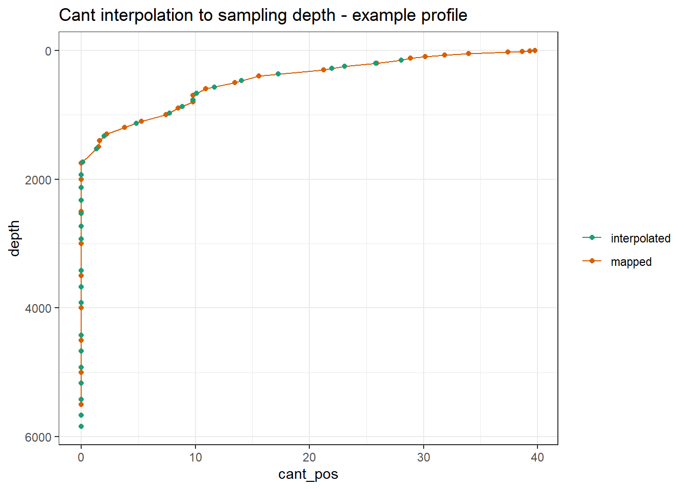
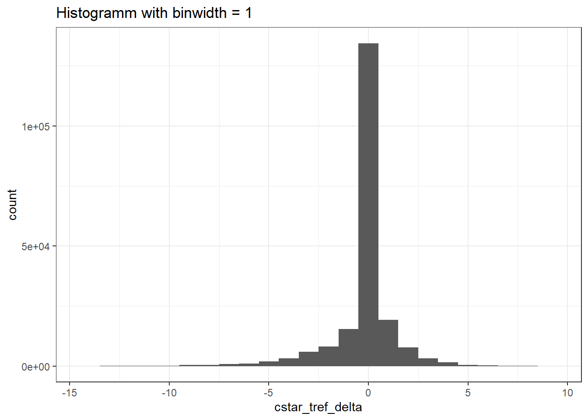
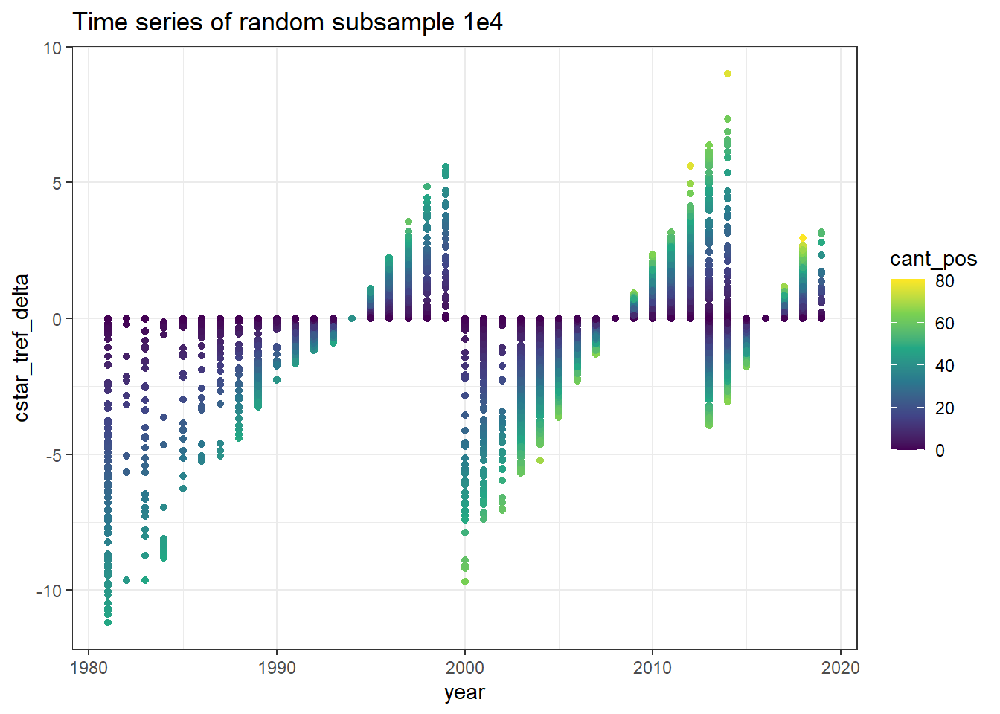
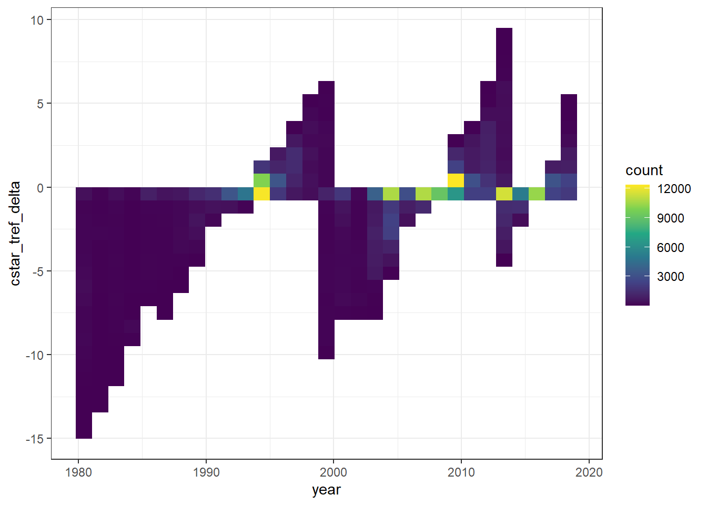

eMLR - data preparation
Jens Daniel Müller
26 November, 2020
Last updated: 2020-11-26
Checks: 7 0
Knit directory: Cant_eMLR/
This reproducible R Markdown analysis was created with workflowr (version 1.6.2). The Checks tab describes the reproducibility checks that were applied when the results were created. The Past versions tab lists the development history.
Great! Since the R Markdown file has been committed to the Git repository, you know the exact version of the code that produced these results.
Great job! The global environment was empty. Objects defined in the global environment can affect the analysis in your R Markdown file in unknown ways. For reproduciblity it’s best to always run the code in an empty environment.
The command set.seed(20200707) was run prior to running the code in the R Markdown file. Setting a seed ensures that any results that rely on randomness, e.g. subsampling or permutations, are reproducible.
Great job! Recording the operating system, R version, and package versions is critical for reproducibility.
Nice! There were no cached chunks for this analysis, so you can be confident that you successfully produced the results during this run.
Great job! Using relative paths to the files within your workflowr project makes it easier to run your code on other machines.
Great! You are using Git for version control. Tracking code development and connecting the code version to the results is critical for reproducibility.
The results in this page were generated with repository version bbffe70. See the Past versions tab to see a history of the changes made to the R Markdown and HTML files.
Note that you need to be careful to ensure that all relevant files for the analysis have been committed to Git prior to generating the results (you can use wflow_publish or wflow_git_commit). workflowr only checks the R Markdown file, but you know if there are other scripts or data files that it depends on. Below is the status of the Git repository when the results were generated:
Ignored files:
Ignored: .Rproj.user/
Ignored: data/
Ignored: dump/
Untracked files:
Untracked: code/biogeochemical_functions.R
Untracked: code/test_scripts/analysis_previous_studies.Rmd
Untracked: code/test_scripts/read_World_Ocean_Atlas_2013_Clement.Rmd
Unstaged changes:
Modified: analysis/eMLR_assumption_testing.Rmd
Modified: analysis/eMLR_model_fitting.Rmd
Modified: analysis/mapping_cant_calculation.Rmd
Modified: code/mapping_functions.R
Modified: code/plotting_functions.R
Deleted: output/figure/eMLR/data_preparation/all_cruises_clean/GLODAP_cruise_date_1981-07-14_n_2095_cruise_237_.png
Deleted: output/figure/eMLR/data_preparation/all_cruises_clean/GLODAP_cruise_date_1983-01-12_n_1184_cruise_238_.png
Deleted: output/figure/eMLR/data_preparation/all_cruises_clean/GLODAP_cruise_date_1983-11-25_n_409_cruise_239_.png
Deleted: output/figure/eMLR/data_preparation/all_cruises_clean/GLODAP_cruise_date_1984-07-22_n_272_cruise_223_.png
Deleted: output/figure/eMLR/data_preparation/all_cruises_clean/GLODAP_cruise_date_1986-03-13_n_1437_cruise_370_.png
Deleted: output/figure/eMLR/data_preparation/all_cruises_clean/GLODAP_cruise_date_1986-08-13_n_388_cruise_2_.png
Deleted: output/figure/eMLR/data_preparation/all_cruises_clean/GLODAP_cruise_date_1988-09-11_n_3171_cruise_242_.png
Deleted: output/figure/eMLR/data_preparation/all_cruises_clean/GLODAP_cruise_date_1989-02-17_n_59_cruise_621_.png
Deleted: output/figure/eMLR/data_preparation/all_cruises_clean/GLODAP_cruise_date_1989-05-08_n_96_cruise_275_.png
Deleted: output/figure/eMLR/data_preparation/all_cruises_clean/GLODAP_cruise_date_1989-05-22_n_489_cruise_368_.png
Deleted: output/figure/eMLR/data_preparation/all_cruises_clean/GLODAP_cruise_date_1989-08-18_n_319_cruise_371_.png
Deleted: output/figure/eMLR/data_preparation/all_cruises_clean/GLODAP_cruise_date_1990-02-18_n_548_cruise_28_.png
Deleted: output/figure/eMLR/data_preparation/all_cruises_clean/GLODAP_cruise_date_1991-05-01_n_255_cruise_679_.png
Deleted: output/figure/eMLR/data_preparation/all_cruises_clean/GLODAP_cruise_date_1991-06-22_n_211_cruise_284_.png
Deleted: output/figure/eMLR/data_preparation/all_cruises_clean/GLODAP_cruise_date_1991-08-06_n_690_cruise_285_.png
Deleted: output/figure/eMLR/data_preparation/all_cruises_clean/GLODAP_cruise_date_1991-09-15_n_402_cruise_286_.png
Deleted: output/figure/eMLR/data_preparation/all_cruises_clean/GLODAP_cruise_date_1992-03-11_n_849_cruise_717_.png
Deleted: output/figure/eMLR/data_preparation/all_cruises_clean/GLODAP_cruise_date_1992-05-27_n_475_cruise_243_.png
Deleted: output/figure/eMLR/data_preparation/all_cruises_clean/GLODAP_cruise_date_1992-09-20_n_861_cruise_296_.png
Deleted: output/figure/eMLR/data_preparation/all_cruises_clean/GLODAP_cruise_date_1992-10-30_n_1108_cruise_245_.png
Deleted: output/figure/eMLR/data_preparation/all_cruises_clean/GLODAP_cruise_date_1992-12-30_n_755_cruise_246_.png
Deleted: output/figure/eMLR/data_preparation/all_cruises_clean/GLODAP_cruise_date_1993-03-15_n_1026_cruise_247_.png
Deleted: output/figure/eMLR/data_preparation/all_cruises_clean/GLODAP_cruise_date_1993-05-16_n_175_cruise_219_.png
Deleted: output/figure/eMLR/data_preparation/all_cruises_clean/GLODAP_cruise_date_1993-05-31_n_518_cruise_300_.png
Deleted: output/figure/eMLR/data_preparation/all_cruises_clean/GLODAP_cruise_date_1993-07-11_n_479_cruise_338_.png
Deleted: output/figure/eMLR/data_preparation/all_cruises_clean/GLODAP_cruise_date_1993-08-02_n_1466_cruise_301_.png
Deleted: output/figure/eMLR/data_preparation/all_cruises_clean/GLODAP_cruise_date_1993-09-06_n_196_cruise_712_.png
Deleted: output/figure/eMLR/data_preparation/all_cruises_clean/GLODAP_cruise_date_1993-10-25_n_687_cruise_302_.png
Deleted: output/figure/eMLR/data_preparation/all_cruises_clean/GLODAP_cruise_date_1994-01-27_n_858_cruise_459_.png
Deleted: output/figure/eMLR/data_preparation/all_cruises_clean/GLODAP_cruise_date_1994-02-06_n_621_cruise_303_.png
Deleted: output/figure/eMLR/data_preparation/all_cruises_clean/GLODAP_cruise_date_1994-02-15_n_2478_cruise_297_.png
Deleted: output/figure/eMLR/data_preparation/all_cruises_clean/GLODAP_cruise_date_1994-04-27_n_1097_cruise_248_.png
Deleted: output/figure/eMLR/data_preparation/all_cruises_clean/GLODAP_cruise_date_1994-05-06_n_235_cruise_428_.png
Deleted: output/figure/eMLR/data_preparation/all_cruises_clean/GLODAP_cruise_date_1994-05-07_n_2489_cruise_270_.png
Deleted: output/figure/eMLR/data_preparation/all_cruises_clean/GLODAP_cruise_date_1994-08-31_n_86_cruise_429_.png
Deleted: output/figure/eMLR/data_preparation/all_cruises_clean/GLODAP_cruise_date_1994-10-11_n_778_cruise_102_.png
Deleted: output/figure/eMLR/data_preparation/all_cruises_clean/GLODAP_cruise_date_1994-12-28_n_1422_cruise_249_.png
Deleted: output/figure/eMLR/data_preparation/all_cruises_clean/GLODAP_cruise_date_1995-01-10_n_58_cruise_441_.png
Deleted: output/figure/eMLR/data_preparation/all_cruises_clean/GLODAP_cruise_date_1995-01-18_n_725_cruise_67_.png
Deleted: output/figure/eMLR/data_preparation/all_cruises_clean/GLODAP_cruise_date_1995-01-29_n_812_cruise_361_.png
Deleted: output/figure/eMLR/data_preparation/all_cruises_clean/GLODAP_cruise_date_1995-02-13_n_1808_cruise_250_.png
Deleted: output/figure/eMLR/data_preparation/all_cruises_clean/GLODAP_cruise_date_1995-03-12_n_218_cruise_362_.png
Deleted: output/figure/eMLR/data_preparation/all_cruises_clean/GLODAP_cruise_date_1995-03-29_n_1453_cruise_251_.png
Deleted: output/figure/eMLR/data_preparation/all_cruises_clean/GLODAP_cruise_date_1995-05-13_n_1438_cruise_252_.png
Deleted: output/figure/eMLR/data_preparation/all_cruises_clean/GLODAP_cruise_date_1995-06-26_n_1079_cruise_253_.png
Deleted: output/figure/eMLR/data_preparation/all_cruises_clean/GLODAP_cruise_date_1995-08-01_n_1579_cruise_254_.png
Deleted: output/figure/eMLR/data_preparation/all_cruises_clean/GLODAP_cruise_date_1995-09-02_n_421_cruise_431_.png
Deleted: output/figure/eMLR/data_preparation/all_cruises_clean/GLODAP_cruise_date_1995-09-22_n_1406_cruise_255_.png
Deleted: output/figure/eMLR/data_preparation/all_cruises_clean/GLODAP_cruise_date_1995-10-10_n_1551_cruise_339_.png
Deleted: output/figure/eMLR/data_preparation/all_cruises_clean/GLODAP_cruise_date_1995-11-18_n_697_cruise_256_.png
Deleted: output/figure/eMLR/data_preparation/all_cruises_clean/GLODAP_cruise_date_1995-12-26_n_1346_cruise_257_.png
Deleted: output/figure/eMLR/data_preparation/all_cruises_clean/GLODAP_cruise_date_1996-02-11_n_2160_cruise_280_.png
Deleted: output/figure/eMLR/data_preparation/all_cruises_clean/GLODAP_cruise_date_1996-03-07_n_1135_cruise_374_.png
Deleted: output/figure/eMLR/data_preparation/all_cruises_clean/GLODAP_cruise_date_1996-05-01_n_518_cruise_334_.png
Deleted: output/figure/eMLR/data_preparation/all_cruises_clean/GLODAP_cruise_date_1996-06-07_n_1030_cruise_288_.png
Deleted: output/figure/eMLR/data_preparation/all_cruises_clean/GLODAP_cruise_date_1996-06-24_n_184_cruise_618_.png
Deleted: output/figure/eMLR/data_preparation/all_cruises_clean/GLODAP_cruise_date_1996-09-09_n_554_cruise_68_.png
Deleted: output/figure/eMLR/data_preparation/all_cruises_clean/GLODAP_cruise_date_1996-09-26_n_85_cruise_40_.png
Deleted: output/figure/eMLR/data_preparation/all_cruises_clean/GLODAP_cruise_date_1996-11-17_n_738_cruise_258_.png
Deleted: output/figure/eMLR/data_preparation/all_cruises_clean/GLODAP_cruise_date_1997-05-26_n_1062_cruise_160_.png
Deleted: output/figure/eMLR/data_preparation/all_cruises_clean/GLODAP_cruise_date_1997-05-27_n_309_cruise_42_.png
Deleted: output/figure/eMLR/data_preparation/all_cruises_clean/GLODAP_cruise_date_1997-06-14_n_1472_cruise_259_.png
Deleted: output/figure/eMLR/data_preparation/all_cruises_clean/GLODAP_cruise_date_1997-07-30_n_1132_cruise_260_.png
Deleted: output/figure/eMLR/data_preparation/all_cruises_clean/GLODAP_cruise_date_1997-08-27_n_634_cruise_261_.png
Deleted: output/figure/eMLR/data_preparation/all_cruises_clean/GLODAP_cruise_date_1997-11-22_n_211_cruise_464_.png
Deleted: output/figure/eMLR/data_preparation/all_cruises_clean/GLODAP_cruise_date_1997-12-20_n_514_cruise_434_.png
Deleted: output/figure/eMLR/data_preparation/all_cruises_clean/GLODAP_cruise_date_1998-02-12_n_1034_cruise_341_.png
Deleted: output/figure/eMLR/data_preparation/all_cruises_clean/GLODAP_cruise_date_1998-03-14_n_196_cruise_69_.png
Deleted: output/figure/eMLR/data_preparation/all_cruises_clean/GLODAP_cruise_date_1998-06-07_n_44_cruise_448_.png
Deleted: output/figure/eMLR/data_preparation/all_cruises_clean/GLODAP_cruise_date_1998-06-28_n_52_cruise_449_.png
Deleted: output/figure/eMLR/data_preparation/all_cruises_clean/GLODAP_cruise_date_1998-08-03_n_187_cruise_450_.png
Deleted: output/figure/eMLR/data_preparation/all_cruises_clean/GLODAP_cruise_date_1998-10-09_n_33_cruise_409_.png
Deleted: output/figure/eMLR/data_preparation/all_cruises_clean/GLODAP_cruise_date_1998-11-24_n_251_cruise_465_.png
Deleted: output/figure/eMLR/data_preparation/all_cruises_clean/GLODAP_cruise_date_1999-01-07_n_120_cruise_466_.png
Deleted: output/figure/eMLR/data_preparation/all_cruises_clean/GLODAP_cruise_date_1999-05-17_n_107_cruise_467_.png
Deleted: output/figure/eMLR/data_preparation/all_cruises_clean/GLODAP_cruise_date_1999-05-31_n_338_cruise_461_.png
Deleted: output/figure/eMLR/data_preparation/all_cruises_clean/GLODAP_cruise_date_1999-06-23_n_381_cruise_46_.png
Deleted: output/figure/eMLR/data_preparation/all_cruises_clean/GLODAP_cruise_date_1999-09-05_n_89_cruise_468_.png
Deleted: output/figure/eMLR/data_preparation/all_cruises_clean/GLODAP_cruise_date_1999-10-14_n_33_cruise_410_.png
Deleted: output/figure/eMLR/data_preparation/all_cruises_clean/GLODAP_cruise_date_2000-01-20_n_186_cruise_472_.png
Deleted: output/figure/eMLR/data_preparation/all_cruises_clean/GLODAP_cruise_date_2000-05-22_n_434_cruise_24_.png
Deleted: output/figure/eMLR/data_preparation/all_cruises_clean/GLODAP_cruise_date_2000-10-14_n_26_cruise_411_.png
Deleted: output/figure/eMLR/data_preparation/all_cruises_clean/GLODAP_cruise_date_2000-10-16_n_380_cruise_437_.png
Deleted: output/figure/eMLR/data_preparation/all_cruises_clean/GLODAP_cruise_date_2000-10-26_n_609_cruise_82_.png
Deleted: output/figure/eMLR/data_preparation/all_cruises_clean/GLODAP_cruise_date_2001-06-15_n_1143_cruise_83_.png
Deleted: output/figure/eMLR/data_preparation/all_cruises_clean/GLODAP_cruise_date_2001-06-23_n_381_cruise_476_.png
Deleted: output/figure/eMLR/data_preparation/all_cruises_clean/GLODAP_cruise_date_2001-08-14_n_870_cruise_477_.png
Deleted: output/figure/eMLR/data_preparation/all_cruises_clean/GLODAP_cruise_date_2001-09-04_n_32_cruise_478_.png
Deleted: output/figure/eMLR/data_preparation/all_cruises_clean/GLODAP_cruise_date_2001-09-12_n_392_cruise_438_.png
Deleted: output/figure/eMLR/data_preparation/all_cruises_clean/GLODAP_cruise_date_2001-11-17_n_936_cruise_70_.png
Deleted: output/figure/eMLR/data_preparation/all_cruises_clean/GLODAP_cruise_date_2002-04-01_n_46_cruise_682_.png
Deleted: output/figure/eMLR/data_preparation/all_cruises_clean/GLODAP_cruise_date_2002-05-29_n_26_cruise_706_.png
Deleted: output/figure/eMLR/data_preparation/all_cruises_clean/GLODAP_cruise_date_2002-06-28_n_769_cruise_392_.png
Deleted: output/figure/eMLR/data_preparation/all_cruises_clean/GLODAP_cruise_date_2003-03-13_n_768_cruise_484_.png
Deleted: output/figure/eMLR/data_preparation/all_cruises_clean/GLODAP_cruise_date_2003-07-03_n_14_cruise_591_.png
Deleted: output/figure/eMLR/data_preparation/all_cruises_clean/GLODAP_cruise_date_2003-07-23_n_20_cruise_592_.png
Deleted: output/figure/eMLR/data_preparation/all_cruises_clean/GLODAP_cruise_date_2003-08-10_n_1153_cruise_56_.png
Deleted: output/figure/eMLR/data_preparation/all_cruises_clean/GLODAP_cruise_date_2003-09-07_n_2722_cruise_486_.png
Deleted: output/figure/eMLR/data_preparation/all_cruises_clean/GLODAP_cruise_date_2003-10-06_n_1065_cruise_264_.png
Deleted: output/figure/eMLR/data_preparation/all_cruises_clean/GLODAP_cruise_date_2003-10-07_n_16_cruise_633_.png
Deleted: output/figure/eMLR/data_preparation/all_cruises_clean/GLODAP_cruise_date_2003-11-05_n_782_cruise_265_.png
Deleted: output/figure/eMLR/data_preparation/all_cruises_clean/GLODAP_cruise_date_2003-11-19_n_1221_cruise_487_.png
Deleted: output/figure/eMLR/data_preparation/all_cruises_clean/GLODAP_cruise_date_2004-01-01_n_1682_cruise_488_.png
Deleted: output/figure/eMLR/data_preparation/all_cruises_clean/GLODAP_cruise_date_2004-01-23_n_13_cruise_593_.png
Deleted: output/figure/eMLR/data_preparation/all_cruises_clean/GLODAP_cruise_date_2004-04-06_n_61_cruise_489_.png
Deleted: output/figure/eMLR/data_preparation/all_cruises_clean/GLODAP_cruise_date_2004-04-22_n_916_cruise_695_.png
Deleted: output/figure/eMLR/data_preparation/all_cruises_clean/GLODAP_cruise_date_2004-04-29_n_59_cruise_556_.png
Deleted: output/figure/eMLR/data_preparation/all_cruises_clean/GLODAP_cruise_date_2004-05-22_n_212_cruise_167_.png
Deleted: output/figure/eMLR/data_preparation/all_cruises_clean/GLODAP_cruise_date_2004-05-26_n_10_cruise_463_.png
Deleted: output/figure/eMLR/data_preparation/all_cruises_clean/GLODAP_cruise_date_2004-06-20_n_14_cruise_594_.png
Deleted: output/figure/eMLR/data_preparation/all_cruises_clean/GLODAP_cruise_date_2004-06-22_n_812_cruise_393_.png
Deleted: output/figure/eMLR/data_preparation/all_cruises_clean/GLODAP_cruise_date_2004-07-12_n_63_cruise_595_.png
Deleted: output/figure/eMLR/data_preparation/all_cruises_clean/GLODAP_cruise_date_2004-07-20_n_3228_cruise_272_.png
Deleted: output/figure/eMLR/data_preparation/all_cruises_clean/GLODAP_cruise_date_2004-08-17_n_956_cruise_490_.png
Deleted: output/figure/eMLR/data_preparation/all_cruises_clean/GLODAP_cruise_date_2004-10-23_n_83_cruise_492_.png
Deleted: output/figure/eMLR/data_preparation/all_cruises_clean/GLODAP_cruise_date_2004-10-27_n_59_cruise_596_.png
Deleted: output/figure/eMLR/data_preparation/all_cruises_clean/GLODAP_cruise_date_2004-11-27_n_926_cruise_493_.png
Deleted: output/figure/eMLR/data_preparation/all_cruises_clean/GLODAP_cruise_date_2005-01-10_n_695_cruise_72_.png
Deleted: output/figure/eMLR/data_preparation/all_cruises_clean/GLODAP_cruise_date_2005-01-24_n_14_cruise_597_.png
Deleted: output/figure/eMLR/data_preparation/all_cruises_clean/GLODAP_cruise_date_2005-01-25_n_2240_cruise_350_.png
Deleted: output/figure/eMLR/data_preparation/all_cruises_clean/GLODAP_cruise_date_2005-01-25_n_59_cruise_558_.png
Deleted: output/figure/eMLR/data_preparation/all_cruises_clean/GLODAP_cruise_date_2005-03-08_n_67_cruise_494_.png
Deleted: output/figure/eMLR/data_preparation/all_cruises_clean/GLODAP_cruise_date_2005-04-28_n_60_cruise_559_.png
Deleted: output/figure/eMLR/data_preparation/all_cruises_clean/GLODAP_cruise_date_2005-05-25_n_894_cruise_683_.png
Deleted: output/figure/eMLR/data_preparation/all_cruises_clean/GLODAP_cruise_date_2005-05-31_n_251_cruise_168_.png
Deleted: output/figure/eMLR/data_preparation/all_cruises_clean/GLODAP_cruise_date_2005-06-11_n_1558_cruise_495_.png
Deleted: output/figure/eMLR/data_preparation/all_cruises_clean/GLODAP_cruise_date_2005-07-17_n_66_cruise_599_.png
Deleted: output/figure/eMLR/data_preparation/all_cruises_clean/GLODAP_cruise_date_2005-09-14_n_1839_cruise_266_.png
Deleted: output/figure/eMLR/data_preparation/all_cruises_clean/GLODAP_cruise_date_2005-09-21_n_503_cruise_666_.png
Deleted: output/figure/eMLR/data_preparation/all_cruises_clean/GLODAP_cruise_date_2005-09-30_n_178_cruise_496_.png
Deleted: output/figure/eMLR/data_preparation/all_cruises_clean/GLODAP_cruise_date_2005-10-25_n_69_cruise_600_.png
Deleted: output/figure/eMLR/data_preparation/all_cruises_clean/GLODAP_cruise_date_2005-12-09_n_2670_cruise_497_.png
Deleted: output/figure/eMLR/data_preparation/all_cruises_clean/GLODAP_cruise_date_2006-01-24_n_68_cruise_561_.png
Deleted: output/figure/eMLR/data_preparation/all_cruises_clean/GLODAP_cruise_date_2006-03-08_n_1719_cruise_306_.png
Deleted: output/figure/eMLR/data_preparation/all_cruises_clean/GLODAP_cruise_date_2006-04-25_n_38_cruise_562_.png
Deleted: output/figure/eMLR/data_preparation/all_cruises_clean/GLODAP_cruise_date_2006-06-04_n_589_cruise_25_.png
Deleted: output/figure/eMLR/data_preparation/all_cruises_clean/GLODAP_cruise_date_2006-06-16_n_1_cruise_602_.png
Deleted: output/figure/eMLR/data_preparation/all_cruises_clean/GLODAP_cruise_date_2006-06-21_n_968_cruise_498_.png
Deleted: output/figure/eMLR/data_preparation/all_cruises_clean/GLODAP_cruise_date_2006-07-11_n_37_cruise_603_.png
Deleted: output/figure/eMLR/data_preparation/all_cruises_clean/GLODAP_cruise_date_2006-10-26_n_68_cruise_604_.png
Deleted: output/figure/eMLR/data_preparation/all_cruises_clean/GLODAP_cruise_date_2007-01-23_n_85_cruise_564_.png
Deleted: output/figure/eMLR/data_preparation/all_cruises_clean/GLODAP_cruise_date_2007-02-28_n_1678_cruise_352_.png
Deleted: output/figure/eMLR/data_preparation/all_cruises_clean/GLODAP_cruise_date_2007-03-09_n_1058_cruise_501_.png
Deleted: output/figure/eMLR/data_preparation/all_cruises_clean/GLODAP_cruise_date_2007-04-11_n_1995_cruise_353_.png
Deleted: output/figure/eMLR/data_preparation/all_cruises_clean/GLODAP_cruise_date_2007-04-30_n_63_cruise_565_.png
Deleted: output/figure/eMLR/data_preparation/all_cruises_clean/GLODAP_cruise_date_2007-05-30_n_632_cruise_327_.png
Deleted: output/figure/eMLR/data_preparation/all_cruises_clean/GLODAP_cruise_date_2007-07-03_n_47_cruise_606_.png
Deleted: output/figure/eMLR/data_preparation/all_cruises_clean/GLODAP_cruise_date_2007-07-31_n_33_cruise_607_.png
Deleted: output/figure/eMLR/data_preparation/all_cruises_clean/GLODAP_cruise_date_2007-08-14_n_1212_cruise_502_.png
Deleted: output/figure/eMLR/data_preparation/all_cruises_clean/GLODAP_cruise_date_2007-09-16_n_486_cruise_667_.png
Deleted: output/figure/eMLR/data_preparation/all_cruises_clean/GLODAP_cruise_date_2007-09-18_n_299_cruise_503_.png
Deleted: output/figure/eMLR/data_preparation/all_cruises_clean/GLODAP_cruise_date_2007-10-30_n_1828_cruise_504_.png
Deleted: output/figure/eMLR/data_preparation/all_cruises_clean/GLODAP_cruise_date_2007-10-31_n_63_cruise_566_.png
Deleted: output/figure/eMLR/data_preparation/all_cruises_clean/GLODAP_cruise_date_2007-12-07_n_1654_cruise_505_.png
Deleted: output/figure/eMLR/data_preparation/all_cruises_clean/GLODAP_cruise_date_2008-01-08_n_608_cruise_74_.png
Deleted: output/figure/eMLR/data_preparation/all_cruises_clean/GLODAP_cruise_date_2008-01-16_n_3265_cruise_345_.png
Deleted: output/figure/eMLR/data_preparation/all_cruises_clean/GLODAP_cruise_date_2008-02-01_n_79_cruise_608_.png
Deleted: output/figure/eMLR/data_preparation/all_cruises_clean/GLODAP_cruise_date_2008-02-21_n_1666_cruise_354_.png
Deleted: output/figure/eMLR/data_preparation/all_cruises_clean/GLODAP_cruise_date_2008-03-02_n_996_cruise_385_.png
Deleted: output/figure/eMLR/data_preparation/all_cruises_clean/GLODAP_cruise_date_2008-03-15_n_936_cruise_19_.png
Deleted: output/figure/eMLR/data_preparation/all_cruises_clean/GLODAP_cruise_date_2008-04-06_n_846_cruise_75_.png
Deleted: output/figure/eMLR/data_preparation/all_cruises_clean/GLODAP_cruise_date_2008-04-28_n_57_cruise_568_.png
Deleted: output/figure/eMLR/data_preparation/all_cruises_clean/GLODAP_cruise_date_2008-05-28_n_426_cruise_171_.png
Deleted: output/figure/eMLR/data_preparation/all_cruises_clean/GLODAP_cruise_date_2008-06-22_n_880_cruise_394_.png
Deleted: output/figure/eMLR/data_preparation/all_cruises_clean/GLODAP_cruise_date_2008-10-21_n_363_cruise_506_.png
Deleted: output/figure/eMLR/data_preparation/all_cruises_clean/GLODAP_cruise_date_2009-01-07_n_345_cruise_674_.png
Deleted: output/figure/eMLR/data_preparation/all_cruises_clean/GLODAP_cruise_date_2009-02-16_n_673_cruise_675_.png
Deleted: output/figure/eMLR/data_preparation/all_cruises_clean/GLODAP_cruise_date_2009-02-27_n_1170_cruise_84_.png
Deleted: output/figure/eMLR/data_preparation/all_cruises_clean/GLODAP_cruise_date_2009-03-29_n_1074_cruise_676_.png
Deleted: output/figure/eMLR/data_preparation/all_cruises_clean/GLODAP_cruise_date_2009-04-17_n_3611_cruise_355_.png
Deleted: output/figure/eMLR/data_preparation/all_cruises_clean/GLODAP_cruise_date_2009-05-18_n_2666_cruise_507_.png
Deleted: output/figure/eMLR/data_preparation/all_cruises_clean/GLODAP_cruise_date_2009-05-23_n_317_cruise_172_.png
Deleted: output/figure/eMLR/data_preparation/all_cruises_clean/GLODAP_cruise_date_2009-07-11_n_64_cruise_635_.png
Deleted: output/figure/eMLR/data_preparation/all_cruises_clean/GLODAP_cruise_date_2009-08-02_n_127_cruise_26_.png
Deleted: output/figure/eMLR/data_preparation/all_cruises_clean/GLODAP_cruise_date_2009-11-10_n_319_cruise_63_.png
Deleted: output/figure/eMLR/data_preparation/all_cruises_clean/GLODAP_cruise_date_2009-11-18_n_160_cruise_1059_.png
Deleted: output/figure/eMLR/data_preparation/all_cruises_clean/GLODAP_cruise_date_2010-01-01_n_4235_cruise_273_.png
Deleted: output/figure/eMLR/data_preparation/all_cruises_clean/GLODAP_cruise_date_2010-01-25_n_935_cruise_699_.png
Deleted: output/figure/eMLR/data_preparation/all_cruises_clean/GLODAP_cruise_date_2010-03-30_n_2343_cruise_346_.png
Deleted: output/figure/eMLR/data_preparation/all_cruises_clean/GLODAP_cruise_date_2010-04-02_n_387_cruise_703_.png
Deleted: output/figure/eMLR/data_preparation/all_cruises_clean/GLODAP_cruise_date_2010-05-21_n_273_cruise_173_.png
Deleted: output/figure/eMLR/data_preparation/all_cruises_clean/GLODAP_cruise_date_2010-05-26_n_168_cruise_1085_.png
Deleted: output/figure/eMLR/data_preparation/all_cruises_clean/GLODAP_cruise_date_2010-06-19_n_847_cruise_395_.png
Deleted: output/figure/eMLR/data_preparation/all_cruises_clean/GLODAP_cruise_date_2010-06-26_n_157_cruise_1063_.png
Deleted: output/figure/eMLR/data_preparation/all_cruises_clean/GLODAP_cruise_date_2010-07-25_n_1356_cruise_609_.png
Deleted: output/figure/eMLR/data_preparation/all_cruises_clean/GLODAP_cruise_date_2010-08-19_n_88_cruise_1064_.png
Deleted: output/figure/eMLR/data_preparation/all_cruises_clean/GLODAP_cruise_date_2010-10-06_n_72_cruise_2028_.png
Deleted: output/figure/eMLR/data_preparation/all_cruises_clean/GLODAP_cruise_date_2010-11-15_n_87_cruise_2029_.png
Deleted: output/figure/eMLR/data_preparation/all_cruises_clean/GLODAP_cruise_date_2010-12-22_n_1308_cruise_20_.png
Deleted: output/figure/eMLR/data_preparation/all_cruises_clean/GLODAP_cruise_date_2011-01-17_n_108_cruise_1065_.png
Deleted: output/figure/eMLR/data_preparation/all_cruises_clean/GLODAP_cruise_date_2011-01-30_n_270_cruise_1087_.png
Deleted: output/figure/eMLR/data_preparation/all_cruises_clean/GLODAP_cruise_date_2011-02-18_n_121_cruise_1066_.png
Deleted: output/figure/eMLR/data_preparation/all_cruises_clean/GLODAP_cruise_date_2011-03-21_n_2158_cruise_295_.png
Deleted: output/figure/eMLR/data_preparation/all_cruises_clean/GLODAP_cruise_date_2011-05-18_n_527_cruise_174_.png
Deleted: output/figure/eMLR/data_preparation/all_cruises_clean/GLODAP_cruise_date_2011-06-25_n_250_cruise_1067_.png
Deleted: output/figure/eMLR/data_preparation/all_cruises_clean/GLODAP_cruise_date_2011-07-07_n_2466_cruise_517_.png
Deleted: output/figure/eMLR/data_preparation/all_cruises_clean/GLODAP_cruise_date_2011-10-08_n_896_cruise_347_.png
Deleted: output/figure/eMLR/data_preparation/all_cruises_clean/GLODAP_cruise_date_2011-10-20_n_105_cruise_2031_.png
Deleted: output/figure/eMLR/data_preparation/all_cruises_clean/GLODAP_cruise_date_2012-01-28_n_253_cruise_1090_.png
Deleted: output/figure/eMLR/data_preparation/all_cruises_clean/GLODAP_cruise_date_2012-02-06_n_591_cruise_1002_.png
Deleted: output/figure/eMLR/data_preparation/all_cruises_clean/GLODAP_cruise_date_2012-02-19_n_242_cruise_1069_.png
Deleted: output/figure/eMLR/data_preparation/all_cruises_clean/GLODAP_cruise_date_2012-04-01_n_826_cruise_329_.png
Deleted: output/figure/eMLR/data_preparation/all_cruises_clean/GLODAP_cruise_date_2012-04-15_n_111_cruise_2033_.png
Deleted: output/figure/eMLR/data_preparation/all_cruises_clean/GLODAP_cruise_date_2012-05-01_n_1404_cruise_330_.png
Deleted: output/figure/eMLR/data_preparation/all_cruises_clean/GLODAP_cruise_date_2012-06-07_n_152_cruise_1029_.png
Deleted: output/figure/eMLR/data_preparation/all_cruises_clean/GLODAP_cruise_date_2012-06-26_n_388_cruise_1092_.png
Deleted: output/figure/eMLR/data_preparation/all_cruises_clean/GLODAP_cruise_date_2012-07-05_n_718_cruise_1031_.png
Deleted: output/figure/eMLR/data_preparation/all_cruises_clean/GLODAP_cruise_date_2012-07-20_n_793_cruise_1071_.png
Deleted: output/figure/eMLR/data_preparation/all_cruises_clean/GLODAP_cruise_date_2012-08-14_n_1250_cruise_518_.png
Deleted: output/figure/eMLR/data_preparation/all_cruises_clean/GLODAP_cruise_date_2012-11-25_n_77_cruise_1073_.png
Deleted: output/figure/eMLR/data_preparation/all_cruises_clean/GLODAP_cruise_date_2012-12-05_n_231_cruise_2071_.png
Deleted: output/figure/eMLR/data_preparation/all_cruises_clean/GLODAP_cruise_date_2012-12-12_n_118_cruise_1074_.png
Deleted: output/figure/eMLR/data_preparation/all_cruises_clean/GLODAP_cruise_date_2012-12-15_n_828_cruise_1050_.png
Deleted: output/figure/eMLR/data_preparation/all_cruises_clean/GLODAP_cruise_date_2013-01-23_n_902_cruise_1051_.png
Deleted: output/figure/eMLR/data_preparation/all_cruises_clean/GLODAP_cruise_date_2013-01-29_n_369_cruise_1093_.png
Deleted: output/figure/eMLR/data_preparation/all_cruises_clean/GLODAP_cruise_date_2013-02-19_n_221_cruise_1076_.png
Deleted: output/figure/eMLR/data_preparation/all_cruises_clean/GLODAP_cruise_date_2013-03-14_n_222_cruise_2072_.png
Deleted: output/figure/eMLR/data_preparation/all_cruises_clean/GLODAP_cruise_date_2013-05-02_n_2819_cruise_1035_.png
Deleted: output/figure/eMLR/data_preparation/all_cruises_clean/GLODAP_cruise_date_2013-05-06_n_298_cruise_2073_.png
Deleted: output/figure/eMLR/data_preparation/all_cruises_clean/GLODAP_cruise_date_2013-06-09_n_233_cruise_1078_.png
Deleted: output/figure/eMLR/data_preparation/all_cruises_clean/GLODAP_cruise_date_2013-07-24_n_678_cruise_1079_.png
Deleted: output/figure/eMLR/data_preparation/all_cruises_clean/GLODAP_cruise_date_2013-08-21_n_883_cruise_1096_.png
Deleted: output/figure/eMLR/data_preparation/all_cruises_clean/GLODAP_cruise_date_2013-09-02_n_2030_cruise_1041_.png
Deleted: output/figure/eMLR/data_preparation/all_cruises_clean/GLODAP_cruise_date_2013-10-11_n_140_cruise_2035_.png
Deleted: output/figure/eMLR/data_preparation/all_cruises_clean/GLODAP_cruise_date_2013-12-06_n_137_cruise_2074_.png
Deleted: output/figure/eMLR/data_preparation/all_cruises_clean/GLODAP_cruise_date_2014-01-11_n_1770_cruise_1042_.png
Deleted: output/figure/eMLR/data_preparation/all_cruises_clean/GLODAP_cruise_date_2014-01-24_n_288_cruise_2075_.png
Deleted: output/figure/eMLR/data_preparation/all_cruises_clean/GLODAP_cruise_date_2014-02-22_n_253_cruise_2038_.png
Deleted: output/figure/eMLR/data_preparation/all_cruises_clean/GLODAP_cruise_date_2014-03-13_n_187_cruise_2076_.png
Deleted: output/figure/eMLR/data_preparation/all_cruises_clean/GLODAP_cruise_date_2014-04-18_n_2219_cruise_1036_.png
Deleted: output/figure/eMLR/data_preparation/all_cruises_clean/GLODAP_cruise_date_2014-04-29_n_78_cruise_2039_.png
Deleted: output/figure/eMLR/data_preparation/all_cruises_clean/GLODAP_cruise_date_2014-05-05_n_288_cruise_2077_.png
Deleted: output/figure/eMLR/data_preparation/all_cruises_clean/GLODAP_cruise_date_2014-05-18_n_272_cruise_2040_.png
Deleted: output/figure/eMLR/data_preparation/all_cruises_clean/GLODAP_cruise_date_2014-06-16_n_195_cruise_2078_.png
Deleted: output/figure/eMLR/data_preparation/all_cruises_clean/GLODAP_cruise_date_2014-07-08_n_374_cruise_1098_.png
Deleted: output/figure/eMLR/data_preparation/all_cruises_clean/GLODAP_cruise_date_2014-07-25_n_403_cruise_2041_.png
Deleted: output/figure/eMLR/data_preparation/all_cruises_clean/GLODAP_cruise_date_2014-08-03_n_1705_cruise_1053_.png
Deleted: output/figure/eMLR/data_preparation/all_cruises_clean/GLODAP_cruise_date_2014-08-10_n_726_cruise_1099_.png
Deleted: output/figure/eMLR/data_preparation/all_cruises_clean/GLODAP_cruise_date_2014-11-24_n_82_cruise_2079_.png
Deleted: output/figure/eMLR/data_preparation/all_cruises_clean/GLODAP_cruise_date_2014-12-11_n_536_cruise_1004_.png
Deleted: output/figure/eMLR/data_preparation/all_cruises_clean/GLODAP_cruise_date_2015-01-19_n_65_cruise_2043_.png
Deleted: output/figure/eMLR/data_preparation/all_cruises_clean/GLODAP_cruise_date_2015-01-29_n_315_cruise_2080_.png
Deleted: output/figure/eMLR/data_preparation/all_cruises_clean/GLODAP_cruise_date_2015-02-14_n_234_cruise_2044_.png
Deleted: output/figure/eMLR/data_preparation/all_cruises_clean/GLODAP_cruise_date_2015-03-04_n_215_cruise_2081_.png
Deleted: output/figure/eMLR/data_preparation/all_cruises_clean/GLODAP_cruise_date_2015-03-25_n_17_cruise_1017_.png
Deleted: output/figure/eMLR/data_preparation/all_cruises_clean/GLODAP_cruise_date_2015-04-19_n_185_cruise_1103_.png
Deleted: output/figure/eMLR/data_preparation/all_cruises_clean/GLODAP_cruise_date_2015-04-20_n_96_cruise_2045_.png
Deleted: output/figure/eMLR/data_preparation/all_cruises_clean/GLODAP_cruise_date_2015-05-02_n_230_cruise_2083_.png
Deleted: output/figure/eMLR/data_preparation/all_cruises_clean/GLODAP_cruise_date_2015-05-04_n_874_cruise_1043_.png
Deleted: output/figure/eMLR/data_preparation/all_cruises_clean/GLODAP_cruise_date_2015-05-12_n_368_cruise_1027_.png
Deleted: output/figure/eMLR/data_preparation/all_cruises_clean/GLODAP_cruise_date_2015-05-17_n_141_cruise_2046_.png
Deleted: output/figure/eMLR/data_preparation/all_cruises_clean/GLODAP_cruise_date_2015-05-17_n_689_cruise_1011_.png
Deleted: output/figure/eMLR/data_preparation/all_cruises_clean/GLODAP_cruise_date_2015-06-09_n_1589_cruise_1044_.png
Deleted: output/figure/eMLR/data_preparation/all_cruises_clean/GLODAP_cruise_date_2015-06-13_n_281_cruise_2084_.png
Deleted: output/figure/eMLR/data_preparation/all_cruises_clean/GLODAP_cruise_date_2015-07-20_n_445_cruise_2047_.png
Deleted: output/figure/eMLR/data_preparation/all_cruises_clean/GLODAP_cruise_date_2015-08-16_n_817_cruise_1100_.png
Deleted: output/figure/eMLR/data_preparation/all_cruises_clean/GLODAP_cruise_date_2015-11-20_n_106_cruise_2086_.png
Deleted: output/figure/eMLR/data_preparation/all_cruises_clean/GLODAP_cruise_date_2016-01-03_n_663_cruise_1054_.png
Deleted: output/figure/eMLR/data_preparation/all_cruises_clean/GLODAP_cruise_date_2016-01-16_n_78_cruise_2049_.png
Deleted: output/figure/eMLR/data_preparation/all_cruises_clean/GLODAP_cruise_date_2016-01-25_n_287_cruise_2087_.png
Deleted: output/figure/eMLR/data_preparation/all_cruises_clean/GLODAP_cruise_date_2016-02-15_n_381_cruise_2050_.png
Deleted: output/figure/eMLR/data_preparation/all_cruises_clean/GLODAP_cruise_date_2016-03-01_n_1359_cruise_1046_.png
Deleted: output/figure/eMLR/data_preparation/all_cruises_clean/GLODAP_cruise_date_2016-03-04_n_230_cruise_2088_.png
Deleted: output/figure/eMLR/data_preparation/all_cruises_clean/GLODAP_cruise_date_2016-04-13_n_106_cruise_2051_.png
Deleted: output/figure/eMLR/data_preparation/all_cruises_clean/GLODAP_cruise_date_2016-05-04_n_307_cruise_2090_.png
Deleted: output/figure/eMLR/data_preparation/all_cruises_clean/GLODAP_cruise_date_2016-05-16_n_146_cruise_2052_.png
Deleted: output/figure/eMLR/data_preparation/all_cruises_clean/GLODAP_cruise_date_2016-05-31_n_2080_cruise_1020_.png
Deleted: output/figure/eMLR/data_preparation/all_cruises_clean/GLODAP_cruise_date_2016-06-16_n_263_cruise_2091_.png
Deleted: output/figure/eMLR/data_preparation/all_cruises_clean/GLODAP_cruise_date_2016-06-24_n_104_cruise_2053_.png
Deleted: output/figure/eMLR/data_preparation/all_cruises_clean/GLODAP_cruise_date_2016-07-05_n_837_cruise_2011_.png
Deleted: output/figure/eMLR/data_preparation/all_cruises_clean/GLODAP_cruise_date_2016-07-21_n_1102_cruise_1101_.png
Deleted: output/figure/eMLR/data_preparation/all_cruises_clean/GLODAP_cruise_date_2016-08-13_n_290_cruise_2054_.png
Deleted: output/figure/eMLR/data_preparation/all_cruises_clean/GLODAP_cruise_date_2016-09-25_n_160_cruise_2055_.png
Deleted: output/figure/eMLR/data_preparation/all_cruises_clean/GLODAP_cruise_date_2016-11-20_n_103_cruise_2056_.png
Deleted: output/figure/eMLR/data_preparation/all_cruises_clean/GLODAP_cruise_date_2016-12-25_n_3975_cruise_1045_.png
Deleted: output/figure/eMLR/data_preparation/all_cruises_clean/GLODAP_cruise_date_2017-01-12_n_103_cruise_2093_.png
Deleted: output/figure/eMLR/data_preparation/all_cruises_clean/GLODAP_cruise_date_2017-01-30_n_368_cruise_2057_.png
Deleted: output/figure/eMLR/data_preparation/all_cruises_clean/GLODAP_cruise_date_2017-02-16_n_269_cruise_2094_.png
Deleted: output/figure/eMLR/data_preparation/all_cruises_clean/GLODAP_cruise_date_2017-02-19_n_428_cruise_1055_.png
Deleted: output/figure/eMLR/data_preparation/all_cruises_clean/GLODAP_cruise_date_2017-03-06_n_277_cruise_2058_.png
Deleted: output/figure/eMLR/data_preparation/all_cruises_clean/GLODAP_cruise_date_2017-04-16_n_274_cruise_2059_.png
Deleted: output/figure/eMLR/data_preparation/all_cruises_clean/GLODAP_cruise_date_2017-05-07_n_146_cruise_2060_.png
Deleted: output/figure/eMLR/data_preparation/all_cruises_clean/GLODAP_cruise_date_2017-05-11_n_696_cruise_2027_.png
Deleted: output/figure/eMLR/data_preparation/all_cruises_clean/GLODAP_cruise_date_2017-06-20_n_134_cruise_2061_.png
Deleted: output/figure/eMLR/data_preparation/all_cruises_clean/GLODAP_cruise_date_2017-07-09_n_1120_cruise_2096_.png
Deleted: output/figure/eMLR/data_preparation/all_cruises_clean/GLODAP_cruise_date_2017-08-13_n_224_cruise_2062_.png
Deleted: output/figure/eMLR/data_preparation/all_cruises_clean/GLODAP_cruise_date_2017-09-13_n_175_cruise_2097_.png
Deleted: output/figure/eMLR/data_preparation/all_cruises_clean/GLODAP_cruise_date_2017-12-04_n_247_cruise_2098_.png
Deleted: output/figure/eMLR/data_preparation/all_cruises_clean/GLODAP_cruise_date_2018-01-24_n_308_cruise_2099_.png
Deleted: output/figure/eMLR/data_preparation/all_cruises_clean/GLODAP_cruise_date_2018-01-29_n_1298_cruise_2008_.png
Deleted: output/figure/eMLR/data_preparation/all_cruises_clean/GLODAP_cruise_date_2018-02-12_n_275_cruise_2064_.png
Deleted: output/figure/eMLR/data_preparation/all_cruises_clean/GLODAP_cruise_date_2018-03-07_n_249_cruise_2100_.png
Deleted: output/figure/eMLR/data_preparation/all_cruises_clean/GLODAP_cruise_date_2018-03-19_n_1819_cruise_2105_.png
Deleted: output/figure/eMLR/data_preparation/all_cruises_clean/GLODAP_cruise_date_2018-04-16_n_328_cruise_2065_.png
Deleted: output/figure/eMLR/data_preparation/all_cruises_clean/GLODAP_cruise_date_2018-05-07_n_148_cruise_2101_.png
Deleted: output/figure/eMLR/data_preparation/all_cruises_clean/GLODAP_cruise_date_2018-05-28_n_243_cruise_2066_.png
Deleted: output/figure/eMLR/data_preparation/all_cruises_clean/GLODAP_cruise_date_2018-06-22_n_510_cruise_2102_.png
Deleted: output/figure/eMLR/data_preparation/all_cruises_clean/GLODAP_cruise_date_2018-08-01_n_185_cruise_2067_.png
Deleted: output/figure/eMLR/data_preparation/all_cruises_clean/GLODAP_cruise_date_2019-04-27_n_808_cruise_2013_.png
Deleted: output/figure/eMLR/model_validation/GO_new_GO_SHIP_Atlantic_(-Inf,26]_sal aou oxygen silicate phosphate_eMLR_Cstar_residuals.png
Deleted: output/figure/eMLR/model_validation/GO_new_GO_SHIP_Atlantic_(-Inf,26]_sal aou oxygen silicate phosphate_star_eMLR_Cstar_residuals.png
Deleted: output/figure/eMLR/model_validation/GO_new_GO_SHIP_Atlantic_(-Inf,26]_sal aou silicate phosphate phosphate_star_eMLR_Cstar_residuals.png
Deleted: output/figure/eMLR/model_validation/GO_new_GO_SHIP_Atlantic_(-Inf,26]_sal tem aou oxygen phosphate_eMLR_Cstar_residuals.png
Deleted: output/figure/eMLR/model_validation/GO_new_GO_SHIP_Atlantic_(-Inf,26]_sal tem aou oxygen phosphate_star_eMLR_Cstar_residuals.png
Deleted: output/figure/eMLR/model_validation/GO_new_GO_SHIP_Atlantic_(-Inf,26]_sal tem aou phosphate phosphate_star_eMLR_Cstar_residuals.png
Deleted: output/figure/eMLR/model_validation/GO_new_GO_SHIP_Atlantic_(-Inf,26]_sal tem aou silicate phosphate_eMLR_Cstar_residuals.png
Deleted: output/figure/eMLR/model_validation/GO_new_GO_SHIP_Atlantic_(-Inf,26]_sal tem aou silicate phosphate_star_eMLR_Cstar_residuals.png
Deleted: output/figure/eMLR/model_validation/GO_new_GO_SHIP_Atlantic_(-Inf,26]_sal tem oxygen silicate phosphate_eMLR_Cstar_residuals.png
Deleted: output/figure/eMLR/model_validation/GO_new_GO_SHIP_Atlantic_(-Inf,26]_sal tem oxygen silicate phosphate_star_eMLR_Cstar_residuals.png
Deleted: output/figure/eMLR/model_validation/GO_new_GO_SHIP_Atlantic_(26,26.5]_sal tem aou oxygen phosphate_eMLR_Cstar_residuals.png
Deleted: output/figure/eMLR/model_validation/GO_new_GO_SHIP_Atlantic_(26,26.5]_sal tem aou oxygen phosphate_star_eMLR_Cstar_residuals.png
Deleted: output/figure/eMLR/model_validation/GO_new_GO_SHIP_Atlantic_(26,26.5]_sal tem aou phosphate phosphate_star_eMLR_Cstar_residuals.png
Deleted: output/figure/eMLR/model_validation/GO_new_GO_SHIP_Atlantic_(26,26.5]_tem aou oxygen phosphate phosphate_star_eMLR_Cstar_residuals.png
Deleted: output/figure/eMLR/model_validation/GO_new_GO_SHIP_Atlantic_(26,26.5]_tem aou oxygen phosphate_eMLR_Cstar_residuals.png
Deleted: output/figure/eMLR/model_validation/GO_new_GO_SHIP_Atlantic_(26,26.5]_tem aou oxygen phosphate_star_eMLR_Cstar_residuals.png
Deleted: output/figure/eMLR/model_validation/GO_new_GO_SHIP_Atlantic_(26,26.5]_tem aou oxygen silicate phosphate_eMLR_Cstar_residuals.png
Deleted: output/figure/eMLR/model_validation/GO_new_GO_SHIP_Atlantic_(26,26.5]_tem aou oxygen silicate phosphate_star_eMLR_Cstar_residuals.png
Deleted: output/figure/eMLR/model_validation/GO_new_GO_SHIP_Atlantic_(26,26.5]_tem aou phosphate phosphate_star_eMLR_Cstar_residuals.png
Deleted: output/figure/eMLR/model_validation/GO_new_GO_SHIP_Atlantic_(26,26.5]_tem aou silicate phosphate phosphate_star_eMLR_Cstar_residuals.png
Deleted: output/figure/eMLR/model_validation/GO_new_GO_SHIP_Atlantic_(26.5,26.75]_sal tem aou oxygen phosphate_eMLR_Cstar_residuals.png
Deleted: output/figure/eMLR/model_validation/GO_new_GO_SHIP_Atlantic_(26.5,26.75]_sal tem aou oxygen phosphate_star_eMLR_Cstar_residuals.png
Deleted: output/figure/eMLR/model_validation/GO_new_GO_SHIP_Atlantic_(26.5,26.75]_sal tem aou phosphate phosphate_star_eMLR_Cstar_residuals.png
Deleted: output/figure/eMLR/model_validation/GO_new_GO_SHIP_Atlantic_(26.5,26.75]_sal tem aou silicate phosphate_star_eMLR_Cstar_residuals.png
Deleted: output/figure/eMLR/model_validation/GO_new_GO_SHIP_Atlantic_(26.5,26.75]_sal tem oxygen silicate phosphate_eMLR_Cstar_residuals.png
Deleted: output/figure/eMLR/model_validation/GO_new_GO_SHIP_Atlantic_(26.5,26.75]_sal tem oxygen silicate phosphate_star_eMLR_Cstar_residuals.png
Deleted: output/figure/eMLR/model_validation/GO_new_GO_SHIP_Atlantic_(26.5,26.75]_sal tem silicate phosphate phosphate_star_eMLR_Cstar_residuals.png
Deleted: output/figure/eMLR/model_validation/GO_new_GO_SHIP_Atlantic_(26.5,26.75]_tem aou oxygen silicate phosphate_eMLR_Cstar_residuals.png
Deleted: output/figure/eMLR/model_validation/GO_new_GO_SHIP_Atlantic_(26.5,26.75]_tem aou oxygen silicate phosphate_star_eMLR_Cstar_residuals.png
Deleted: output/figure/eMLR/model_validation/GO_new_GO_SHIP_Atlantic_(26.5,26.75]_tem aou silicate phosphate phosphate_star_eMLR_Cstar_residuals.png
Deleted: output/figure/eMLR/model_validation/GO_new_GO_SHIP_Atlantic_(26.75,27]_sal tem aou silicate phosphate_eMLR_Cstar_residuals.png
Deleted: output/figure/eMLR/model_validation/GO_new_GO_SHIP_Atlantic_(26.75,27]_sal tem aou silicate phosphate_star_eMLR_Cstar_residuals.png
Deleted: output/figure/eMLR/model_validation/GO_new_GO_SHIP_Atlantic_(26.75,27]_sal tem oxygen silicate phosphate_eMLR_Cstar_residuals.png
Deleted: output/figure/eMLR/model_validation/GO_new_GO_SHIP_Atlantic_(26.75,27]_sal tem oxygen silicate phosphate_star_eMLR_Cstar_residuals.png
Deleted: output/figure/eMLR/model_validation/GO_new_GO_SHIP_Atlantic_(26.75,27]_sal tem silicate phosphate phosphate_star_eMLR_Cstar_residuals.png
Deleted: output/figure/eMLR/model_validation/GO_new_GO_SHIP_Atlantic_(26.75,27]_tem aou oxygen silicate phosphate_eMLR_Cstar_residuals.png
Deleted: output/figure/eMLR/model_validation/GO_new_GO_SHIP_Atlantic_(26.75,27]_tem aou oxygen silicate phosphate_star_eMLR_Cstar_residuals.png
Deleted: output/figure/eMLR/model_validation/GO_new_GO_SHIP_Atlantic_(26.75,27]_tem aou silicate phosphate phosphate_star_eMLR_Cstar_residuals.png
Deleted: output/figure/eMLR/model_validation/GO_new_GO_SHIP_Atlantic_(26.75,27]_tem aou silicate phosphate_star_eMLR_Cstar_residuals.png
Deleted: output/figure/eMLR/model_validation/GO_new_GO_SHIP_Atlantic_(26.75,27]_tem oxygen silicate phosphate_eMLR_Cstar_residuals.png
Deleted: output/figure/eMLR/model_validation/GO_new_GO_SHIP_Atlantic_(27,27.25]_sal aou oxygen silicate phosphate_eMLR_Cstar_residuals.png
Deleted: output/figure/eMLR/model_validation/GO_new_GO_SHIP_Atlantic_(27,27.25]_sal aou silicate phosphate phosphate_star_eMLR_Cstar_residuals.png
Deleted: output/figure/eMLR/model_validation/GO_new_GO_SHIP_Atlantic_(27,27.25]_sal tem aou silicate phosphate_eMLR_Cstar_residuals.png
Deleted: output/figure/eMLR/model_validation/GO_new_GO_SHIP_Atlantic_(27,27.25]_sal tem aou silicate phosphate_star_eMLR_Cstar_residuals.png
Deleted: output/figure/eMLR/model_validation/GO_new_GO_SHIP_Atlantic_(27,27.25]_sal tem oxygen silicate phosphate_eMLR_Cstar_residuals.png
Deleted: output/figure/eMLR/model_validation/GO_new_GO_SHIP_Atlantic_(27,27.25]_sal tem oxygen silicate phosphate_star_eMLR_Cstar_residuals.png
Deleted: output/figure/eMLR/model_validation/GO_new_GO_SHIP_Atlantic_(27,27.25]_sal tem silicate phosphate phosphate_star_eMLR_Cstar_residuals.png
Deleted: output/figure/eMLR/model_validation/GO_new_GO_SHIP_Atlantic_(27,27.25]_tem aou oxygen silicate phosphate_eMLR_Cstar_residuals.png
Deleted: output/figure/eMLR/model_validation/GO_new_GO_SHIP_Atlantic_(27,27.25]_tem aou oxygen silicate phosphate_star_eMLR_Cstar_residuals.png
Deleted: output/figure/eMLR/model_validation/GO_new_GO_SHIP_Atlantic_(27,27.25]_tem aou silicate phosphate phosphate_star_eMLR_Cstar_residuals.png
Deleted: output/figure/eMLR/model_validation/GO_new_GO_SHIP_Atlantic_(27.25,27.5]_sal aou oxygen silicate phosphate_eMLR_Cstar_residuals.png
Deleted: output/figure/eMLR/model_validation/GO_new_GO_SHIP_Atlantic_(27.25,27.5]_sal aou oxygen silicate phosphate_star_eMLR_Cstar_residuals.png
Deleted: output/figure/eMLR/model_validation/GO_new_GO_SHIP_Atlantic_(27.25,27.5]_sal aou silicate phosphate phosphate_star_eMLR_Cstar_residuals.png
Deleted: output/figure/eMLR/model_validation/GO_new_GO_SHIP_Atlantic_(27.25,27.5]_sal tem aou silicate phosphate_eMLR_Cstar_residuals.png
Deleted: output/figure/eMLR/model_validation/GO_new_GO_SHIP_Atlantic_(27.25,27.5]_sal tem oxygen silicate phosphate_eMLR_Cstar_residuals.png
Deleted: output/figure/eMLR/model_validation/GO_new_GO_SHIP_Atlantic_(27.25,27.5]_sal tem oxygen silicate phosphate_star_eMLR_Cstar_residuals.png
Deleted: output/figure/eMLR/model_validation/GO_new_GO_SHIP_Atlantic_(27.25,27.5]_sal tem silicate phosphate phosphate_star_eMLR_Cstar_residuals.png
Deleted: output/figure/eMLR/model_validation/GO_new_GO_SHIP_Atlantic_(27.25,27.5]_tem aou oxygen silicate phosphate_eMLR_Cstar_residuals.png
Deleted: output/figure/eMLR/model_validation/GO_new_GO_SHIP_Atlantic_(27.25,27.5]_tem aou oxygen silicate phosphate_star_eMLR_Cstar_residuals.png
Deleted: output/figure/eMLR/model_validation/GO_new_GO_SHIP_Atlantic_(27.25,27.5]_tem aou silicate phosphate phosphate_star_eMLR_Cstar_residuals.png
Deleted: output/figure/eMLR/model_validation/GO_new_GO_SHIP_Atlantic_(27.5,27.75]_sal aou oxygen silicate phosphate_eMLR_Cstar_residuals.png
Deleted: output/figure/eMLR/model_validation/GO_new_GO_SHIP_Atlantic_(27.5,27.75]_sal aou oxygen silicate phosphate_star_eMLR_Cstar_residuals.png
Deleted: output/figure/eMLR/model_validation/GO_new_GO_SHIP_Atlantic_(27.5,27.75]_sal aou silicate phosphate phosphate_star_eMLR_Cstar_residuals.png
Deleted: output/figure/eMLR/model_validation/GO_new_GO_SHIP_Atlantic_(27.5,27.75]_sal tem aou silicate phosphate_eMLR_Cstar_residuals.png
Deleted: output/figure/eMLR/model_validation/GO_new_GO_SHIP_Atlantic_(27.5,27.75]_sal tem oxygen silicate phosphate_eMLR_Cstar_residuals.png
Deleted: output/figure/eMLR/model_validation/GO_new_GO_SHIP_Atlantic_(27.5,27.75]_sal tem oxygen silicate phosphate_star_eMLR_Cstar_residuals.png
Deleted: output/figure/eMLR/model_validation/GO_new_GO_SHIP_Atlantic_(27.5,27.75]_sal tem silicate phosphate phosphate_star_eMLR_Cstar_residuals.png
Deleted: output/figure/eMLR/model_validation/GO_new_GO_SHIP_Atlantic_(27.5,27.75]_tem aou oxygen silicate phosphate_eMLR_Cstar_residuals.png
Deleted: output/figure/eMLR/model_validation/GO_new_GO_SHIP_Atlantic_(27.5,27.75]_tem aou oxygen silicate phosphate_star_eMLR_Cstar_residuals.png
Deleted: output/figure/eMLR/model_validation/GO_new_GO_SHIP_Atlantic_(27.5,27.75]_tem aou silicate phosphate phosphate_star_eMLR_Cstar_residuals.png
Deleted: output/figure/eMLR/model_validation/GO_new_GO_SHIP_Atlantic_(27.75,27.85]_sal aou oxygen silicate phosphate_eMLR_Cstar_residuals.png
Deleted: output/figure/eMLR/model_validation/GO_new_GO_SHIP_Atlantic_(27.75,27.85]_sal aou oxygen silicate phosphate_star_eMLR_Cstar_residuals.png
Deleted: output/figure/eMLR/model_validation/GO_new_GO_SHIP_Atlantic_(27.75,27.85]_sal aou silicate phosphate phosphate_star_eMLR_Cstar_residuals.png
Deleted: output/figure/eMLR/model_validation/GO_new_GO_SHIP_Atlantic_(27.75,27.85]_sal tem aou silicate phosphate_eMLR_Cstar_residuals.png
Deleted: output/figure/eMLR/model_validation/GO_new_GO_SHIP_Atlantic_(27.75,27.85]_sal tem aou silicate phosphate_star_eMLR_Cstar_residuals.png
Deleted: output/figure/eMLR/model_validation/GO_new_GO_SHIP_Atlantic_(27.75,27.85]_sal tem oxygen silicate phosphate_eMLR_Cstar_residuals.png
Deleted: output/figure/eMLR/model_validation/GO_new_GO_SHIP_Atlantic_(27.75,27.85]_sal tem silicate phosphate phosphate_star_eMLR_Cstar_residuals.png
Deleted: output/figure/eMLR/model_validation/GO_new_GO_SHIP_Atlantic_(27.75,27.85]_tem aou oxygen silicate phosphate_eMLR_Cstar_residuals.png
Deleted: output/figure/eMLR/model_validation/GO_new_GO_SHIP_Atlantic_(27.75,27.85]_tem aou oxygen silicate phosphate_star_eMLR_Cstar_residuals.png
Deleted: output/figure/eMLR/model_validation/GO_new_GO_SHIP_Atlantic_(27.75,27.85]_tem aou silicate phosphate phosphate_star_eMLR_Cstar_residuals.png
Deleted: output/figure/eMLR/model_validation/GO_new_GO_SHIP_Atlantic_(27.85,27.95]_sal aou oxygen silicate phosphate_eMLR_Cstar_residuals.png
Deleted: output/figure/eMLR/model_validation/GO_new_GO_SHIP_Atlantic_(27.85,27.95]_sal aou oxygen silicate phosphate_star_eMLR_Cstar_residuals.png
Deleted: output/figure/eMLR/model_validation/GO_new_GO_SHIP_Atlantic_(27.85,27.95]_sal aou silicate phosphate phosphate_star_eMLR_Cstar_residuals.png
Deleted: output/figure/eMLR/model_validation/GO_new_GO_SHIP_Atlantic_(27.85,27.95]_sal aou silicate phosphate_star_eMLR_Cstar_residuals.png
Deleted: output/figure/eMLR/model_validation/GO_new_GO_SHIP_Atlantic_(27.85,27.95]_sal tem aou silicate phosphate_eMLR_Cstar_residuals.png
Deleted: output/figure/eMLR/model_validation/GO_new_GO_SHIP_Atlantic_(27.85,27.95]_sal tem aou silicate phosphate_star_eMLR_Cstar_residuals.png
Deleted: output/figure/eMLR/model_validation/GO_new_GO_SHIP_Atlantic_(27.85,27.95]_sal tem oxygen silicate phosphate_eMLR_Cstar_residuals.png
Deleted: output/figure/eMLR/model_validation/GO_new_GO_SHIP_Atlantic_(27.85,27.95]_sal tem oxygen silicate phosphate_star_eMLR_Cstar_residuals.png
Deleted: output/figure/eMLR/model_validation/GO_new_GO_SHIP_Atlantic_(27.85,27.95]_sal tem silicate phosphate phosphate_star_eMLR_Cstar_residuals.png
Deleted: output/figure/eMLR/model_validation/GO_new_GO_SHIP_Atlantic_(27.85,27.95]_sal tem silicate phosphate_eMLR_Cstar_residuals.png
Deleted: output/figure/eMLR/model_validation/GO_new_GO_SHIP_Atlantic_(27.95,28.05]_sal aou oxygen silicate phosphate_eMLR_Cstar_residuals.png
Deleted: output/figure/eMLR/model_validation/GO_new_GO_SHIP_Atlantic_(27.95,28.05]_sal aou oxygen silicate phosphate_star_eMLR_Cstar_residuals.png
Deleted: output/figure/eMLR/model_validation/GO_new_GO_SHIP_Atlantic_(27.95,28.05]_sal aou silicate phosphate phosphate_star_eMLR_Cstar_residuals.png
Deleted: output/figure/eMLR/model_validation/GO_new_GO_SHIP_Atlantic_(27.95,28.05]_sal aou silicate phosphate_star_eMLR_Cstar_residuals.png
Deleted: output/figure/eMLR/model_validation/GO_new_GO_SHIP_Atlantic_(27.95,28.05]_sal tem aou oxygen phosphate_eMLR_Cstar_residuals.png
Deleted: output/figure/eMLR/model_validation/GO_new_GO_SHIP_Atlantic_(27.95,28.05]_sal tem aou oxygen phosphate_star_eMLR_Cstar_residuals.png
Deleted: output/figure/eMLR/model_validation/GO_new_GO_SHIP_Atlantic_(27.95,28.05]_sal tem aou phosphate phosphate_star_eMLR_Cstar_residuals.png
Deleted: output/figure/eMLR/model_validation/GO_new_GO_SHIP_Atlantic_(27.95,28.05]_sal tem aou silicate phosphate_star_eMLR_Cstar_residuals.png
Deleted: output/figure/eMLR/model_validation/GO_new_GO_SHIP_Atlantic_(27.95,28.05]_sal tem oxygen silicate phosphate_eMLR_Cstar_residuals.png
Deleted: output/figure/eMLR/model_validation/GO_new_GO_SHIP_Atlantic_(27.95,28.05]_sal tem silicate phosphate phosphate_star_eMLR_Cstar_residuals.png
Deleted: output/figure/eMLR/model_validation/GO_new_GO_SHIP_Atlantic_(28.05,28.1]_sal tem aou oxygen phosphate_eMLR_Cstar_residuals.png
Deleted: output/figure/eMLR/model_validation/GO_new_GO_SHIP_Atlantic_(28.05,28.1]_sal tem aou oxygen phosphate_star_eMLR_Cstar_residuals.png
Deleted: output/figure/eMLR/model_validation/GO_new_GO_SHIP_Atlantic_(28.05,28.1]_sal tem aou phosphate phosphate_star_eMLR_Cstar_residuals.png
Deleted: output/figure/eMLR/model_validation/GO_new_GO_SHIP_Atlantic_(28.05,28.1]_tem aou oxygen phosphate phosphate_star_eMLR_Cstar_residuals.png
Deleted: output/figure/eMLR/model_validation/GO_new_GO_SHIP_Atlantic_(28.05,28.1]_tem aou oxygen phosphate_eMLR_Cstar_residuals.png
Deleted: output/figure/eMLR/model_validation/GO_new_GO_SHIP_Atlantic_(28.05,28.1]_tem aou oxygen phosphate_star_eMLR_Cstar_residuals.png
Deleted: output/figure/eMLR/model_validation/GO_new_GO_SHIP_Atlantic_(28.05,28.1]_tem aou oxygen silicate phosphate_eMLR_Cstar_residuals.png
Deleted: output/figure/eMLR/model_validation/GO_new_GO_SHIP_Atlantic_(28.05,28.1]_tem aou oxygen silicate phosphate_star_eMLR_Cstar_residuals.png
Deleted: output/figure/eMLR/model_validation/GO_new_GO_SHIP_Atlantic_(28.05,28.1]_tem aou phosphate phosphate_star_eMLR_Cstar_residuals.png
Deleted: output/figure/eMLR/model_validation/GO_new_GO_SHIP_Atlantic_(28.05,28.1]_tem aou silicate phosphate phosphate_star_eMLR_Cstar_residuals.png
Deleted: output/figure/eMLR/model_validation/GO_new_GO_SHIP_Atlantic_(28.1,28.15]_sal tem aou oxygen phosphate_eMLR_Cstar_residuals.png
Deleted: output/figure/eMLR/model_validation/GO_new_GO_SHIP_Atlantic_(28.1,28.15]_sal tem aou oxygen phosphate_star_eMLR_Cstar_residuals.png
Deleted: output/figure/eMLR/model_validation/GO_new_GO_SHIP_Atlantic_(28.1,28.15]_sal tem aou phosphate phosphate_star_eMLR_Cstar_residuals.png
Deleted: output/figure/eMLR/model_validation/GO_new_GO_SHIP_Atlantic_(28.1,28.15]_tem aou oxygen phosphate phosphate_star_eMLR_Cstar_residuals.png
Deleted: output/figure/eMLR/model_validation/GO_new_GO_SHIP_Atlantic_(28.1,28.15]_tem aou oxygen phosphate_eMLR_Cstar_residuals.png
Deleted: output/figure/eMLR/model_validation/GO_new_GO_SHIP_Atlantic_(28.1,28.15]_tem aou oxygen phosphate_star_eMLR_Cstar_residuals.png
Deleted: output/figure/eMLR/model_validation/GO_new_GO_SHIP_Atlantic_(28.1,28.15]_tem aou oxygen silicate phosphate_eMLR_Cstar_residuals.png
Deleted: output/figure/eMLR/model_validation/GO_new_GO_SHIP_Atlantic_(28.1,28.15]_tem aou oxygen silicate phosphate_star_eMLR_Cstar_residuals.png
Deleted: output/figure/eMLR/model_validation/GO_new_GO_SHIP_Atlantic_(28.1,28.15]_tem aou phosphate phosphate_star_eMLR_Cstar_residuals.png
Deleted: output/figure/eMLR/model_validation/GO_new_GO_SHIP_Atlantic_(28.1,28.15]_tem aou silicate phosphate phosphate_star_eMLR_Cstar_residuals.png
Deleted: output/figure/eMLR/model_validation/GO_new_GO_SHIP_Atlantic_(28.15,28.2]_sal aou oxygen silicate phosphate_eMLR_Cstar_residuals.png
Deleted: output/figure/eMLR/model_validation/GO_new_GO_SHIP_Atlantic_(28.15,28.2]_sal aou oxygen silicate phosphate_star_eMLR_Cstar_residuals.png
Deleted: output/figure/eMLR/model_validation/GO_new_GO_SHIP_Atlantic_(28.15,28.2]_sal aou silicate phosphate phosphate_star_eMLR_Cstar_residuals.png
Deleted: output/figure/eMLR/model_validation/GO_new_GO_SHIP_Atlantic_(28.15,28.2]_sal tem aou oxygen phosphate_eMLR_Cstar_residuals.png
Deleted: output/figure/eMLR/model_validation/GO_new_GO_SHIP_Atlantic_(28.15,28.2]_sal tem aou oxygen phosphate_star_eMLR_Cstar_residuals.png
Deleted: output/figure/eMLR/model_validation/GO_new_GO_SHIP_Atlantic_(28.15,28.2]_sal tem aou phosphate phosphate_star_eMLR_Cstar_residuals.png
Deleted: output/figure/eMLR/model_validation/GO_new_GO_SHIP_Atlantic_(28.15,28.2]_sal tem aou silicate phosphate_eMLR_Cstar_residuals.png
Deleted: output/figure/eMLR/model_validation/GO_new_GO_SHIP_Atlantic_(28.15,28.2]_sal tem oxygen silicate phosphate_eMLR_Cstar_residuals.png
Deleted: output/figure/eMLR/model_validation/GO_new_GO_SHIP_Atlantic_(28.15,28.2]_sal tem oxygen silicate phosphate_star_eMLR_Cstar_residuals.png
Deleted: output/figure/eMLR/model_validation/GO_new_GO_SHIP_Atlantic_(28.15,28.2]_sal tem silicate phosphate phosphate_star_eMLR_Cstar_residuals.png
Deleted: output/figure/eMLR/model_validation/GO_new_GO_SHIP_Atlantic_(28.2, Inf]_sal tem aou oxygen phosphate_eMLR_Cstar_residuals.png
Deleted: output/figure/eMLR/model_validation/GO_new_GO_SHIP_Atlantic_(28.2, Inf]_sal tem aou oxygen phosphate_star_eMLR_Cstar_residuals.png
Deleted: output/figure/eMLR/model_validation/GO_new_GO_SHIP_Atlantic_(28.2, Inf]_sal tem aou phosphate phosphate_star_eMLR_Cstar_residuals.png
Deleted: output/figure/eMLR/model_validation/GO_new_GO_SHIP_Atlantic_(28.2, Inf]_sal tem aou phosphate_star_eMLR_Cstar_residuals.png
Deleted: output/figure/eMLR/model_validation/GO_new_GO_SHIP_Atlantic_(28.2, Inf]_sal tem aou silicate phosphate_star_eMLR_Cstar_residuals.png
Deleted: output/figure/eMLR/model_validation/GO_new_GO_SHIP_Atlantic_(28.2, Inf]_sal tem oxygen phosphate_star_eMLR_Cstar_residuals.png
Deleted: output/figure/eMLR/model_validation/GO_new_GO_SHIP_Atlantic_(28.2, Inf]_sal tem oxygen silicate phosphate_eMLR_Cstar_residuals.png
Deleted: output/figure/eMLR/model_validation/GO_new_GO_SHIP_Atlantic_(28.2, Inf]_sal tem oxygen silicate phosphate_star_eMLR_Cstar_residuals.png
Deleted: output/figure/eMLR/model_validation/GO_new_GO_SHIP_Atlantic_(28.2, Inf]_sal tem phosphate phosphate_star_eMLR_Cstar_residuals.png
Deleted: output/figure/eMLR/model_validation/GO_new_GO_SHIP_Atlantic_(28.2, Inf]_sal tem silicate phosphate phosphate_star_eMLR_Cstar_residuals.png
Deleted: output/figure/eMLR/model_validation/GO_new_GO_SHIP_Indo-Pacific_(-Inf,26]_sal aou oxygen silicate phosphate_eMLR_Cstar_residuals.png
Deleted: output/figure/eMLR/model_validation/GO_new_GO_SHIP_Indo-Pacific_(-Inf,26]_sal aou oxygen silicate phosphate_star_eMLR_Cstar_residuals.png
Deleted: output/figure/eMLR/model_validation/GO_new_GO_SHIP_Indo-Pacific_(-Inf,26]_sal aou silicate phosphate phosphate_star_eMLR_Cstar_residuals.png
Deleted: output/figure/eMLR/model_validation/GO_new_GO_SHIP_Indo-Pacific_(-Inf,26]_sal tem aou phosphate phosphate_star_eMLR_Cstar_residuals.png
Deleted: output/figure/eMLR/model_validation/GO_new_GO_SHIP_Indo-Pacific_(-Inf,26]_sal tem aou silicate phosphate_eMLR_Cstar_residuals.png
Deleted: output/figure/eMLR/model_validation/GO_new_GO_SHIP_Indo-Pacific_(-Inf,26]_sal tem aou silicate phosphate_star_eMLR_Cstar_residuals.png
Deleted: output/figure/eMLR/model_validation/GO_new_GO_SHIP_Indo-Pacific_(-Inf,26]_sal tem oxygen silicate phosphate_eMLR_Cstar_residuals.png
Deleted: output/figure/eMLR/model_validation/GO_new_GO_SHIP_Indo-Pacific_(-Inf,26]_sal tem oxygen silicate phosphate_star_eMLR_Cstar_residuals.png
Deleted: output/figure/eMLR/model_validation/GO_new_GO_SHIP_Indo-Pacific_(-Inf,26]_sal tem silicate phosphate phosphate_star_eMLR_Cstar_residuals.png
Deleted: output/figure/eMLR/model_validation/GO_new_GO_SHIP_Indo-Pacific_(-Inf,26]_sal tem silicate phosphate_star_eMLR_Cstar_residuals.png
Deleted: output/figure/eMLR/model_validation/GO_new_GO_SHIP_Indo-Pacific_(26,26.5]_sal aou oxygen silicate phosphate_eMLR_Cstar_residuals.png
Deleted: output/figure/eMLR/model_validation/GO_new_GO_SHIP_Indo-Pacific_(26,26.5]_sal aou oxygen silicate phosphate_star_eMLR_Cstar_residuals.png
Deleted: output/figure/eMLR/model_validation/GO_new_GO_SHIP_Indo-Pacific_(26,26.5]_sal aou silicate phosphate phosphate_star_eMLR_Cstar_residuals.png
Deleted: output/figure/eMLR/model_validation/GO_new_GO_SHIP_Indo-Pacific_(26,26.5]_sal tem aou oxygen phosphate_eMLR_Cstar_residuals.png
Deleted: output/figure/eMLR/model_validation/GO_new_GO_SHIP_Indo-Pacific_(26,26.5]_sal tem aou phosphate phosphate_star_eMLR_Cstar_residuals.png
Deleted: output/figure/eMLR/model_validation/GO_new_GO_SHIP_Indo-Pacific_(26,26.5]_sal tem aou silicate phosphate_eMLR_Cstar_residuals.png
Deleted: output/figure/eMLR/model_validation/GO_new_GO_SHIP_Indo-Pacific_(26,26.5]_sal tem aou silicate phosphate_star_eMLR_Cstar_residuals.png
Deleted: output/figure/eMLR/model_validation/GO_new_GO_SHIP_Indo-Pacific_(26,26.5]_sal tem oxygen silicate phosphate_eMLR_Cstar_residuals.png
Deleted: output/figure/eMLR/model_validation/GO_new_GO_SHIP_Indo-Pacific_(26,26.5]_sal tem oxygen silicate phosphate_star_eMLR_Cstar_residuals.png
Deleted: output/figure/eMLR/model_validation/GO_new_GO_SHIP_Indo-Pacific_(26,26.5]_sal tem silicate phosphate phosphate_star_eMLR_Cstar_residuals.png
Deleted: output/figure/eMLR/model_validation/GO_new_GO_SHIP_Indo-Pacific_(26.5,26.75]_sal aou oxygen phosphate phosphate_star_eMLR_Cstar_residuals.png
Deleted: output/figure/eMLR/model_validation/GO_new_GO_SHIP_Indo-Pacific_(26.5,26.75]_sal aou oxygen phosphate_eMLR_Cstar_residuals.png
Deleted: output/figure/eMLR/model_validation/GO_new_GO_SHIP_Indo-Pacific_(26.5,26.75]_sal aou oxygen phosphate_star_eMLR_Cstar_residuals.png
Deleted: output/figure/eMLR/model_validation/GO_new_GO_SHIP_Indo-Pacific_(26.5,26.75]_sal aou oxygen silicate phosphate_eMLR_Cstar_residuals.png
Deleted: output/figure/eMLR/model_validation/GO_new_GO_SHIP_Indo-Pacific_(26.5,26.75]_sal aou oxygen silicate phosphate_star_eMLR_Cstar_residuals.png
Deleted: output/figure/eMLR/model_validation/GO_new_GO_SHIP_Indo-Pacific_(26.5,26.75]_sal aou phosphate phosphate_star_eMLR_Cstar_residuals.png
Deleted: output/figure/eMLR/model_validation/GO_new_GO_SHIP_Indo-Pacific_(26.5,26.75]_sal aou silicate phosphate phosphate_star_eMLR_Cstar_residuals.png
Deleted: output/figure/eMLR/model_validation/GO_new_GO_SHIP_Indo-Pacific_(26.5,26.75]_sal tem aou oxygen phosphate_eMLR_Cstar_residuals.png
Deleted: output/figure/eMLR/model_validation/GO_new_GO_SHIP_Indo-Pacific_(26.5,26.75]_sal tem aou oxygen phosphate_star_eMLR_Cstar_residuals.png
Deleted: output/figure/eMLR/model_validation/GO_new_GO_SHIP_Indo-Pacific_(26.5,26.75]_sal tem aou phosphate phosphate_star_eMLR_Cstar_residuals.png
Deleted: output/figure/eMLR/model_validation/GO_new_GO_SHIP_Indo-Pacific_(26.75,27]_sal tem aou oxygen phosphate_eMLR_Cstar_residuals.png
Deleted: output/figure/eMLR/model_validation/GO_new_GO_SHIP_Indo-Pacific_(26.75,27]_sal tem aou oxygen phosphate_star_eMLR_Cstar_residuals.png
Deleted: output/figure/eMLR/model_validation/GO_new_GO_SHIP_Indo-Pacific_(26.75,27]_sal tem aou phosphate phosphate_star_eMLR_Cstar_residuals.png
Deleted: output/figure/eMLR/model_validation/GO_new_GO_SHIP_Indo-Pacific_(26.75,27]_tem aou oxygen phosphate phosphate_star_eMLR_Cstar_residuals.png
Deleted: output/figure/eMLR/model_validation/GO_new_GO_SHIP_Indo-Pacific_(26.75,27]_tem aou oxygen phosphate_eMLR_Cstar_residuals.png
Deleted: output/figure/eMLR/model_validation/GO_new_GO_SHIP_Indo-Pacific_(26.75,27]_tem aou oxygen phosphate_star_eMLR_Cstar_residuals.png
Deleted: output/figure/eMLR/model_validation/GO_new_GO_SHIP_Indo-Pacific_(26.75,27]_tem aou oxygen silicate phosphate_eMLR_Cstar_residuals.png
Deleted: output/figure/eMLR/model_validation/GO_new_GO_SHIP_Indo-Pacific_(26.75,27]_tem aou oxygen silicate phosphate_star_eMLR_Cstar_residuals.png
Deleted: output/figure/eMLR/model_validation/GO_new_GO_SHIP_Indo-Pacific_(26.75,27]_tem aou phosphate phosphate_star_eMLR_Cstar_residuals.png
Deleted: output/figure/eMLR/model_validation/GO_new_GO_SHIP_Indo-Pacific_(26.75,27]_tem aou silicate phosphate phosphate_star_eMLR_Cstar_residuals.png
Deleted: output/figure/eMLR/model_validation/GO_new_GO_SHIP_Indo-Pacific_(27,27.25]_sal aou oxygen silicate phosphate_eMLR_Cstar_residuals.png
Deleted: output/figure/eMLR/model_validation/GO_new_GO_SHIP_Indo-Pacific_(27,27.25]_sal aou oxygen silicate phosphate_star_eMLR_Cstar_residuals.png
Deleted: output/figure/eMLR/model_validation/GO_new_GO_SHIP_Indo-Pacific_(27,27.25]_sal aou silicate phosphate phosphate_star_eMLR_Cstar_residuals.png
Deleted: output/figure/eMLR/model_validation/GO_new_GO_SHIP_Indo-Pacific_(27,27.25]_sal tem aou oxygen phosphate_eMLR_Cstar_residuals.png
Deleted: output/figure/eMLR/model_validation/GO_new_GO_SHIP_Indo-Pacific_(27,27.25]_sal tem aou oxygen phosphate_star_eMLR_Cstar_residuals.png
Deleted: output/figure/eMLR/model_validation/GO_new_GO_SHIP_Indo-Pacific_(27,27.25]_sal tem aou phosphate phosphate_star_eMLR_Cstar_residuals.png
Deleted: output/figure/eMLR/model_validation/GO_new_GO_SHIP_Indo-Pacific_(27,27.25]_sal tem aou silicate phosphate_eMLR_Cstar_residuals.png
Deleted: output/figure/eMLR/model_validation/GO_new_GO_SHIP_Indo-Pacific_(27,27.25]_tem aou oxygen silicate phosphate_eMLR_Cstar_residuals.png
Deleted: output/figure/eMLR/model_validation/GO_new_GO_SHIP_Indo-Pacific_(27,27.25]_tem aou oxygen silicate phosphate_star_eMLR_Cstar_residuals.png
Deleted: output/figure/eMLR/model_validation/GO_new_GO_SHIP_Indo-Pacific_(27,27.25]_tem aou silicate phosphate phosphate_star_eMLR_Cstar_residuals.png
Deleted: output/figure/eMLR/model_validation/GO_new_GO_SHIP_Indo-Pacific_(27.25,27.5]_sal aou oxygen silicate phosphate_eMLR_Cstar_residuals.png
Deleted: output/figure/eMLR/model_validation/GO_new_GO_SHIP_Indo-Pacific_(27.25,27.5]_sal aou oxygen silicate phosphate_star_eMLR_Cstar_residuals.png
Deleted: output/figure/eMLR/model_validation/GO_new_GO_SHIP_Indo-Pacific_(27.25,27.5]_sal aou silicate phosphate phosphate_star_eMLR_Cstar_residuals.png
Deleted: output/figure/eMLR/model_validation/GO_new_GO_SHIP_Indo-Pacific_(27.25,27.5]_sal tem aou oxygen phosphate_eMLR_Cstar_residuals.png
Deleted: output/figure/eMLR/model_validation/GO_new_GO_SHIP_Indo-Pacific_(27.25,27.5]_sal tem aou oxygen phosphate_star_eMLR_Cstar_residuals.png
Deleted: output/figure/eMLR/model_validation/GO_new_GO_SHIP_Indo-Pacific_(27.25,27.5]_sal tem aou phosphate phosphate_star_eMLR_Cstar_residuals.png
Deleted: output/figure/eMLR/model_validation/GO_new_GO_SHIP_Indo-Pacific_(27.25,27.5]_sal tem aou silicate phosphate_eMLR_Cstar_residuals.png
Deleted: output/figure/eMLR/model_validation/GO_new_GO_SHIP_Indo-Pacific_(27.25,27.5]_tem aou oxygen silicate phosphate_eMLR_Cstar_residuals.png
Deleted: output/figure/eMLR/model_validation/GO_new_GO_SHIP_Indo-Pacific_(27.25,27.5]_tem aou oxygen silicate phosphate_star_eMLR_Cstar_residuals.png
Deleted: output/figure/eMLR/model_validation/GO_new_GO_SHIP_Indo-Pacific_(27.25,27.5]_tem aou silicate phosphate phosphate_star_eMLR_Cstar_residuals.png
Deleted: output/figure/eMLR/model_validation/GO_new_GO_SHIP_Indo-Pacific_(27.5,27.75]_sal tem aou oxygen phosphate_eMLR_Cstar_residuals.png
Deleted: output/figure/eMLR/model_validation/GO_new_GO_SHIP_Indo-Pacific_(27.5,27.75]_sal tem aou oxygen phosphate_star_eMLR_Cstar_residuals.png
Deleted: output/figure/eMLR/model_validation/GO_new_GO_SHIP_Indo-Pacific_(27.5,27.75]_sal tem aou phosphate phosphate_star_eMLR_Cstar_residuals.png
Deleted: output/figure/eMLR/model_validation/GO_new_GO_SHIP_Indo-Pacific_(27.5,27.75]_sal tem aou phosphate_star_eMLR_Cstar_residuals.png
Deleted: output/figure/eMLR/model_validation/GO_new_GO_SHIP_Indo-Pacific_(27.5,27.75]_sal tem aou silicate phosphate_eMLR_Cstar_residuals.png
Deleted: output/figure/eMLR/model_validation/GO_new_GO_SHIP_Indo-Pacific_(27.5,27.75]_sal tem aou silicate phosphate_star_eMLR_Cstar_residuals.png
Deleted: output/figure/eMLR/model_validation/GO_new_GO_SHIP_Indo-Pacific_(27.5,27.75]_sal tem oxygen phosphate_eMLR_Cstar_residuals.png
Deleted: output/figure/eMLR/model_validation/GO_new_GO_SHIP_Indo-Pacific_(27.5,27.75]_sal tem oxygen silicate phosphate_eMLR_Cstar_residuals.png
Deleted: output/figure/eMLR/model_validation/GO_new_GO_SHIP_Indo-Pacific_(27.5,27.75]_sal tem oxygen silicate phosphate_star_eMLR_Cstar_residuals.png
Deleted: output/figure/eMLR/model_validation/GO_new_GO_SHIP_Indo-Pacific_(27.5,27.75]_sal tem silicate phosphate phosphate_star_eMLR_Cstar_residuals.png
Deleted: output/figure/eMLR/model_validation/GO_new_GO_SHIP_Indo-Pacific_(27.75,27.85]_sal tem aou silicate phosphate_eMLR_Cstar_residuals.png
Deleted: output/figure/eMLR/model_validation/GO_new_GO_SHIP_Indo-Pacific_(27.75,27.85]_sal tem aou silicate phosphate_star_eMLR_Cstar_residuals.png
Deleted: output/figure/eMLR/model_validation/GO_new_GO_SHIP_Indo-Pacific_(27.75,27.85]_sal tem oxygen silicate phosphate_eMLR_Cstar_residuals.png
Deleted: output/figure/eMLR/model_validation/GO_new_GO_SHIP_Indo-Pacific_(27.75,27.85]_sal tem oxygen silicate phosphate_star_eMLR_Cstar_residuals.png
Deleted: output/figure/eMLR/model_validation/GO_new_GO_SHIP_Indo-Pacific_(27.75,27.85]_sal tem silicate phosphate phosphate_star_eMLR_Cstar_residuals.png
Deleted: output/figure/eMLR/model_validation/GO_new_GO_SHIP_Indo-Pacific_(27.75,27.85]_tem aou oxygen silicate phosphate_eMLR_Cstar_residuals.png
Deleted: output/figure/eMLR/model_validation/GO_new_GO_SHIP_Indo-Pacific_(27.75,27.85]_tem aou oxygen silicate phosphate_star_eMLR_Cstar_residuals.png
Deleted: output/figure/eMLR/model_validation/GO_new_GO_SHIP_Indo-Pacific_(27.75,27.85]_tem aou silicate phosphate phosphate_star_eMLR_Cstar_residuals.png
Deleted: output/figure/eMLR/model_validation/GO_new_GO_SHIP_Indo-Pacific_(27.75,27.85]_tem aou silicate phosphate_star_eMLR_Cstar_residuals.png
Deleted: output/figure/eMLR/model_validation/GO_new_GO_SHIP_Indo-Pacific_(27.75,27.85]_tem oxygen silicate phosphate_star_eMLR_Cstar_residuals.png
Deleted: output/figure/eMLR/model_validation/GO_new_GO_SHIP_Indo-Pacific_(27.85,27.95]_sal tem aou silicate phosphate_eMLR_Cstar_residuals.png
Deleted: output/figure/eMLR/model_validation/GO_new_GO_SHIP_Indo-Pacific_(27.85,27.95]_sal tem aou silicate phosphate_star_eMLR_Cstar_residuals.png
Deleted: output/figure/eMLR/model_validation/GO_new_GO_SHIP_Indo-Pacific_(27.85,27.95]_sal tem oxygen silicate phosphate_eMLR_Cstar_residuals.png
Deleted: output/figure/eMLR/model_validation/GO_new_GO_SHIP_Indo-Pacific_(27.85,27.95]_sal tem oxygen silicate phosphate_star_eMLR_Cstar_residuals.png
Deleted: output/figure/eMLR/model_validation/GO_new_GO_SHIP_Indo-Pacific_(27.85,27.95]_sal tem silicate phosphate phosphate_star_eMLR_Cstar_residuals.png
Deleted: output/figure/eMLR/model_validation/GO_new_GO_SHIP_Indo-Pacific_(27.85,27.95]_tem aou oxygen silicate phosphate_eMLR_Cstar_residuals.png
Deleted: output/figure/eMLR/model_validation/GO_new_GO_SHIP_Indo-Pacific_(27.85,27.95]_tem aou oxygen silicate phosphate_star_eMLR_Cstar_residuals.png
Deleted: output/figure/eMLR/model_validation/GO_new_GO_SHIP_Indo-Pacific_(27.85,27.95]_tem aou silicate phosphate phosphate_star_eMLR_Cstar_residuals.png
Deleted: output/figure/eMLR/model_validation/GO_new_GO_SHIP_Indo-Pacific_(27.85,27.95]_tem aou silicate phosphate_eMLR_Cstar_residuals.png
Deleted: output/figure/eMLR/model_validation/GO_new_GO_SHIP_Indo-Pacific_(27.85,27.95]_tem oxygen silicate phosphate_eMLR_Cstar_residuals.png
Deleted: output/figure/eMLR/model_validation/GO_new_GO_SHIP_Indo-Pacific_(27.95,28.05]_sal aou oxygen silicate phosphate_eMLR_Cstar_residuals.png
Deleted: output/figure/eMLR/model_validation/GO_new_GO_SHIP_Indo-Pacific_(27.95,28.05]_sal aou oxygen silicate phosphate_star_eMLR_Cstar_residuals.png
Deleted: output/figure/eMLR/model_validation/GO_new_GO_SHIP_Indo-Pacific_(27.95,28.05]_sal aou silicate phosphate phosphate_star_eMLR_Cstar_residuals.png
Deleted: output/figure/eMLR/model_validation/GO_new_GO_SHIP_Indo-Pacific_(27.95,28.05]_sal tem aou oxygen phosphate_eMLR_Cstar_residuals.png
Deleted: output/figure/eMLR/model_validation/GO_new_GO_SHIP_Indo-Pacific_(27.95,28.05]_sal tem aou oxygen phosphate_star_eMLR_Cstar_residuals.png
Deleted: output/figure/eMLR/model_validation/GO_new_GO_SHIP_Indo-Pacific_(27.95,28.05]_sal tem aou phosphate phosphate_star_eMLR_Cstar_residuals.png
Deleted: output/figure/eMLR/model_validation/GO_new_GO_SHIP_Indo-Pacific_(27.95,28.05]_sal tem aou silicate phosphate_eMLR_Cstar_residuals.png
Deleted: output/figure/eMLR/model_validation/GO_new_GO_SHIP_Indo-Pacific_(27.95,28.05]_tem aou oxygen silicate phosphate_eMLR_Cstar_residuals.png
Deleted: output/figure/eMLR/model_validation/GO_new_GO_SHIP_Indo-Pacific_(27.95,28.05]_tem aou oxygen silicate phosphate_star_eMLR_Cstar_residuals.png
Deleted: output/figure/eMLR/model_validation/GO_new_GO_SHIP_Indo-Pacific_(27.95,28.05]_tem aou silicate phosphate phosphate_star_eMLR_Cstar_residuals.png
Deleted: output/figure/eMLR/model_validation/GO_new_GO_SHIP_Indo-Pacific_(28.05,28.1]_sal aou oxygen phosphate phosphate_star_eMLR_Cstar_residuals.png
Deleted: output/figure/eMLR/model_validation/GO_new_GO_SHIP_Indo-Pacific_(28.05,28.1]_sal aou oxygen phosphate_eMLR_Cstar_residuals.png
Deleted: output/figure/eMLR/model_validation/GO_new_GO_SHIP_Indo-Pacific_(28.05,28.1]_sal aou oxygen phosphate_star_eMLR_Cstar_residuals.png
Deleted: output/figure/eMLR/model_validation/GO_new_GO_SHIP_Indo-Pacific_(28.05,28.1]_sal aou oxygen silicate phosphate_eMLR_Cstar_residuals.png
Deleted: output/figure/eMLR/model_validation/GO_new_GO_SHIP_Indo-Pacific_(28.05,28.1]_sal aou oxygen silicate phosphate_star_eMLR_Cstar_residuals.png
Deleted: output/figure/eMLR/model_validation/GO_new_GO_SHIP_Indo-Pacific_(28.05,28.1]_sal aou phosphate phosphate_star_eMLR_Cstar_residuals.png
Deleted: output/figure/eMLR/model_validation/GO_new_GO_SHIP_Indo-Pacific_(28.05,28.1]_sal aou silicate phosphate phosphate_star_eMLR_Cstar_residuals.png
Deleted: output/figure/eMLR/model_validation/GO_new_GO_SHIP_Indo-Pacific_(28.05,28.1]_sal tem aou oxygen phosphate_eMLR_Cstar_residuals.png
Deleted: output/figure/eMLR/model_validation/GO_new_GO_SHIP_Indo-Pacific_(28.05,28.1]_sal tem aou oxygen phosphate_star_eMLR_Cstar_residuals.png
Deleted: output/figure/eMLR/model_validation/GO_new_GO_SHIP_Indo-Pacific_(28.05,28.1]_sal tem aou phosphate phosphate_star_eMLR_Cstar_residuals.png
Deleted: output/figure/eMLR/model_validation/GO_new_GO_SHIP_Indo-Pacific_(28.1, Inf]_aou oxygen silicate phosphate phosphate_star_eMLR_Cstar_residuals.png
Deleted: output/figure/eMLR/model_validation/GO_new_GO_SHIP_Indo-Pacific_(28.1, Inf]_aou oxygen silicate phosphate_eMLR_Cstar_residuals.png
Deleted: output/figure/eMLR/model_validation/GO_new_GO_SHIP_Indo-Pacific_(28.1, Inf]_aou oxygen silicate phosphate_star_eMLR_Cstar_residuals.png
Deleted: output/figure/eMLR/model_validation/GO_new_GO_SHIP_Indo-Pacific_(28.1, Inf]_aou silicate phosphate phosphate_star_eMLR_Cstar_residuals.png
Deleted: output/figure/eMLR/model_validation/GO_new_GO_SHIP_Indo-Pacific_(28.1, Inf]_sal aou oxygen silicate phosphate_eMLR_Cstar_residuals.png
Deleted: output/figure/eMLR/model_validation/GO_new_GO_SHIP_Indo-Pacific_(28.1, Inf]_sal aou oxygen silicate phosphate_star_eMLR_Cstar_residuals.png
Deleted: output/figure/eMLR/model_validation/GO_new_GO_SHIP_Indo-Pacific_(28.1, Inf]_sal aou silicate phosphate phosphate_star_eMLR_Cstar_residuals.png
Deleted: output/figure/eMLR/model_validation/GO_new_GO_SHIP_Indo-Pacific_(28.1, Inf]_tem aou oxygen silicate phosphate_eMLR_Cstar_residuals.png
Deleted: output/figure/eMLR/model_validation/GO_new_GO_SHIP_Indo-Pacific_(28.1, Inf]_tem aou oxygen silicate phosphate_star_eMLR_Cstar_residuals.png
Deleted: output/figure/eMLR/model_validation/GO_new_GO_SHIP_Indo-Pacific_(28.1, Inf]_tem aou silicate phosphate phosphate_star_eMLR_Cstar_residuals.png
Deleted: output/figure/eMLR/model_validation/GO_new_new_era_Atlantic_(-Inf,26]_sal aou oxygen silicate phosphate_eMLR_Cstar_residuals.png
Deleted: output/figure/eMLR/model_validation/GO_new_new_era_Atlantic_(-Inf,26]_sal aou oxygen silicate phosphate_star_eMLR_Cstar_residuals.png
Deleted: output/figure/eMLR/model_validation/GO_new_new_era_Atlantic_(-Inf,26]_sal aou silicate phosphate phosphate_star_eMLR_Cstar_residuals.png
Deleted: output/figure/eMLR/model_validation/GO_new_new_era_Atlantic_(-Inf,26]_sal tem aou oxygen phosphate_eMLR_Cstar_residuals.png
Deleted: output/figure/eMLR/model_validation/GO_new_new_era_Atlantic_(-Inf,26]_sal tem aou oxygen phosphate_star_eMLR_Cstar_residuals.png
Deleted: output/figure/eMLR/model_validation/GO_new_new_era_Atlantic_(-Inf,26]_sal tem aou phosphate phosphate_star_eMLR_Cstar_residuals.png
Deleted: output/figure/eMLR/model_validation/GO_new_new_era_Atlantic_(-Inf,26]_sal tem aou silicate phosphate_eMLR_Cstar_residuals.png
Deleted: output/figure/eMLR/model_validation/GO_new_new_era_Atlantic_(-Inf,26]_sal tem aou silicate phosphate_star_eMLR_Cstar_residuals.png
Deleted: output/figure/eMLR/model_validation/GO_new_new_era_Atlantic_(-Inf,26]_sal tem oxygen silicate phosphate_eMLR_Cstar_residuals.png
Deleted: output/figure/eMLR/model_validation/GO_new_new_era_Atlantic_(-Inf,26]_sal tem oxygen silicate phosphate_star_eMLR_Cstar_residuals.png
Deleted: output/figure/eMLR/model_validation/GO_new_new_era_Atlantic_(26,26.5]_sal tem aou oxygen phosphate_eMLR_Cstar_residuals.png
Deleted: output/figure/eMLR/model_validation/GO_new_new_era_Atlantic_(26,26.5]_sal tem aou oxygen phosphate_star_eMLR_Cstar_residuals.png
Deleted: output/figure/eMLR/model_validation/GO_new_new_era_Atlantic_(26,26.5]_sal tem aou phosphate phosphate_star_eMLR_Cstar_residuals.png
Deleted: output/figure/eMLR/model_validation/GO_new_new_era_Atlantic_(26,26.5]_tem aou oxygen phosphate phosphate_star_eMLR_Cstar_residuals.png
Deleted: output/figure/eMLR/model_validation/GO_new_new_era_Atlantic_(26,26.5]_tem aou oxygen phosphate_eMLR_Cstar_residuals.png
Deleted: output/figure/eMLR/model_validation/GO_new_new_era_Atlantic_(26,26.5]_tem aou oxygen phosphate_star_eMLR_Cstar_residuals.png
Deleted: output/figure/eMLR/model_validation/GO_new_new_era_Atlantic_(26,26.5]_tem aou oxygen silicate phosphate_eMLR_Cstar_residuals.png
Deleted: output/figure/eMLR/model_validation/GO_new_new_era_Atlantic_(26,26.5]_tem aou oxygen silicate phosphate_star_eMLR_Cstar_residuals.png
Deleted: output/figure/eMLR/model_validation/GO_new_new_era_Atlantic_(26,26.5]_tem aou phosphate phosphate_star_eMLR_Cstar_residuals.png
Deleted: output/figure/eMLR/model_validation/GO_new_new_era_Atlantic_(26,26.5]_tem aou silicate phosphate phosphate_star_eMLR_Cstar_residuals.png
Deleted: output/figure/eMLR/model_validation/GO_new_new_era_Atlantic_(26.5,26.75]_sal tem aou oxygen phosphate_eMLR_Cstar_residuals.png
Deleted: output/figure/eMLR/model_validation/GO_new_new_era_Atlantic_(26.5,26.75]_sal tem aou oxygen phosphate_star_eMLR_Cstar_residuals.png
Deleted: output/figure/eMLR/model_validation/GO_new_new_era_Atlantic_(26.5,26.75]_sal tem aou phosphate phosphate_star_eMLR_Cstar_residuals.png
Deleted: output/figure/eMLR/model_validation/GO_new_new_era_Atlantic_(26.5,26.75]_sal tem aou silicate phosphate_star_eMLR_Cstar_residuals.png
Deleted: output/figure/eMLR/model_validation/GO_new_new_era_Atlantic_(26.5,26.75]_sal tem oxygen silicate phosphate_eMLR_Cstar_residuals.png
Deleted: output/figure/eMLR/model_validation/GO_new_new_era_Atlantic_(26.5,26.75]_sal tem oxygen silicate phosphate_star_eMLR_Cstar_residuals.png
Deleted: output/figure/eMLR/model_validation/GO_new_new_era_Atlantic_(26.5,26.75]_sal tem silicate phosphate phosphate_star_eMLR_Cstar_residuals.png
Deleted: output/figure/eMLR/model_validation/GO_new_new_era_Atlantic_(26.5,26.75]_tem aou oxygen silicate phosphate_eMLR_Cstar_residuals.png
Deleted: output/figure/eMLR/model_validation/GO_new_new_era_Atlantic_(26.5,26.75]_tem aou oxygen silicate phosphate_star_eMLR_Cstar_residuals.png
Deleted: output/figure/eMLR/model_validation/GO_new_new_era_Atlantic_(26.5,26.75]_tem aou silicate phosphate phosphate_star_eMLR_Cstar_residuals.png
Deleted: output/figure/eMLR/model_validation/GO_new_new_era_Atlantic_(26.75,27]_sal tem aou silicate phosphate_eMLR_Cstar_residuals.png
Deleted: output/figure/eMLR/model_validation/GO_new_new_era_Atlantic_(26.75,27]_sal tem aou silicate phosphate_star_eMLR_Cstar_residuals.png
Deleted: output/figure/eMLR/model_validation/GO_new_new_era_Atlantic_(26.75,27]_sal tem oxygen silicate phosphate_eMLR_Cstar_residuals.png
Deleted: output/figure/eMLR/model_validation/GO_new_new_era_Atlantic_(26.75,27]_sal tem oxygen silicate phosphate_star_eMLR_Cstar_residuals.png
Deleted: output/figure/eMLR/model_validation/GO_new_new_era_Atlantic_(26.75,27]_sal tem silicate phosphate phosphate_star_eMLR_Cstar_residuals.png
Deleted: output/figure/eMLR/model_validation/GO_new_new_era_Atlantic_(26.75,27]_tem aou oxygen silicate phosphate_eMLR_Cstar_residuals.png
Deleted: output/figure/eMLR/model_validation/GO_new_new_era_Atlantic_(26.75,27]_tem aou oxygen silicate phosphate_star_eMLR_Cstar_residuals.png
Deleted: output/figure/eMLR/model_validation/GO_new_new_era_Atlantic_(26.75,27]_tem aou silicate phosphate phosphate_star_eMLR_Cstar_residuals.png
Deleted: output/figure/eMLR/model_validation/GO_new_new_era_Atlantic_(26.75,27]_tem aou silicate phosphate_star_eMLR_Cstar_residuals.png
Deleted: output/figure/eMLR/model_validation/GO_new_new_era_Atlantic_(26.75,27]_tem oxygen silicate phosphate_eMLR_Cstar_residuals.png
Deleted: output/figure/eMLR/model_validation/GO_new_new_era_Atlantic_(27,27.25]_sal aou oxygen silicate phosphate_eMLR_Cstar_residuals.png
Deleted: output/figure/eMLR/model_validation/GO_new_new_era_Atlantic_(27,27.25]_sal aou silicate phosphate phosphate_star_eMLR_Cstar_residuals.png
Deleted: output/figure/eMLR/model_validation/GO_new_new_era_Atlantic_(27,27.25]_sal tem aou silicate phosphate_eMLR_Cstar_residuals.png
Deleted: output/figure/eMLR/model_validation/GO_new_new_era_Atlantic_(27,27.25]_sal tem aou silicate phosphate_star_eMLR_Cstar_residuals.png
Deleted: output/figure/eMLR/model_validation/GO_new_new_era_Atlantic_(27,27.25]_sal tem oxygen silicate phosphate_eMLR_Cstar_residuals.png
Deleted: output/figure/eMLR/model_validation/GO_new_new_era_Atlantic_(27,27.25]_sal tem oxygen silicate phosphate_star_eMLR_Cstar_residuals.png
Deleted: output/figure/eMLR/model_validation/GO_new_new_era_Atlantic_(27,27.25]_sal tem silicate phosphate phosphate_star_eMLR_Cstar_residuals.png
Deleted: output/figure/eMLR/model_validation/GO_new_new_era_Atlantic_(27,27.25]_tem aou oxygen silicate phosphate_eMLR_Cstar_residuals.png
Deleted: output/figure/eMLR/model_validation/GO_new_new_era_Atlantic_(27,27.25]_tem aou oxygen silicate phosphate_star_eMLR_Cstar_residuals.png
Deleted: output/figure/eMLR/model_validation/GO_new_new_era_Atlantic_(27,27.25]_tem aou silicate phosphate phosphate_star_eMLR_Cstar_residuals.png
Deleted: output/figure/eMLR/model_validation/GO_new_new_era_Atlantic_(27.25,27.5]_sal aou oxygen silicate phosphate_eMLR_Cstar_residuals.png
Deleted: output/figure/eMLR/model_validation/GO_new_new_era_Atlantic_(27.25,27.5]_sal aou oxygen silicate phosphate_star_eMLR_Cstar_residuals.png
Deleted: output/figure/eMLR/model_validation/GO_new_new_era_Atlantic_(27.25,27.5]_sal aou silicate phosphate phosphate_star_eMLR_Cstar_residuals.png
Deleted: output/figure/eMLR/model_validation/GO_new_new_era_Atlantic_(27.25,27.5]_sal tem aou silicate phosphate_eMLR_Cstar_residuals.png
Deleted: output/figure/eMLR/model_validation/GO_new_new_era_Atlantic_(27.25,27.5]_sal tem oxygen silicate phosphate_eMLR_Cstar_residuals.png
Deleted: output/figure/eMLR/model_validation/GO_new_new_era_Atlantic_(27.25,27.5]_sal tem oxygen silicate phosphate_star_eMLR_Cstar_residuals.png
Deleted: output/figure/eMLR/model_validation/GO_new_new_era_Atlantic_(27.25,27.5]_sal tem silicate phosphate phosphate_star_eMLR_Cstar_residuals.png
Deleted: output/figure/eMLR/model_validation/GO_new_new_era_Atlantic_(27.25,27.5]_tem aou oxygen silicate phosphate_eMLR_Cstar_residuals.png
Deleted: output/figure/eMLR/model_validation/GO_new_new_era_Atlantic_(27.25,27.5]_tem aou oxygen silicate phosphate_star_eMLR_Cstar_residuals.png
Deleted: output/figure/eMLR/model_validation/GO_new_new_era_Atlantic_(27.25,27.5]_tem aou silicate phosphate phosphate_star_eMLR_Cstar_residuals.png
Deleted: output/figure/eMLR/model_validation/GO_new_new_era_Atlantic_(27.5,27.75]_sal aou oxygen silicate phosphate_eMLR_Cstar_residuals.png
Deleted: output/figure/eMLR/model_validation/GO_new_new_era_Atlantic_(27.5,27.75]_sal aou oxygen silicate phosphate_star_eMLR_Cstar_residuals.png
Deleted: output/figure/eMLR/model_validation/GO_new_new_era_Atlantic_(27.5,27.75]_sal aou silicate phosphate phosphate_star_eMLR_Cstar_residuals.png
Deleted: output/figure/eMLR/model_validation/GO_new_new_era_Atlantic_(27.5,27.75]_sal tem aou silicate phosphate_eMLR_Cstar_residuals.png
Deleted: output/figure/eMLR/model_validation/GO_new_new_era_Atlantic_(27.5,27.75]_sal tem oxygen silicate phosphate_eMLR_Cstar_residuals.png
Deleted: output/figure/eMLR/model_validation/GO_new_new_era_Atlantic_(27.5,27.75]_sal tem oxygen silicate phosphate_star_eMLR_Cstar_residuals.png
Deleted: output/figure/eMLR/model_validation/GO_new_new_era_Atlantic_(27.5,27.75]_sal tem silicate phosphate phosphate_star_eMLR_Cstar_residuals.png
Deleted: output/figure/eMLR/model_validation/GO_new_new_era_Atlantic_(27.5,27.75]_tem aou oxygen silicate phosphate_eMLR_Cstar_residuals.png
Deleted: output/figure/eMLR/model_validation/GO_new_new_era_Atlantic_(27.5,27.75]_tem aou oxygen silicate phosphate_star_eMLR_Cstar_residuals.png
Deleted: output/figure/eMLR/model_validation/GO_new_new_era_Atlantic_(27.5,27.75]_tem aou silicate phosphate phosphate_star_eMLR_Cstar_residuals.png
Deleted: output/figure/eMLR/model_validation/GO_new_new_era_Atlantic_(27.75,27.85]_sal aou oxygen silicate phosphate_eMLR_Cstar_residuals.png
Deleted: output/figure/eMLR/model_validation/GO_new_new_era_Atlantic_(27.75,27.85]_sal aou oxygen silicate phosphate_star_eMLR_Cstar_residuals.png
Deleted: output/figure/eMLR/model_validation/GO_new_new_era_Atlantic_(27.75,27.85]_sal aou silicate phosphate phosphate_star_eMLR_Cstar_residuals.png
Deleted: output/figure/eMLR/model_validation/GO_new_new_era_Atlantic_(27.75,27.85]_sal tem aou silicate phosphate_eMLR_Cstar_residuals.png
Deleted: output/figure/eMLR/model_validation/GO_new_new_era_Atlantic_(27.75,27.85]_sal tem aou silicate phosphate_star_eMLR_Cstar_residuals.png
Deleted: output/figure/eMLR/model_validation/GO_new_new_era_Atlantic_(27.75,27.85]_sal tem oxygen silicate phosphate_eMLR_Cstar_residuals.png
Deleted: output/figure/eMLR/model_validation/GO_new_new_era_Atlantic_(27.75,27.85]_sal tem silicate phosphate phosphate_star_eMLR_Cstar_residuals.png
Deleted: output/figure/eMLR/model_validation/GO_new_new_era_Atlantic_(27.75,27.85]_tem aou oxygen silicate phosphate_eMLR_Cstar_residuals.png
Deleted: output/figure/eMLR/model_validation/GO_new_new_era_Atlantic_(27.75,27.85]_tem aou oxygen silicate phosphate_star_eMLR_Cstar_residuals.png
Deleted: output/figure/eMLR/model_validation/GO_new_new_era_Atlantic_(27.75,27.85]_tem aou silicate phosphate phosphate_star_eMLR_Cstar_residuals.png
Deleted: output/figure/eMLR/model_validation/GO_new_new_era_Atlantic_(27.85,27.95]_sal aou oxygen silicate phosphate_eMLR_Cstar_residuals.png
Deleted: output/figure/eMLR/model_validation/GO_new_new_era_Atlantic_(27.85,27.95]_sal aou oxygen silicate phosphate_star_eMLR_Cstar_residuals.png
Deleted: output/figure/eMLR/model_validation/GO_new_new_era_Atlantic_(27.85,27.95]_sal aou silicate phosphate phosphate_star_eMLR_Cstar_residuals.png
Deleted: output/figure/eMLR/model_validation/GO_new_new_era_Atlantic_(27.85,27.95]_sal aou silicate phosphate_star_eMLR_Cstar_residuals.png
Deleted: output/figure/eMLR/model_validation/GO_new_new_era_Atlantic_(27.85,27.95]_sal tem aou silicate phosphate_eMLR_Cstar_residuals.png
Deleted: output/figure/eMLR/model_validation/GO_new_new_era_Atlantic_(27.85,27.95]_sal tem aou silicate phosphate_star_eMLR_Cstar_residuals.png
Deleted: output/figure/eMLR/model_validation/GO_new_new_era_Atlantic_(27.85,27.95]_sal tem oxygen silicate phosphate_eMLR_Cstar_residuals.png
Deleted: output/figure/eMLR/model_validation/GO_new_new_era_Atlantic_(27.85,27.95]_sal tem oxygen silicate phosphate_star_eMLR_Cstar_residuals.png
Deleted: output/figure/eMLR/model_validation/GO_new_new_era_Atlantic_(27.85,27.95]_sal tem silicate phosphate phosphate_star_eMLR_Cstar_residuals.png
Deleted: output/figure/eMLR/model_validation/GO_new_new_era_Atlantic_(27.85,27.95]_sal tem silicate phosphate_eMLR_Cstar_residuals.png
Deleted: output/figure/eMLR/model_validation/GO_new_new_era_Atlantic_(27.95,28.05]_sal aou oxygen silicate phosphate_eMLR_Cstar_residuals.png
Deleted: output/figure/eMLR/model_validation/GO_new_new_era_Atlantic_(27.95,28.05]_sal aou oxygen silicate phosphate_star_eMLR_Cstar_residuals.png
Deleted: output/figure/eMLR/model_validation/GO_new_new_era_Atlantic_(27.95,28.05]_sal aou silicate phosphate phosphate_star_eMLR_Cstar_residuals.png
Deleted: output/figure/eMLR/model_validation/GO_new_new_era_Atlantic_(27.95,28.05]_sal aou silicate phosphate_star_eMLR_Cstar_residuals.png
Deleted: output/figure/eMLR/model_validation/GO_new_new_era_Atlantic_(27.95,28.05]_sal tem aou oxygen phosphate_eMLR_Cstar_residuals.png
Deleted: output/figure/eMLR/model_validation/GO_new_new_era_Atlantic_(27.95,28.05]_sal tem aou oxygen phosphate_star_eMLR_Cstar_residuals.png
Deleted: output/figure/eMLR/model_validation/GO_new_new_era_Atlantic_(27.95,28.05]_sal tem aou phosphate phosphate_star_eMLR_Cstar_residuals.png
Deleted: output/figure/eMLR/model_validation/GO_new_new_era_Atlantic_(27.95,28.05]_sal tem aou silicate phosphate_star_eMLR_Cstar_residuals.png
Deleted: output/figure/eMLR/model_validation/GO_new_new_era_Atlantic_(27.95,28.05]_sal tem oxygen silicate phosphate_eMLR_Cstar_residuals.png
Deleted: output/figure/eMLR/model_validation/GO_new_new_era_Atlantic_(27.95,28.05]_sal tem silicate phosphate phosphate_star_eMLR_Cstar_residuals.png
Deleted: output/figure/eMLR/model_validation/GO_new_new_era_Atlantic_(28.05,28.1]_sal tem aou oxygen phosphate_eMLR_Cstar_residuals.png
Deleted: output/figure/eMLR/model_validation/GO_new_new_era_Atlantic_(28.05,28.1]_sal tem aou oxygen phosphate_star_eMLR_Cstar_residuals.png
Deleted: output/figure/eMLR/model_validation/GO_new_new_era_Atlantic_(28.05,28.1]_sal tem aou phosphate phosphate_star_eMLR_Cstar_residuals.png
Deleted: output/figure/eMLR/model_validation/GO_new_new_era_Atlantic_(28.05,28.1]_tem aou oxygen phosphate phosphate_star_eMLR_Cstar_residuals.png
Deleted: output/figure/eMLR/model_validation/GO_new_new_era_Atlantic_(28.05,28.1]_tem aou oxygen phosphate_eMLR_Cstar_residuals.png
Deleted: output/figure/eMLR/model_validation/GO_new_new_era_Atlantic_(28.05,28.1]_tem aou oxygen phosphate_star_eMLR_Cstar_residuals.png
Deleted: output/figure/eMLR/model_validation/GO_new_new_era_Atlantic_(28.05,28.1]_tem aou oxygen silicate phosphate_eMLR_Cstar_residuals.png
Deleted: output/figure/eMLR/model_validation/GO_new_new_era_Atlantic_(28.05,28.1]_tem aou oxygen silicate phosphate_star_eMLR_Cstar_residuals.png
Deleted: output/figure/eMLR/model_validation/GO_new_new_era_Atlantic_(28.05,28.1]_tem aou phosphate phosphate_star_eMLR_Cstar_residuals.png
Deleted: output/figure/eMLR/model_validation/GO_new_new_era_Atlantic_(28.05,28.1]_tem aou silicate phosphate phosphate_star_eMLR_Cstar_residuals.png
Deleted: output/figure/eMLR/model_validation/GO_new_new_era_Atlantic_(28.1,28.15]_sal tem aou oxygen phosphate_eMLR_Cstar_residuals.png
Deleted: output/figure/eMLR/model_validation/GO_new_new_era_Atlantic_(28.1,28.15]_sal tem aou oxygen phosphate_star_eMLR_Cstar_residuals.png
Deleted: output/figure/eMLR/model_validation/GO_new_new_era_Atlantic_(28.1,28.15]_sal tem aou phosphate phosphate_star_eMLR_Cstar_residuals.png
Deleted: output/figure/eMLR/model_validation/GO_new_new_era_Atlantic_(28.1,28.15]_tem aou oxygen phosphate phosphate_star_eMLR_Cstar_residuals.png
Deleted: output/figure/eMLR/model_validation/GO_new_new_era_Atlantic_(28.1,28.15]_tem aou oxygen phosphate_eMLR_Cstar_residuals.png
Deleted: output/figure/eMLR/model_validation/GO_new_new_era_Atlantic_(28.1,28.15]_tem aou oxygen phosphate_star_eMLR_Cstar_residuals.png
Deleted: output/figure/eMLR/model_validation/GO_new_new_era_Atlantic_(28.1,28.15]_tem aou oxygen silicate phosphate_eMLR_Cstar_residuals.png
Deleted: output/figure/eMLR/model_validation/GO_new_new_era_Atlantic_(28.1,28.15]_tem aou oxygen silicate phosphate_star_eMLR_Cstar_residuals.png
Deleted: output/figure/eMLR/model_validation/GO_new_new_era_Atlantic_(28.1,28.15]_tem aou phosphate phosphate_star_eMLR_Cstar_residuals.png
Deleted: output/figure/eMLR/model_validation/GO_new_new_era_Atlantic_(28.1,28.15]_tem aou silicate phosphate phosphate_star_eMLR_Cstar_residuals.png
Deleted: output/figure/eMLR/model_validation/GO_new_new_era_Atlantic_(28.15,28.2]_sal aou oxygen silicate phosphate_eMLR_Cstar_residuals.png
Deleted: output/figure/eMLR/model_validation/GO_new_new_era_Atlantic_(28.15,28.2]_sal aou oxygen silicate phosphate_star_eMLR_Cstar_residuals.png
Deleted: output/figure/eMLR/model_validation/GO_new_new_era_Atlantic_(28.15,28.2]_sal aou silicate phosphate phosphate_star_eMLR_Cstar_residuals.png
Deleted: output/figure/eMLR/model_validation/GO_new_new_era_Atlantic_(28.15,28.2]_sal tem aou oxygen phosphate_eMLR_Cstar_residuals.png
Deleted: output/figure/eMLR/model_validation/GO_new_new_era_Atlantic_(28.15,28.2]_sal tem aou oxygen phosphate_star_eMLR_Cstar_residuals.png
Deleted: output/figure/eMLR/model_validation/GO_new_new_era_Atlantic_(28.15,28.2]_sal tem aou phosphate phosphate_star_eMLR_Cstar_residuals.png
Deleted: output/figure/eMLR/model_validation/GO_new_new_era_Atlantic_(28.15,28.2]_sal tem aou silicate phosphate_eMLR_Cstar_residuals.png
Deleted: output/figure/eMLR/model_validation/GO_new_new_era_Atlantic_(28.15,28.2]_sal tem oxygen silicate phosphate_eMLR_Cstar_residuals.png
Deleted: output/figure/eMLR/model_validation/GO_new_new_era_Atlantic_(28.15,28.2]_sal tem oxygen silicate phosphate_star_eMLR_Cstar_residuals.png
Deleted: output/figure/eMLR/model_validation/GO_new_new_era_Atlantic_(28.15,28.2]_sal tem silicate phosphate phosphate_star_eMLR_Cstar_residuals.png
Deleted: output/figure/eMLR/model_validation/GO_new_new_era_Atlantic_(28.2, Inf]_sal tem aou oxygen phosphate_eMLR_Cstar_residuals.png
Deleted: output/figure/eMLR/model_validation/GO_new_new_era_Atlantic_(28.2, Inf]_sal tem aou oxygen phosphate_star_eMLR_Cstar_residuals.png
Deleted: output/figure/eMLR/model_validation/GO_new_new_era_Atlantic_(28.2, Inf]_sal tem aou phosphate phosphate_star_eMLR_Cstar_residuals.png
Deleted: output/figure/eMLR/model_validation/GO_new_new_era_Atlantic_(28.2, Inf]_sal tem aou phosphate_star_eMLR_Cstar_residuals.png
Deleted: output/figure/eMLR/model_validation/GO_new_new_era_Atlantic_(28.2, Inf]_sal tem aou silicate phosphate_star_eMLR_Cstar_residuals.png
Deleted: output/figure/eMLR/model_validation/GO_new_new_era_Atlantic_(28.2, Inf]_sal tem oxygen phosphate_star_eMLR_Cstar_residuals.png
Deleted: output/figure/eMLR/model_validation/GO_new_new_era_Atlantic_(28.2, Inf]_sal tem oxygen silicate phosphate_eMLR_Cstar_residuals.png
Deleted: output/figure/eMLR/model_validation/GO_new_new_era_Atlantic_(28.2, Inf]_sal tem oxygen silicate phosphate_star_eMLR_Cstar_residuals.png
Deleted: output/figure/eMLR/model_validation/GO_new_new_era_Atlantic_(28.2, Inf]_sal tem phosphate phosphate_star_eMLR_Cstar_residuals.png
Deleted: output/figure/eMLR/model_validation/GO_new_new_era_Atlantic_(28.2, Inf]_sal tem silicate phosphate phosphate_star_eMLR_Cstar_residuals.png
Deleted: output/figure/eMLR/model_validation/GO_new_new_era_Indo-Pacific_(-Inf,26]_sal aou oxygen silicate phosphate_eMLR_Cstar_residuals.png
Deleted: output/figure/eMLR/model_validation/GO_new_new_era_Indo-Pacific_(-Inf,26]_sal aou oxygen silicate phosphate_star_eMLR_Cstar_residuals.png
Deleted: output/figure/eMLR/model_validation/GO_new_new_era_Indo-Pacific_(-Inf,26]_sal aou silicate phosphate phosphate_star_eMLR_Cstar_residuals.png
Deleted: output/figure/eMLR/model_validation/GO_new_new_era_Indo-Pacific_(-Inf,26]_sal tem aou phosphate phosphate_star_eMLR_Cstar_residuals.png
Deleted: output/figure/eMLR/model_validation/GO_new_new_era_Indo-Pacific_(-Inf,26]_sal tem aou silicate phosphate_eMLR_Cstar_residuals.png
Deleted: output/figure/eMLR/model_validation/GO_new_new_era_Indo-Pacific_(-Inf,26]_sal tem aou silicate phosphate_star_eMLR_Cstar_residuals.png
Deleted: output/figure/eMLR/model_validation/GO_new_new_era_Indo-Pacific_(-Inf,26]_sal tem oxygen silicate phosphate_eMLR_Cstar_residuals.png
Deleted: output/figure/eMLR/model_validation/GO_new_new_era_Indo-Pacific_(-Inf,26]_sal tem oxygen silicate phosphate_star_eMLR_Cstar_residuals.png
Deleted: output/figure/eMLR/model_validation/GO_new_new_era_Indo-Pacific_(-Inf,26]_sal tem silicate phosphate phosphate_star_eMLR_Cstar_residuals.png
Deleted: output/figure/eMLR/model_validation/GO_new_new_era_Indo-Pacific_(-Inf,26]_sal tem silicate phosphate_star_eMLR_Cstar_residuals.png
Deleted: output/figure/eMLR/model_validation/GO_new_new_era_Indo-Pacific_(26,26.5]_sal aou oxygen silicate phosphate_eMLR_Cstar_residuals.png
Deleted: output/figure/eMLR/model_validation/GO_new_new_era_Indo-Pacific_(26,26.5]_sal aou oxygen silicate phosphate_star_eMLR_Cstar_residuals.png
Deleted: output/figure/eMLR/model_validation/GO_new_new_era_Indo-Pacific_(26,26.5]_sal aou silicate phosphate phosphate_star_eMLR_Cstar_residuals.png
Deleted: output/figure/eMLR/model_validation/GO_new_new_era_Indo-Pacific_(26,26.5]_sal tem aou oxygen phosphate_eMLR_Cstar_residuals.png
Deleted: output/figure/eMLR/model_validation/GO_new_new_era_Indo-Pacific_(26,26.5]_sal tem aou phosphate phosphate_star_eMLR_Cstar_residuals.png
Deleted: output/figure/eMLR/model_validation/GO_new_new_era_Indo-Pacific_(26,26.5]_sal tem aou silicate phosphate_eMLR_Cstar_residuals.png
Deleted: output/figure/eMLR/model_validation/GO_new_new_era_Indo-Pacific_(26,26.5]_sal tem aou silicate phosphate_star_eMLR_Cstar_residuals.png
Deleted: output/figure/eMLR/model_validation/GO_new_new_era_Indo-Pacific_(26,26.5]_sal tem oxygen silicate phosphate_eMLR_Cstar_residuals.png
Deleted: output/figure/eMLR/model_validation/GO_new_new_era_Indo-Pacific_(26,26.5]_sal tem oxygen silicate phosphate_star_eMLR_Cstar_residuals.png
Deleted: output/figure/eMLR/model_validation/GO_new_new_era_Indo-Pacific_(26,26.5]_sal tem silicate phosphate phosphate_star_eMLR_Cstar_residuals.png
Deleted: output/figure/eMLR/model_validation/GO_new_new_era_Indo-Pacific_(26.5,26.75]_sal aou oxygen phosphate phosphate_star_eMLR_Cstar_residuals.png
Deleted: output/figure/eMLR/model_validation/GO_new_new_era_Indo-Pacific_(26.5,26.75]_sal aou oxygen phosphate_eMLR_Cstar_residuals.png
Deleted: output/figure/eMLR/model_validation/GO_new_new_era_Indo-Pacific_(26.5,26.75]_sal aou oxygen phosphate_star_eMLR_Cstar_residuals.png
Deleted: output/figure/eMLR/model_validation/GO_new_new_era_Indo-Pacific_(26.5,26.75]_sal aou oxygen silicate phosphate_eMLR_Cstar_residuals.png
Deleted: output/figure/eMLR/model_validation/GO_new_new_era_Indo-Pacific_(26.5,26.75]_sal aou oxygen silicate phosphate_star_eMLR_Cstar_residuals.png
Deleted: output/figure/eMLR/model_validation/GO_new_new_era_Indo-Pacific_(26.5,26.75]_sal aou phosphate phosphate_star_eMLR_Cstar_residuals.png
Deleted: output/figure/eMLR/model_validation/GO_new_new_era_Indo-Pacific_(26.5,26.75]_sal aou silicate phosphate phosphate_star_eMLR_Cstar_residuals.png
Deleted: output/figure/eMLR/model_validation/GO_new_new_era_Indo-Pacific_(26.5,26.75]_sal tem aou oxygen phosphate_eMLR_Cstar_residuals.png
Deleted: output/figure/eMLR/model_validation/GO_new_new_era_Indo-Pacific_(26.5,26.75]_sal tem aou oxygen phosphate_star_eMLR_Cstar_residuals.png
Deleted: output/figure/eMLR/model_validation/GO_new_new_era_Indo-Pacific_(26.5,26.75]_sal tem aou phosphate phosphate_star_eMLR_Cstar_residuals.png
Deleted: output/figure/eMLR/model_validation/GO_new_new_era_Indo-Pacific_(26.75,27]_sal tem aou oxygen phosphate_eMLR_Cstar_residuals.png
Deleted: output/figure/eMLR/model_validation/GO_new_new_era_Indo-Pacific_(26.75,27]_sal tem aou oxygen phosphate_star_eMLR_Cstar_residuals.png
Deleted: output/figure/eMLR/model_validation/GO_new_new_era_Indo-Pacific_(26.75,27]_sal tem aou phosphate phosphate_star_eMLR_Cstar_residuals.png
Deleted: output/figure/eMLR/model_validation/GO_new_new_era_Indo-Pacific_(26.75,27]_tem aou oxygen phosphate phosphate_star_eMLR_Cstar_residuals.png
Deleted: output/figure/eMLR/model_validation/GO_new_new_era_Indo-Pacific_(26.75,27]_tem aou oxygen phosphate_eMLR_Cstar_residuals.png
Deleted: output/figure/eMLR/model_validation/GO_new_new_era_Indo-Pacific_(26.75,27]_tem aou oxygen phosphate_star_eMLR_Cstar_residuals.png
Deleted: output/figure/eMLR/model_validation/GO_new_new_era_Indo-Pacific_(26.75,27]_tem aou oxygen silicate phosphate_eMLR_Cstar_residuals.png
Deleted: output/figure/eMLR/model_validation/GO_new_new_era_Indo-Pacific_(26.75,27]_tem aou oxygen silicate phosphate_star_eMLR_Cstar_residuals.png
Deleted: output/figure/eMLR/model_validation/GO_new_new_era_Indo-Pacific_(26.75,27]_tem aou phosphate phosphate_star_eMLR_Cstar_residuals.png
Deleted: output/figure/eMLR/model_validation/GO_new_new_era_Indo-Pacific_(26.75,27]_tem aou silicate phosphate phosphate_star_eMLR_Cstar_residuals.png
Deleted: output/figure/eMLR/model_validation/GO_new_new_era_Indo-Pacific_(27,27.25]_sal aou oxygen silicate phosphate_eMLR_Cstar_residuals.png
Deleted: output/figure/eMLR/model_validation/GO_new_new_era_Indo-Pacific_(27,27.25]_sal aou oxygen silicate phosphate_star_eMLR_Cstar_residuals.png
Deleted: output/figure/eMLR/model_validation/GO_new_new_era_Indo-Pacific_(27,27.25]_sal aou silicate phosphate phosphate_star_eMLR_Cstar_residuals.png
Deleted: output/figure/eMLR/model_validation/GO_new_new_era_Indo-Pacific_(27,27.25]_sal tem aou oxygen phosphate_eMLR_Cstar_residuals.png
Deleted: output/figure/eMLR/model_validation/GO_new_new_era_Indo-Pacific_(27,27.25]_sal tem aou oxygen phosphate_star_eMLR_Cstar_residuals.png
Deleted: output/figure/eMLR/model_validation/GO_new_new_era_Indo-Pacific_(27,27.25]_sal tem aou phosphate phosphate_star_eMLR_Cstar_residuals.png
Deleted: output/figure/eMLR/model_validation/GO_new_new_era_Indo-Pacific_(27,27.25]_sal tem aou silicate phosphate_eMLR_Cstar_residuals.png
Deleted: output/figure/eMLR/model_validation/GO_new_new_era_Indo-Pacific_(27,27.25]_tem aou oxygen silicate phosphate_eMLR_Cstar_residuals.png
Deleted: output/figure/eMLR/model_validation/GO_new_new_era_Indo-Pacific_(27,27.25]_tem aou oxygen silicate phosphate_star_eMLR_Cstar_residuals.png
Deleted: output/figure/eMLR/model_validation/GO_new_new_era_Indo-Pacific_(27,27.25]_tem aou silicate phosphate phosphate_star_eMLR_Cstar_residuals.png
Deleted: output/figure/eMLR/model_validation/GO_new_new_era_Indo-Pacific_(27.25,27.5]_sal aou oxygen silicate phosphate_eMLR_Cstar_residuals.png
Deleted: output/figure/eMLR/model_validation/GO_new_new_era_Indo-Pacific_(27.25,27.5]_sal aou oxygen silicate phosphate_star_eMLR_Cstar_residuals.png
Deleted: output/figure/eMLR/model_validation/GO_new_new_era_Indo-Pacific_(27.25,27.5]_sal aou silicate phosphate phosphate_star_eMLR_Cstar_residuals.png
Deleted: output/figure/eMLR/model_validation/GO_new_new_era_Indo-Pacific_(27.25,27.5]_sal tem aou oxygen phosphate_eMLR_Cstar_residuals.png
Deleted: output/figure/eMLR/model_validation/GO_new_new_era_Indo-Pacific_(27.25,27.5]_sal tem aou oxygen phosphate_star_eMLR_Cstar_residuals.png
Deleted: output/figure/eMLR/model_validation/GO_new_new_era_Indo-Pacific_(27.25,27.5]_sal tem aou phosphate phosphate_star_eMLR_Cstar_residuals.png
Deleted: output/figure/eMLR/model_validation/GO_new_new_era_Indo-Pacific_(27.25,27.5]_sal tem aou silicate phosphate_eMLR_Cstar_residuals.png
Deleted: output/figure/eMLR/model_validation/GO_new_new_era_Indo-Pacific_(27.25,27.5]_tem aou oxygen silicate phosphate_eMLR_Cstar_residuals.png
Deleted: output/figure/eMLR/model_validation/GO_new_new_era_Indo-Pacific_(27.25,27.5]_tem aou oxygen silicate phosphate_star_eMLR_Cstar_residuals.png
Deleted: output/figure/eMLR/model_validation/GO_new_new_era_Indo-Pacific_(27.25,27.5]_tem aou silicate phosphate phosphate_star_eMLR_Cstar_residuals.png
Deleted: output/figure/eMLR/model_validation/GO_new_new_era_Indo-Pacific_(27.5,27.75]_sal tem aou oxygen phosphate_eMLR_Cstar_residuals.png
Deleted: output/figure/eMLR/model_validation/GO_new_new_era_Indo-Pacific_(27.5,27.75]_sal tem aou oxygen phosphate_star_eMLR_Cstar_residuals.png
Deleted: output/figure/eMLR/model_validation/GO_new_new_era_Indo-Pacific_(27.5,27.75]_sal tem aou phosphate phosphate_star_eMLR_Cstar_residuals.png
Deleted: output/figure/eMLR/model_validation/GO_new_new_era_Indo-Pacific_(27.5,27.75]_sal tem aou phosphate_star_eMLR_Cstar_residuals.png
Deleted: output/figure/eMLR/model_validation/GO_new_new_era_Indo-Pacific_(27.5,27.75]_sal tem aou silicate phosphate_eMLR_Cstar_residuals.png
Deleted: output/figure/eMLR/model_validation/GO_new_new_era_Indo-Pacific_(27.5,27.75]_sal tem aou silicate phosphate_star_eMLR_Cstar_residuals.png
Deleted: output/figure/eMLR/model_validation/GO_new_new_era_Indo-Pacific_(27.5,27.75]_sal tem oxygen phosphate_eMLR_Cstar_residuals.png
Deleted: output/figure/eMLR/model_validation/GO_new_new_era_Indo-Pacific_(27.5,27.75]_sal tem oxygen silicate phosphate_eMLR_Cstar_residuals.png
Deleted: output/figure/eMLR/model_validation/GO_new_new_era_Indo-Pacific_(27.5,27.75]_sal tem oxygen silicate phosphate_star_eMLR_Cstar_residuals.png
Deleted: output/figure/eMLR/model_validation/GO_new_new_era_Indo-Pacific_(27.5,27.75]_sal tem silicate phosphate phosphate_star_eMLR_Cstar_residuals.png
Deleted: output/figure/eMLR/model_validation/GO_new_new_era_Indo-Pacific_(27.75,27.85]_sal tem aou silicate phosphate_eMLR_Cstar_residuals.png
Deleted: output/figure/eMLR/model_validation/GO_new_new_era_Indo-Pacific_(27.75,27.85]_sal tem aou silicate phosphate_star_eMLR_Cstar_residuals.png
Deleted: output/figure/eMLR/model_validation/GO_new_new_era_Indo-Pacific_(27.75,27.85]_sal tem oxygen silicate phosphate_eMLR_Cstar_residuals.png
Deleted: output/figure/eMLR/model_validation/GO_new_new_era_Indo-Pacific_(27.75,27.85]_sal tem oxygen silicate phosphate_star_eMLR_Cstar_residuals.png
Deleted: output/figure/eMLR/model_validation/GO_new_new_era_Indo-Pacific_(27.75,27.85]_sal tem silicate phosphate phosphate_star_eMLR_Cstar_residuals.png
Deleted: output/figure/eMLR/model_validation/GO_new_new_era_Indo-Pacific_(27.75,27.85]_tem aou oxygen silicate phosphate_eMLR_Cstar_residuals.png
Deleted: output/figure/eMLR/model_validation/GO_new_new_era_Indo-Pacific_(27.75,27.85]_tem aou oxygen silicate phosphate_star_eMLR_Cstar_residuals.png
Deleted: output/figure/eMLR/model_validation/GO_new_new_era_Indo-Pacific_(27.75,27.85]_tem aou silicate phosphate phosphate_star_eMLR_Cstar_residuals.png
Deleted: output/figure/eMLR/model_validation/GO_new_new_era_Indo-Pacific_(27.75,27.85]_tem aou silicate phosphate_star_eMLR_Cstar_residuals.png
Deleted: output/figure/eMLR/model_validation/GO_new_new_era_Indo-Pacific_(27.75,27.85]_tem oxygen silicate phosphate_star_eMLR_Cstar_residuals.png
Deleted: output/figure/eMLR/model_validation/GO_new_new_era_Indo-Pacific_(27.85,27.95]_sal tem aou silicate phosphate_eMLR_Cstar_residuals.png
Deleted: output/figure/eMLR/model_validation/GO_new_new_era_Indo-Pacific_(27.85,27.95]_sal tem aou silicate phosphate_star_eMLR_Cstar_residuals.png
Deleted: output/figure/eMLR/model_validation/GO_new_new_era_Indo-Pacific_(27.85,27.95]_sal tem oxygen silicate phosphate_eMLR_Cstar_residuals.png
Deleted: output/figure/eMLR/model_validation/GO_new_new_era_Indo-Pacific_(27.85,27.95]_sal tem oxygen silicate phosphate_star_eMLR_Cstar_residuals.png
Deleted: output/figure/eMLR/model_validation/GO_new_new_era_Indo-Pacific_(27.85,27.95]_sal tem silicate phosphate phosphate_star_eMLR_Cstar_residuals.png
Deleted: output/figure/eMLR/model_validation/GO_new_new_era_Indo-Pacific_(27.85,27.95]_tem aou oxygen silicate phosphate_eMLR_Cstar_residuals.png
Deleted: output/figure/eMLR/model_validation/GO_new_new_era_Indo-Pacific_(27.85,27.95]_tem aou oxygen silicate phosphate_star_eMLR_Cstar_residuals.png
Deleted: output/figure/eMLR/model_validation/GO_new_new_era_Indo-Pacific_(27.85,27.95]_tem aou silicate phosphate phosphate_star_eMLR_Cstar_residuals.png
Deleted: output/figure/eMLR/model_validation/GO_new_new_era_Indo-Pacific_(27.85,27.95]_tem aou silicate phosphate_eMLR_Cstar_residuals.png
Deleted: output/figure/eMLR/model_validation/GO_new_new_era_Indo-Pacific_(27.85,27.95]_tem oxygen silicate phosphate_eMLR_Cstar_residuals.png
Deleted: output/figure/eMLR/model_validation/GO_new_new_era_Indo-Pacific_(27.95,28.05]_sal aou oxygen silicate phosphate_eMLR_Cstar_residuals.png
Deleted: output/figure/eMLR/model_validation/GO_new_new_era_Indo-Pacific_(27.95,28.05]_sal aou oxygen silicate phosphate_star_eMLR_Cstar_residuals.png
Deleted: output/figure/eMLR/model_validation/GO_new_new_era_Indo-Pacific_(27.95,28.05]_sal aou silicate phosphate phosphate_star_eMLR_Cstar_residuals.png
Deleted: output/figure/eMLR/model_validation/GO_new_new_era_Indo-Pacific_(27.95,28.05]_sal tem aou oxygen phosphate_eMLR_Cstar_residuals.png
Deleted: output/figure/eMLR/model_validation/GO_new_new_era_Indo-Pacific_(27.95,28.05]_sal tem aou oxygen phosphate_star_eMLR_Cstar_residuals.png
Deleted: output/figure/eMLR/model_validation/GO_new_new_era_Indo-Pacific_(27.95,28.05]_sal tem aou phosphate phosphate_star_eMLR_Cstar_residuals.png
Deleted: output/figure/eMLR/model_validation/GO_new_new_era_Indo-Pacific_(27.95,28.05]_sal tem aou silicate phosphate_eMLR_Cstar_residuals.png
Deleted: output/figure/eMLR/model_validation/GO_new_new_era_Indo-Pacific_(27.95,28.05]_tem aou oxygen silicate phosphate_eMLR_Cstar_residuals.png
Deleted: output/figure/eMLR/model_validation/GO_new_new_era_Indo-Pacific_(27.95,28.05]_tem aou oxygen silicate phosphate_star_eMLR_Cstar_residuals.png
Deleted: output/figure/eMLR/model_validation/GO_new_new_era_Indo-Pacific_(27.95,28.05]_tem aou silicate phosphate phosphate_star_eMLR_Cstar_residuals.png
Deleted: output/figure/eMLR/model_validation/GO_new_new_era_Indo-Pacific_(28.05,28.1]_sal aou oxygen phosphate phosphate_star_eMLR_Cstar_residuals.png
Deleted: output/figure/eMLR/model_validation/GO_new_new_era_Indo-Pacific_(28.05,28.1]_sal aou oxygen phosphate_eMLR_Cstar_residuals.png
Deleted: output/figure/eMLR/model_validation/GO_new_new_era_Indo-Pacific_(28.05,28.1]_sal aou oxygen phosphate_star_eMLR_Cstar_residuals.png
Deleted: output/figure/eMLR/model_validation/GO_new_new_era_Indo-Pacific_(28.05,28.1]_sal aou oxygen silicate phosphate_eMLR_Cstar_residuals.png
Deleted: output/figure/eMLR/model_validation/GO_new_new_era_Indo-Pacific_(28.05,28.1]_sal aou oxygen silicate phosphate_star_eMLR_Cstar_residuals.png
Deleted: output/figure/eMLR/model_validation/GO_new_new_era_Indo-Pacific_(28.05,28.1]_sal aou phosphate phosphate_star_eMLR_Cstar_residuals.png
Deleted: output/figure/eMLR/model_validation/GO_new_new_era_Indo-Pacific_(28.05,28.1]_sal aou silicate phosphate phosphate_star_eMLR_Cstar_residuals.png
Deleted: output/figure/eMLR/model_validation/GO_new_new_era_Indo-Pacific_(28.05,28.1]_sal tem aou oxygen phosphate_eMLR_Cstar_residuals.png
Deleted: output/figure/eMLR/model_validation/GO_new_new_era_Indo-Pacific_(28.05,28.1]_sal tem aou oxygen phosphate_star_eMLR_Cstar_residuals.png
Deleted: output/figure/eMLR/model_validation/GO_new_new_era_Indo-Pacific_(28.05,28.1]_sal tem aou phosphate phosphate_star_eMLR_Cstar_residuals.png
Deleted: output/figure/eMLR/model_validation/GO_new_new_era_Indo-Pacific_(28.1, Inf]_aou oxygen silicate phosphate phosphate_star_eMLR_Cstar_residuals.png
Deleted: output/figure/eMLR/model_validation/GO_new_new_era_Indo-Pacific_(28.1, Inf]_aou oxygen silicate phosphate_eMLR_Cstar_residuals.png
Deleted: output/figure/eMLR/model_validation/GO_new_new_era_Indo-Pacific_(28.1, Inf]_aou oxygen silicate phosphate_star_eMLR_Cstar_residuals.png
Deleted: output/figure/eMLR/model_validation/GO_new_new_era_Indo-Pacific_(28.1, Inf]_aou silicate phosphate phosphate_star_eMLR_Cstar_residuals.png
Deleted: output/figure/eMLR/model_validation/GO_new_new_era_Indo-Pacific_(28.1, Inf]_sal aou oxygen silicate phosphate_eMLR_Cstar_residuals.png
Deleted: output/figure/eMLR/model_validation/GO_new_new_era_Indo-Pacific_(28.1, Inf]_sal aou oxygen silicate phosphate_star_eMLR_Cstar_residuals.png
Deleted: output/figure/eMLR/model_validation/GO_new_new_era_Indo-Pacific_(28.1, Inf]_sal aou silicate phosphate phosphate_star_eMLR_Cstar_residuals.png
Deleted: output/figure/eMLR/model_validation/GO_new_new_era_Indo-Pacific_(28.1, Inf]_tem aou oxygen silicate phosphate_eMLR_Cstar_residuals.png
Deleted: output/figure/eMLR/model_validation/GO_new_new_era_Indo-Pacific_(28.1, Inf]_tem aou oxygen silicate phosphate_star_eMLR_Cstar_residuals.png
Deleted: output/figure/eMLR/model_validation/GO_new_new_era_Indo-Pacific_(28.1, Inf]_tem aou silicate phosphate phosphate_star_eMLR_Cstar_residuals.png
Deleted: output/figure/eMLR/model_validation/JGOFS_GO_GO_SHIP_Atlantic_(-Inf,26]_sal aou oxygen silicate phosphate_eMLR_Cstar_residuals.png
Deleted: output/figure/eMLR/model_validation/JGOFS_GO_GO_SHIP_Atlantic_(-Inf,26]_sal aou silicate phosphate phosphate_star_eMLR_Cstar_residuals.png
Deleted: output/figure/eMLR/model_validation/JGOFS_GO_GO_SHIP_Atlantic_(-Inf,26]_sal tem aou oxygen phosphate_eMLR_Cstar_residuals.png
Deleted: output/figure/eMLR/model_validation/JGOFS_GO_GO_SHIP_Atlantic_(-Inf,26]_sal tem aou oxygen phosphate_star_eMLR_Cstar_residuals.png
Deleted: output/figure/eMLR/model_validation/JGOFS_GO_GO_SHIP_Atlantic_(-Inf,26]_sal tem aou phosphate phosphate_star_eMLR_Cstar_residuals.png
Deleted: output/figure/eMLR/model_validation/JGOFS_GO_GO_SHIP_Atlantic_(-Inf,26]_sal tem aou silicate phosphate_eMLR_Cstar_residuals.png
Deleted: output/figure/eMLR/model_validation/JGOFS_GO_GO_SHIP_Atlantic_(-Inf,26]_sal tem aou silicate phosphate_star_eMLR_Cstar_residuals.png
Deleted: output/figure/eMLR/model_validation/JGOFS_GO_GO_SHIP_Atlantic_(-Inf,26]_sal tem oxygen silicate phosphate_eMLR_Cstar_residuals.png
Deleted: output/figure/eMLR/model_validation/JGOFS_GO_GO_SHIP_Atlantic_(-Inf,26]_sal tem oxygen silicate phosphate_star_eMLR_Cstar_residuals.png
Deleted: output/figure/eMLR/model_validation/JGOFS_GO_GO_SHIP_Atlantic_(-Inf,26]_sal tem silicate phosphate phosphate_star_eMLR_Cstar_residuals.png
Deleted: output/figure/eMLR/model_validation/JGOFS_GO_GO_SHIP_Atlantic_(26,26.5]_sal tem aou oxygen phosphate_eMLR_Cstar_residuals.png
Deleted: output/figure/eMLR/model_validation/JGOFS_GO_GO_SHIP_Atlantic_(26,26.5]_sal tem aou oxygen phosphate_star_eMLR_Cstar_residuals.png
Deleted: output/figure/eMLR/model_validation/JGOFS_GO_GO_SHIP_Atlantic_(26,26.5]_sal tem aou phosphate phosphate_star_eMLR_Cstar_residuals.png
Deleted: output/figure/eMLR/model_validation/JGOFS_GO_GO_SHIP_Atlantic_(26,26.5]_tem aou oxygen phosphate phosphate_star_eMLR_Cstar_residuals.png
Deleted: output/figure/eMLR/model_validation/JGOFS_GO_GO_SHIP_Atlantic_(26,26.5]_tem aou oxygen phosphate_eMLR_Cstar_residuals.png
Deleted: output/figure/eMLR/model_validation/JGOFS_GO_GO_SHIP_Atlantic_(26,26.5]_tem aou oxygen phosphate_star_eMLR_Cstar_residuals.png
Deleted: output/figure/eMLR/model_validation/JGOFS_GO_GO_SHIP_Atlantic_(26,26.5]_tem aou oxygen silicate phosphate_eMLR_Cstar_residuals.png
Deleted: output/figure/eMLR/model_validation/JGOFS_GO_GO_SHIP_Atlantic_(26,26.5]_tem aou oxygen silicate phosphate_star_eMLR_Cstar_residuals.png
Deleted: output/figure/eMLR/model_validation/JGOFS_GO_GO_SHIP_Atlantic_(26,26.5]_tem aou phosphate phosphate_star_eMLR_Cstar_residuals.png
Deleted: output/figure/eMLR/model_validation/JGOFS_GO_GO_SHIP_Atlantic_(26,26.5]_tem aou silicate phosphate phosphate_star_eMLR_Cstar_residuals.png
Deleted: output/figure/eMLR/model_validation/JGOFS_GO_GO_SHIP_Atlantic_(26.5,26.75]_sal tem aou oxygen phosphate_eMLR_Cstar_residuals.png
Deleted: output/figure/eMLR/model_validation/JGOFS_GO_GO_SHIP_Atlantic_(26.5,26.75]_sal tem aou oxygen phosphate_star_eMLR_Cstar_residuals.png
Deleted: output/figure/eMLR/model_validation/JGOFS_GO_GO_SHIP_Atlantic_(26.5,26.75]_sal tem aou phosphate phosphate_star_eMLR_Cstar_residuals.png
Deleted: output/figure/eMLR/model_validation/JGOFS_GO_GO_SHIP_Atlantic_(26.5,26.75]_tem aou oxygen phosphate phosphate_star_eMLR_Cstar_residuals.png
Deleted: output/figure/eMLR/model_validation/JGOFS_GO_GO_SHIP_Atlantic_(26.5,26.75]_tem aou oxygen phosphate_eMLR_Cstar_residuals.png
Deleted: output/figure/eMLR/model_validation/JGOFS_GO_GO_SHIP_Atlantic_(26.5,26.75]_tem aou oxygen phosphate_star_eMLR_Cstar_residuals.png
Deleted: output/figure/eMLR/model_validation/JGOFS_GO_GO_SHIP_Atlantic_(26.5,26.75]_tem aou oxygen silicate phosphate_eMLR_Cstar_residuals.png
Deleted: output/figure/eMLR/model_validation/JGOFS_GO_GO_SHIP_Atlantic_(26.5,26.75]_tem aou oxygen silicate phosphate_star_eMLR_Cstar_residuals.png
Deleted: output/figure/eMLR/model_validation/JGOFS_GO_GO_SHIP_Atlantic_(26.5,26.75]_tem aou phosphate phosphate_star_eMLR_Cstar_residuals.png
Deleted: output/figure/eMLR/model_validation/JGOFS_GO_GO_SHIP_Atlantic_(26.5,26.75]_tem aou silicate phosphate phosphate_star_eMLR_Cstar_residuals.png
Deleted: output/figure/eMLR/model_validation/JGOFS_GO_GO_SHIP_Atlantic_(26.75,27]_sal tem aou oxygen phosphate_eMLR_Cstar_residuals.png
Deleted: output/figure/eMLR/model_validation/JGOFS_GO_GO_SHIP_Atlantic_(26.75,27]_sal tem aou oxygen phosphate_star_eMLR_Cstar_residuals.png
Deleted: output/figure/eMLR/model_validation/JGOFS_GO_GO_SHIP_Atlantic_(26.75,27]_sal tem aou phosphate phosphate_star_eMLR_Cstar_residuals.png
Deleted: output/figure/eMLR/model_validation/JGOFS_GO_GO_SHIP_Atlantic_(26.75,27]_sal tem aou phosphate_star_eMLR_Cstar_residuals.png
Deleted: output/figure/eMLR/model_validation/JGOFS_GO_GO_SHIP_Atlantic_(26.75,27]_sal tem aou silicate phosphate_eMLR_Cstar_residuals.png
Deleted: output/figure/eMLR/model_validation/JGOFS_GO_GO_SHIP_Atlantic_(26.75,27]_sal tem aou silicate phosphate_star_eMLR_Cstar_residuals.png
Deleted: output/figure/eMLR/model_validation/JGOFS_GO_GO_SHIP_Atlantic_(26.75,27]_sal tem oxygen phosphate_eMLR_Cstar_residuals.png
Deleted: output/figure/eMLR/model_validation/JGOFS_GO_GO_SHIP_Atlantic_(26.75,27]_sal tem oxygen silicate phosphate_eMLR_Cstar_residuals.png
Deleted: output/figure/eMLR/model_validation/JGOFS_GO_GO_SHIP_Atlantic_(26.75,27]_sal tem oxygen silicate phosphate_star_eMLR_Cstar_residuals.png
Deleted: output/figure/eMLR/model_validation/JGOFS_GO_GO_SHIP_Atlantic_(26.75,27]_sal tem silicate phosphate phosphate_star_eMLR_Cstar_residuals.png
Deleted: output/figure/eMLR/model_validation/JGOFS_GO_GO_SHIP_Atlantic_(27,27.25]_sal tem aou silicate phosphate_star_eMLR_Cstar_residuals.png
Deleted: output/figure/eMLR/model_validation/JGOFS_GO_GO_SHIP_Atlantic_(27,27.25]_sal tem oxygen silicate phosphate_eMLR_Cstar_residuals.png
Deleted: output/figure/eMLR/model_validation/JGOFS_GO_GO_SHIP_Atlantic_(27,27.25]_sal tem oxygen silicate phosphate_star_eMLR_Cstar_residuals.png
Deleted: output/figure/eMLR/model_validation/JGOFS_GO_GO_SHIP_Atlantic_(27,27.25]_sal tem silicate phosphate phosphate_star_eMLR_Cstar_residuals.png
Deleted: output/figure/eMLR/model_validation/JGOFS_GO_GO_SHIP_Atlantic_(27,27.25]_tem aou oxygen silicate phosphate_eMLR_Cstar_residuals.png
Deleted: output/figure/eMLR/model_validation/JGOFS_GO_GO_SHIP_Atlantic_(27,27.25]_tem aou oxygen silicate phosphate_star_eMLR_Cstar_residuals.png
Deleted: output/figure/eMLR/model_validation/JGOFS_GO_GO_SHIP_Atlantic_(27,27.25]_tem aou silicate phosphate phosphate_star_eMLR_Cstar_residuals.png
Deleted: output/figure/eMLR/model_validation/JGOFS_GO_GO_SHIP_Atlantic_(27,27.25]_tem aou silicate phosphate_star_eMLR_Cstar_residuals.png
Deleted: output/figure/eMLR/model_validation/JGOFS_GO_GO_SHIP_Atlantic_(27,27.25]_tem oxygen silicate phosphate phosphate_star_eMLR_Cstar_residuals.png
Deleted: output/figure/eMLR/model_validation/JGOFS_GO_GO_SHIP_Atlantic_(27,27.25]_tem oxygen silicate phosphate_eMLR_Cstar_residuals.png
Deleted: output/figure/eMLR/model_validation/JGOFS_GO_GO_SHIP_Atlantic_(27.25,27.5]_sal tem aou oxygen phosphate_eMLR_Cstar_residuals.png
Deleted: output/figure/eMLR/model_validation/JGOFS_GO_GO_SHIP_Atlantic_(27.25,27.5]_sal tem aou oxygen phosphate_star_eMLR_Cstar_residuals.png
Deleted: output/figure/eMLR/model_validation/JGOFS_GO_GO_SHIP_Atlantic_(27.25,27.5]_sal tem aou phosphate phosphate_star_eMLR_Cstar_residuals.png
Deleted: output/figure/eMLR/model_validation/JGOFS_GO_GO_SHIP_Atlantic_(27.25,27.5]_sal tem oxygen phosphate phosphate_star_eMLR_Cstar_residuals.png
Deleted: output/figure/eMLR/model_validation/JGOFS_GO_GO_SHIP_Atlantic_(27.25,27.5]_sal tem oxygen phosphate_eMLR_Cstar_residuals.png
Deleted: output/figure/eMLR/model_validation/JGOFS_GO_GO_SHIP_Atlantic_(27.25,27.5]_sal tem oxygen phosphate_star_eMLR_Cstar_residuals.png
Deleted: output/figure/eMLR/model_validation/JGOFS_GO_GO_SHIP_Atlantic_(27.25,27.5]_sal tem oxygen silicate phosphate_eMLR_Cstar_residuals.png
Deleted: output/figure/eMLR/model_validation/JGOFS_GO_GO_SHIP_Atlantic_(27.25,27.5]_sal tem oxygen silicate phosphate_star_eMLR_Cstar_residuals.png
Deleted: output/figure/eMLR/model_validation/JGOFS_GO_GO_SHIP_Atlantic_(27.25,27.5]_sal tem phosphate phosphate_star_eMLR_Cstar_residuals.png
Deleted: output/figure/eMLR/model_validation/JGOFS_GO_GO_SHIP_Atlantic_(27.25,27.5]_sal tem silicate phosphate phosphate_star_eMLR_Cstar_residuals.png
Deleted: output/figure/eMLR/model_validation/JGOFS_GO_GO_SHIP_Atlantic_(27.5,27.75]_sal aou oxygen silicate phosphate_eMLR_Cstar_residuals.png
Deleted: output/figure/eMLR/model_validation/JGOFS_GO_GO_SHIP_Atlantic_(27.5,27.75]_sal aou oxygen silicate phosphate_star_eMLR_Cstar_residuals.png
Deleted: output/figure/eMLR/model_validation/JGOFS_GO_GO_SHIP_Atlantic_(27.5,27.75]_sal aou silicate phosphate phosphate_star_eMLR_Cstar_residuals.png
Deleted: output/figure/eMLR/model_validation/JGOFS_GO_GO_SHIP_Atlantic_(27.5,27.75]_sal tem aou silicate phosphate_eMLR_Cstar_residuals.png
Deleted: output/figure/eMLR/model_validation/JGOFS_GO_GO_SHIP_Atlantic_(27.5,27.75]_sal tem oxygen silicate phosphate_eMLR_Cstar_residuals.png
Deleted: output/figure/eMLR/model_validation/JGOFS_GO_GO_SHIP_Atlantic_(27.5,27.75]_sal tem oxygen silicate phosphate_star_eMLR_Cstar_residuals.png
Deleted: output/figure/eMLR/model_validation/JGOFS_GO_GO_SHIP_Atlantic_(27.5,27.75]_sal tem silicate phosphate phosphate_star_eMLR_Cstar_residuals.png
Deleted: output/figure/eMLR/model_validation/JGOFS_GO_GO_SHIP_Atlantic_(27.5,27.75]_tem aou oxygen silicate phosphate_eMLR_Cstar_residuals.png
Deleted: output/figure/eMLR/model_validation/JGOFS_GO_GO_SHIP_Atlantic_(27.5,27.75]_tem aou oxygen silicate phosphate_star_eMLR_Cstar_residuals.png
Deleted: output/figure/eMLR/model_validation/JGOFS_GO_GO_SHIP_Atlantic_(27.5,27.75]_tem aou silicate phosphate phosphate_star_eMLR_Cstar_residuals.png
Deleted: output/figure/eMLR/model_validation/JGOFS_GO_GO_SHIP_Atlantic_(27.75,27.85]_sal aou oxygen silicate phosphate_eMLR_Cstar_residuals.png
Deleted: output/figure/eMLR/model_validation/JGOFS_GO_GO_SHIP_Atlantic_(27.75,27.85]_sal aou oxygen silicate phosphate_star_eMLR_Cstar_residuals.png
Deleted: output/figure/eMLR/model_validation/JGOFS_GO_GO_SHIP_Atlantic_(27.75,27.85]_sal aou silicate phosphate phosphate_star_eMLR_Cstar_residuals.png
Deleted: output/figure/eMLR/model_validation/JGOFS_GO_GO_SHIP_Atlantic_(27.75,27.85]_sal oxygen silicate phosphate phosphate_star_eMLR_Cstar_residuals.png
Deleted: output/figure/eMLR/model_validation/JGOFS_GO_GO_SHIP_Atlantic_(27.75,27.85]_sal oxygen silicate phosphate_eMLR_Cstar_residuals.png
Deleted: output/figure/eMLR/model_validation/JGOFS_GO_GO_SHIP_Atlantic_(27.75,27.85]_sal oxygen silicate phosphate_star_eMLR_Cstar_residuals.png
Deleted: output/figure/eMLR/model_validation/JGOFS_GO_GO_SHIP_Atlantic_(27.75,27.85]_sal tem aou silicate phosphate_eMLR_Cstar_residuals.png
Deleted: output/figure/eMLR/model_validation/JGOFS_GO_GO_SHIP_Atlantic_(27.75,27.85]_sal tem oxygen silicate phosphate_eMLR_Cstar_residuals.png
Deleted: output/figure/eMLR/model_validation/JGOFS_GO_GO_SHIP_Atlantic_(27.75,27.85]_sal tem oxygen silicate phosphate_star_eMLR_Cstar_residuals.png
Deleted: output/figure/eMLR/model_validation/JGOFS_GO_GO_SHIP_Atlantic_(27.75,27.85]_sal tem silicate phosphate phosphate_star_eMLR_Cstar_residuals.png
Deleted: output/figure/eMLR/model_validation/JGOFS_GO_GO_SHIP_Atlantic_(27.85,27.95]_sal aou oxygen silicate phosphate_eMLR_Cstar_residuals.png
Deleted: output/figure/eMLR/model_validation/JGOFS_GO_GO_SHIP_Atlantic_(27.85,27.95]_sal aou oxygen silicate phosphate_star_eMLR_Cstar_residuals.png
Deleted: output/figure/eMLR/model_validation/JGOFS_GO_GO_SHIP_Atlantic_(27.85,27.95]_sal aou silicate phosphate phosphate_star_eMLR_Cstar_residuals.png
Deleted: output/figure/eMLR/model_validation/JGOFS_GO_GO_SHIP_Atlantic_(27.85,27.95]_sal aou silicate phosphate_star_eMLR_Cstar_residuals.png
Deleted: output/figure/eMLR/model_validation/JGOFS_GO_GO_SHIP_Atlantic_(27.85,27.95]_sal tem aou silicate phosphate_eMLR_Cstar_residuals.png
Deleted: output/figure/eMLR/model_validation/JGOFS_GO_GO_SHIP_Atlantic_(27.85,27.95]_sal tem aou silicate phosphate_star_eMLR_Cstar_residuals.png
Deleted: output/figure/eMLR/model_validation/JGOFS_GO_GO_SHIP_Atlantic_(27.85,27.95]_sal tem oxygen silicate phosphate_eMLR_Cstar_residuals.png
Deleted: output/figure/eMLR/model_validation/JGOFS_GO_GO_SHIP_Atlantic_(27.85,27.95]_sal tem oxygen silicate phosphate_star_eMLR_Cstar_residuals.png
Deleted: output/figure/eMLR/model_validation/JGOFS_GO_GO_SHIP_Atlantic_(27.85,27.95]_sal tem silicate phosphate phosphate_star_eMLR_Cstar_residuals.png
Deleted: output/figure/eMLR/model_validation/JGOFS_GO_GO_SHIP_Atlantic_(27.85,27.95]_sal tem silicate phosphate_eMLR_Cstar_residuals.png
Deleted: output/figure/eMLR/model_validation/JGOFS_GO_GO_SHIP_Atlantic_(27.95,28.05]_sal aou oxygen silicate phosphate_eMLR_Cstar_residuals.png
Deleted: output/figure/eMLR/model_validation/JGOFS_GO_GO_SHIP_Atlantic_(27.95,28.05]_sal aou oxygen silicate phosphate_star_eMLR_Cstar_residuals.png
Deleted: output/figure/eMLR/model_validation/JGOFS_GO_GO_SHIP_Atlantic_(27.95,28.05]_sal aou silicate phosphate phosphate_star_eMLR_Cstar_residuals.png
Deleted: output/figure/eMLR/model_validation/JGOFS_GO_GO_SHIP_Atlantic_(27.95,28.05]_sal aou silicate phosphate_star_eMLR_Cstar_residuals.png
Deleted: output/figure/eMLR/model_validation/JGOFS_GO_GO_SHIP_Atlantic_(27.95,28.05]_sal oxygen silicate phosphate_eMLR_Cstar_residuals.png
Deleted: output/figure/eMLR/model_validation/JGOFS_GO_GO_SHIP_Atlantic_(27.95,28.05]_sal tem aou silicate phosphate_eMLR_Cstar_residuals.png
Deleted: output/figure/eMLR/model_validation/JGOFS_GO_GO_SHIP_Atlantic_(27.95,28.05]_sal tem aou silicate phosphate_star_eMLR_Cstar_residuals.png
Deleted: output/figure/eMLR/model_validation/JGOFS_GO_GO_SHIP_Atlantic_(27.95,28.05]_sal tem oxygen silicate phosphate_eMLR_Cstar_residuals.png
Deleted: output/figure/eMLR/model_validation/JGOFS_GO_GO_SHIP_Atlantic_(27.95,28.05]_sal tem oxygen silicate phosphate_star_eMLR_Cstar_residuals.png
Deleted: output/figure/eMLR/model_validation/JGOFS_GO_GO_SHIP_Atlantic_(27.95,28.05]_sal tem silicate phosphate phosphate_star_eMLR_Cstar_residuals.png
Deleted: output/figure/eMLR/model_validation/JGOFS_GO_GO_SHIP_Atlantic_(28.05,28.1]_sal tem aou oxygen phosphate_eMLR_Cstar_residuals.png
Deleted: output/figure/eMLR/model_validation/JGOFS_GO_GO_SHIP_Atlantic_(28.05,28.1]_sal tem aou oxygen phosphate_star_eMLR_Cstar_residuals.png
Deleted: output/figure/eMLR/model_validation/JGOFS_GO_GO_SHIP_Atlantic_(28.05,28.1]_sal tem aou phosphate phosphate_star_eMLR_Cstar_residuals.png
Deleted: output/figure/eMLR/model_validation/JGOFS_GO_GO_SHIP_Atlantic_(28.05,28.1]_sal tem aou silicate phosphate_star_eMLR_Cstar_residuals.png
Deleted: output/figure/eMLR/model_validation/JGOFS_GO_GO_SHIP_Atlantic_(28.05,28.1]_tem aou oxygen phosphate phosphate_star_eMLR_Cstar_residuals.png
Deleted: output/figure/eMLR/model_validation/JGOFS_GO_GO_SHIP_Atlantic_(28.05,28.1]_tem aou oxygen phosphate_eMLR_Cstar_residuals.png
Deleted: output/figure/eMLR/model_validation/JGOFS_GO_GO_SHIP_Atlantic_(28.05,28.1]_tem aou oxygen phosphate_star_eMLR_Cstar_residuals.png
Deleted: output/figure/eMLR/model_validation/JGOFS_GO_GO_SHIP_Atlantic_(28.05,28.1]_tem aou oxygen silicate phosphate_eMLR_Cstar_residuals.png
Deleted: output/figure/eMLR/model_validation/JGOFS_GO_GO_SHIP_Atlantic_(28.05,28.1]_tem aou oxygen silicate phosphate_star_eMLR_Cstar_residuals.png
Deleted: output/figure/eMLR/model_validation/JGOFS_GO_GO_SHIP_Atlantic_(28.05,28.1]_tem aou silicate phosphate phosphate_star_eMLR_Cstar_residuals.png
Deleted: output/figure/eMLR/model_validation/JGOFS_GO_GO_SHIP_Atlantic_(28.1,28.15]_sal tem aou oxygen phosphate_eMLR_Cstar_residuals.png
Deleted: output/figure/eMLR/model_validation/JGOFS_GO_GO_SHIP_Atlantic_(28.1,28.15]_sal tem aou oxygen phosphate_star_eMLR_Cstar_residuals.png
Deleted: output/figure/eMLR/model_validation/JGOFS_GO_GO_SHIP_Atlantic_(28.1,28.15]_sal tem aou phosphate phosphate_star_eMLR_Cstar_residuals.png
Deleted: output/figure/eMLR/model_validation/JGOFS_GO_GO_SHIP_Atlantic_(28.1,28.15]_sal tem aou silicate phosphate_star_eMLR_Cstar_residuals.png
Deleted: output/figure/eMLR/model_validation/JGOFS_GO_GO_SHIP_Atlantic_(28.1,28.15]_sal tem oxygen silicate phosphate_eMLR_Cstar_residuals.png
Deleted: output/figure/eMLR/model_validation/JGOFS_GO_GO_SHIP_Atlantic_(28.1,28.15]_sal tem oxygen silicate phosphate_star_eMLR_Cstar_residuals.png
Deleted: output/figure/eMLR/model_validation/JGOFS_GO_GO_SHIP_Atlantic_(28.1,28.15]_sal tem silicate phosphate phosphate_star_eMLR_Cstar_residuals.png
Deleted: output/figure/eMLR/model_validation/JGOFS_GO_GO_SHIP_Atlantic_(28.1,28.15]_tem aou oxygen silicate phosphate_eMLR_Cstar_residuals.png
Deleted: output/figure/eMLR/model_validation/JGOFS_GO_GO_SHIP_Atlantic_(28.1,28.15]_tem aou oxygen silicate phosphate_star_eMLR_Cstar_residuals.png
Deleted: output/figure/eMLR/model_validation/JGOFS_GO_GO_SHIP_Atlantic_(28.1,28.15]_tem aou silicate phosphate phosphate_star_eMLR_Cstar_residuals.png
Deleted: output/figure/eMLR/model_validation/JGOFS_GO_GO_SHIP_Atlantic_(28.15,28.2]_sal tem aou oxygen phosphate_eMLR_Cstar_residuals.png
Deleted: output/figure/eMLR/model_validation/JGOFS_GO_GO_SHIP_Atlantic_(28.15,28.2]_sal tem aou oxygen phosphate_star_eMLR_Cstar_residuals.png
Deleted: output/figure/eMLR/model_validation/JGOFS_GO_GO_SHIP_Atlantic_(28.15,28.2]_sal tem aou phosphate phosphate_star_eMLR_Cstar_residuals.png
Deleted: output/figure/eMLR/model_validation/JGOFS_GO_GO_SHIP_Atlantic_(28.15,28.2]_sal tem aou silicate phosphate_eMLR_Cstar_residuals.png
Deleted: output/figure/eMLR/model_validation/JGOFS_GO_GO_SHIP_Atlantic_(28.15,28.2]_sal tem oxygen silicate phosphate_eMLR_Cstar_residuals.png
Deleted: output/figure/eMLR/model_validation/JGOFS_GO_GO_SHIP_Atlantic_(28.15,28.2]_sal tem oxygen silicate phosphate_star_eMLR_Cstar_residuals.png
Deleted: output/figure/eMLR/model_validation/JGOFS_GO_GO_SHIP_Atlantic_(28.15,28.2]_sal tem silicate phosphate phosphate_star_eMLR_Cstar_residuals.png
Deleted: output/figure/eMLR/model_validation/JGOFS_GO_GO_SHIP_Atlantic_(28.15,28.2]_tem aou oxygen silicate phosphate_eMLR_Cstar_residuals.png
Deleted: output/figure/eMLR/model_validation/JGOFS_GO_GO_SHIP_Atlantic_(28.15,28.2]_tem aou oxygen silicate phosphate_star_eMLR_Cstar_residuals.png
Deleted: output/figure/eMLR/model_validation/JGOFS_GO_GO_SHIP_Atlantic_(28.15,28.2]_tem aou silicate phosphate phosphate_star_eMLR_Cstar_residuals.png
Deleted: output/figure/eMLR/model_validation/JGOFS_GO_GO_SHIP_Atlantic_(28.2, Inf]_sal aou oxygen silicate phosphate_eMLR_Cstar_residuals.png
Deleted: output/figure/eMLR/model_validation/JGOFS_GO_GO_SHIP_Atlantic_(28.2, Inf]_sal aou oxygen silicate phosphate_star_eMLR_Cstar_residuals.png
Deleted: output/figure/eMLR/model_validation/JGOFS_GO_GO_SHIP_Atlantic_(28.2, Inf]_sal aou silicate phosphate phosphate_star_eMLR_Cstar_residuals.png
Deleted: output/figure/eMLR/model_validation/JGOFS_GO_GO_SHIP_Atlantic_(28.2, Inf]_sal tem aou oxygen phosphate_eMLR_Cstar_residuals.png
Deleted: output/figure/eMLR/model_validation/JGOFS_GO_GO_SHIP_Atlantic_(28.2, Inf]_sal tem aou oxygen phosphate_star_eMLR_Cstar_residuals.png
Deleted: output/figure/eMLR/model_validation/JGOFS_GO_GO_SHIP_Atlantic_(28.2, Inf]_sal tem aou silicate phosphate_eMLR_Cstar_residuals.png
Deleted: output/figure/eMLR/model_validation/JGOFS_GO_GO_SHIP_Atlantic_(28.2, Inf]_sal tem aou silicate phosphate_star_eMLR_Cstar_residuals.png
Deleted: output/figure/eMLR/model_validation/JGOFS_GO_GO_SHIP_Atlantic_(28.2, Inf]_sal tem oxygen silicate phosphate_eMLR_Cstar_residuals.png
Deleted: output/figure/eMLR/model_validation/JGOFS_GO_GO_SHIP_Atlantic_(28.2, Inf]_sal tem oxygen silicate phosphate_star_eMLR_Cstar_residuals.png
Deleted: output/figure/eMLR/model_validation/JGOFS_GO_GO_SHIP_Atlantic_(28.2, Inf]_sal tem silicate phosphate phosphate_star_eMLR_Cstar_residuals.png
Deleted: output/figure/eMLR/model_validation/JGOFS_GO_GO_SHIP_Indo-Pacific_(-Inf,26]_sal aou oxygen silicate phosphate_eMLR_Cstar_residuals.png
Deleted: output/figure/eMLR/model_validation/JGOFS_GO_GO_SHIP_Indo-Pacific_(-Inf,26]_sal aou oxygen silicate phosphate_star_eMLR_Cstar_residuals.png
Deleted: output/figure/eMLR/model_validation/JGOFS_GO_GO_SHIP_Indo-Pacific_(-Inf,26]_sal aou silicate phosphate phosphate_star_eMLR_Cstar_residuals.png
Deleted: output/figure/eMLR/model_validation/JGOFS_GO_GO_SHIP_Indo-Pacific_(-Inf,26]_sal tem aou oxygen phosphate_star_eMLR_Cstar_residuals.png
Deleted: output/figure/eMLR/model_validation/JGOFS_GO_GO_SHIP_Indo-Pacific_(-Inf,26]_sal tem aou silicate phosphate_eMLR_Cstar_residuals.png
Deleted: output/figure/eMLR/model_validation/JGOFS_GO_GO_SHIP_Indo-Pacific_(-Inf,26]_sal tem aou silicate phosphate_star_eMLR_Cstar_residuals.png
Deleted: output/figure/eMLR/model_validation/JGOFS_GO_GO_SHIP_Indo-Pacific_(-Inf,26]_sal tem oxygen silicate phosphate_eMLR_Cstar_residuals.png
Deleted: output/figure/eMLR/model_validation/JGOFS_GO_GO_SHIP_Indo-Pacific_(-Inf,26]_sal tem oxygen silicate phosphate_star_eMLR_Cstar_residuals.png
Deleted: output/figure/eMLR/model_validation/JGOFS_GO_GO_SHIP_Indo-Pacific_(-Inf,26]_sal tem silicate phosphate phosphate_star_eMLR_Cstar_residuals.png
Deleted: output/figure/eMLR/model_validation/JGOFS_GO_GO_SHIP_Indo-Pacific_(-Inf,26]_sal tem silicate phosphate_star_eMLR_Cstar_residuals.png
Deleted: output/figure/eMLR/model_validation/JGOFS_GO_GO_SHIP_Indo-Pacific_(26,26.5]_sal aou oxygen silicate phosphate_eMLR_Cstar_residuals.png
Deleted: output/figure/eMLR/model_validation/JGOFS_GO_GO_SHIP_Indo-Pacific_(26,26.5]_sal aou oxygen silicate phosphate_star_eMLR_Cstar_residuals.png
Deleted: output/figure/eMLR/model_validation/JGOFS_GO_GO_SHIP_Indo-Pacific_(26,26.5]_sal aou silicate phosphate phosphate_star_eMLR_Cstar_residuals.png
Deleted: output/figure/eMLR/model_validation/JGOFS_GO_GO_SHIP_Indo-Pacific_(26,26.5]_sal tem aou oxygen phosphate_eMLR_Cstar_residuals.png
Deleted: output/figure/eMLR/model_validation/JGOFS_GO_GO_SHIP_Indo-Pacific_(26,26.5]_sal tem aou phosphate phosphate_star_eMLR_Cstar_residuals.png
Deleted: output/figure/eMLR/model_validation/JGOFS_GO_GO_SHIP_Indo-Pacific_(26,26.5]_sal tem aou silicate phosphate_eMLR_Cstar_residuals.png
Deleted: output/figure/eMLR/model_validation/JGOFS_GO_GO_SHIP_Indo-Pacific_(26,26.5]_sal tem aou silicate phosphate_star_eMLR_Cstar_residuals.png
Deleted: output/figure/eMLR/model_validation/JGOFS_GO_GO_SHIP_Indo-Pacific_(26,26.5]_sal tem oxygen silicate phosphate_eMLR_Cstar_residuals.png
Deleted: output/figure/eMLR/model_validation/JGOFS_GO_GO_SHIP_Indo-Pacific_(26,26.5]_sal tem oxygen silicate phosphate_star_eMLR_Cstar_residuals.png
Deleted: output/figure/eMLR/model_validation/JGOFS_GO_GO_SHIP_Indo-Pacific_(26,26.5]_sal tem silicate phosphate phosphate_star_eMLR_Cstar_residuals.png
Deleted: output/figure/eMLR/model_validation/JGOFS_GO_GO_SHIP_Indo-Pacific_(26.5,26.75]_sal aou oxygen phosphate phosphate_star_eMLR_Cstar_residuals.png
Deleted: output/figure/eMLR/model_validation/JGOFS_GO_GO_SHIP_Indo-Pacific_(26.5,26.75]_sal aou oxygen phosphate_eMLR_Cstar_residuals.png
Deleted: output/figure/eMLR/model_validation/JGOFS_GO_GO_SHIP_Indo-Pacific_(26.5,26.75]_sal aou oxygen phosphate_star_eMLR_Cstar_residuals.png
Deleted: output/figure/eMLR/model_validation/JGOFS_GO_GO_SHIP_Indo-Pacific_(26.5,26.75]_sal aou oxygen silicate phosphate_eMLR_Cstar_residuals.png
Deleted: output/figure/eMLR/model_validation/JGOFS_GO_GO_SHIP_Indo-Pacific_(26.5,26.75]_sal aou oxygen silicate phosphate_star_eMLR_Cstar_residuals.png
Deleted: output/figure/eMLR/model_validation/JGOFS_GO_GO_SHIP_Indo-Pacific_(26.5,26.75]_sal aou phosphate phosphate_star_eMLR_Cstar_residuals.png
Deleted: output/figure/eMLR/model_validation/JGOFS_GO_GO_SHIP_Indo-Pacific_(26.5,26.75]_sal aou silicate phosphate phosphate_star_eMLR_Cstar_residuals.png
Deleted: output/figure/eMLR/model_validation/JGOFS_GO_GO_SHIP_Indo-Pacific_(26.5,26.75]_sal tem aou oxygen phosphate_eMLR_Cstar_residuals.png
Deleted: output/figure/eMLR/model_validation/JGOFS_GO_GO_SHIP_Indo-Pacific_(26.5,26.75]_sal tem aou oxygen phosphate_star_eMLR_Cstar_residuals.png
Deleted: output/figure/eMLR/model_validation/JGOFS_GO_GO_SHIP_Indo-Pacific_(26.5,26.75]_sal tem aou phosphate phosphate_star_eMLR_Cstar_residuals.png
Deleted: output/figure/eMLR/model_validation/JGOFS_GO_GO_SHIP_Indo-Pacific_(26.75,27]_sal tem aou oxygen phosphate_eMLR_Cstar_residuals.png
Deleted: output/figure/eMLR/model_validation/JGOFS_GO_GO_SHIP_Indo-Pacific_(26.75,27]_sal tem aou oxygen phosphate_star_eMLR_Cstar_residuals.png
Deleted: output/figure/eMLR/model_validation/JGOFS_GO_GO_SHIP_Indo-Pacific_(26.75,27]_sal tem aou phosphate phosphate_star_eMLR_Cstar_residuals.png
Deleted: output/figure/eMLR/model_validation/JGOFS_GO_GO_SHIP_Indo-Pacific_(26.75,27]_tem aou oxygen phosphate phosphate_star_eMLR_Cstar_residuals.png
Deleted: output/figure/eMLR/model_validation/JGOFS_GO_GO_SHIP_Indo-Pacific_(26.75,27]_tem aou oxygen phosphate_eMLR_Cstar_residuals.png
Deleted: output/figure/eMLR/model_validation/JGOFS_GO_GO_SHIP_Indo-Pacific_(26.75,27]_tem aou oxygen phosphate_star_eMLR_Cstar_residuals.png
Deleted: output/figure/eMLR/model_validation/JGOFS_GO_GO_SHIP_Indo-Pacific_(26.75,27]_tem aou oxygen silicate phosphate_eMLR_Cstar_residuals.png
Deleted: output/figure/eMLR/model_validation/JGOFS_GO_GO_SHIP_Indo-Pacific_(26.75,27]_tem aou oxygen silicate phosphate_star_eMLR_Cstar_residuals.png
Deleted: output/figure/eMLR/model_validation/JGOFS_GO_GO_SHIP_Indo-Pacific_(26.75,27]_tem aou phosphate phosphate_star_eMLR_Cstar_residuals.png
Deleted: output/figure/eMLR/model_validation/JGOFS_GO_GO_SHIP_Indo-Pacific_(26.75,27]_tem aou silicate phosphate phosphate_star_eMLR_Cstar_residuals.png
Deleted: output/figure/eMLR/model_validation/JGOFS_GO_GO_SHIP_Indo-Pacific_(27,27.25]_sal aou oxygen silicate phosphate_eMLR_Cstar_residuals.png
Deleted: output/figure/eMLR/model_validation/JGOFS_GO_GO_SHIP_Indo-Pacific_(27,27.25]_sal aou oxygen silicate phosphate_star_eMLR_Cstar_residuals.png
Deleted: output/figure/eMLR/model_validation/JGOFS_GO_GO_SHIP_Indo-Pacific_(27,27.25]_sal aou silicate phosphate phosphate_star_eMLR_Cstar_residuals.png
Deleted: output/figure/eMLR/model_validation/JGOFS_GO_GO_SHIP_Indo-Pacific_(27,27.25]_sal tem aou oxygen phosphate_eMLR_Cstar_residuals.png
Deleted: output/figure/eMLR/model_validation/JGOFS_GO_GO_SHIP_Indo-Pacific_(27,27.25]_sal tem aou oxygen phosphate_star_eMLR_Cstar_residuals.png
Deleted: output/figure/eMLR/model_validation/JGOFS_GO_GO_SHIP_Indo-Pacific_(27,27.25]_sal tem aou phosphate phosphate_star_eMLR_Cstar_residuals.png
Deleted: output/figure/eMLR/model_validation/JGOFS_GO_GO_SHIP_Indo-Pacific_(27,27.25]_tem aou oxygen phosphate_star_eMLR_Cstar_residuals.png
Deleted: output/figure/eMLR/model_validation/JGOFS_GO_GO_SHIP_Indo-Pacific_(27,27.25]_tem aou oxygen silicate phosphate_eMLR_Cstar_residuals.png
Deleted: output/figure/eMLR/model_validation/JGOFS_GO_GO_SHIP_Indo-Pacific_(27,27.25]_tem aou oxygen silicate phosphate_star_eMLR_Cstar_residuals.png
Deleted: output/figure/eMLR/model_validation/JGOFS_GO_GO_SHIP_Indo-Pacific_(27,27.25]_tem aou silicate phosphate phosphate_star_eMLR_Cstar_residuals.png
Deleted: output/figure/eMLR/model_validation/JGOFS_GO_GO_SHIP_Indo-Pacific_(27.25,27.5]_sal tem aou oxygen phosphate_eMLR_Cstar_residuals.png
Deleted: output/figure/eMLR/model_validation/JGOFS_GO_GO_SHIP_Indo-Pacific_(27.25,27.5]_sal tem aou oxygen phosphate_star_eMLR_Cstar_residuals.png
Deleted: output/figure/eMLR/model_validation/JGOFS_GO_GO_SHIP_Indo-Pacific_(27.25,27.5]_sal tem aou phosphate phosphate_star_eMLR_Cstar_residuals.png
Deleted: output/figure/eMLR/model_validation/JGOFS_GO_GO_SHIP_Indo-Pacific_(27.25,27.5]_tem aou oxygen phosphate phosphate_star_eMLR_Cstar_residuals.png
Deleted: output/figure/eMLR/model_validation/JGOFS_GO_GO_SHIP_Indo-Pacific_(27.25,27.5]_tem aou oxygen phosphate_eMLR_Cstar_residuals.png
Deleted: output/figure/eMLR/model_validation/JGOFS_GO_GO_SHIP_Indo-Pacific_(27.25,27.5]_tem aou oxygen phosphate_star_eMLR_Cstar_residuals.png
Deleted: output/figure/eMLR/model_validation/JGOFS_GO_GO_SHIP_Indo-Pacific_(27.25,27.5]_tem aou oxygen silicate phosphate_eMLR_Cstar_residuals.png
Deleted: output/figure/eMLR/model_validation/JGOFS_GO_GO_SHIP_Indo-Pacific_(27.25,27.5]_tem aou oxygen silicate phosphate_star_eMLR_Cstar_residuals.png
Deleted: output/figure/eMLR/model_validation/JGOFS_GO_GO_SHIP_Indo-Pacific_(27.25,27.5]_tem aou phosphate phosphate_star_eMLR_Cstar_residuals.png
Deleted: output/figure/eMLR/model_validation/JGOFS_GO_GO_SHIP_Indo-Pacific_(27.25,27.5]_tem aou silicate phosphate phosphate_star_eMLR_Cstar_residuals.png
Deleted: output/figure/eMLR/model_validation/JGOFS_GO_GO_SHIP_Indo-Pacific_(27.5,27.75]_sal tem aou oxygen phosphate_eMLR_Cstar_residuals.png
Deleted: output/figure/eMLR/model_validation/JGOFS_GO_GO_SHIP_Indo-Pacific_(27.5,27.75]_sal tem aou oxygen phosphate_star_eMLR_Cstar_residuals.png
Deleted: output/figure/eMLR/model_validation/JGOFS_GO_GO_SHIP_Indo-Pacific_(27.5,27.75]_sal tem aou phosphate phosphate_star_eMLR_Cstar_residuals.png
Deleted: output/figure/eMLR/model_validation/JGOFS_GO_GO_SHIP_Indo-Pacific_(27.5,27.75]_tem aou oxygen phosphate phosphate_star_eMLR_Cstar_residuals.png
Deleted: output/figure/eMLR/model_validation/JGOFS_GO_GO_SHIP_Indo-Pacific_(27.5,27.75]_tem aou oxygen phosphate_eMLR_Cstar_residuals.png
Deleted: output/figure/eMLR/model_validation/JGOFS_GO_GO_SHIP_Indo-Pacific_(27.5,27.75]_tem aou oxygen phosphate_star_eMLR_Cstar_residuals.png
Deleted: output/figure/eMLR/model_validation/JGOFS_GO_GO_SHIP_Indo-Pacific_(27.5,27.75]_tem aou oxygen silicate phosphate_eMLR_Cstar_residuals.png
Deleted: output/figure/eMLR/model_validation/JGOFS_GO_GO_SHIP_Indo-Pacific_(27.5,27.75]_tem aou oxygen silicate phosphate_star_eMLR_Cstar_residuals.png
Deleted: output/figure/eMLR/model_validation/JGOFS_GO_GO_SHIP_Indo-Pacific_(27.5,27.75]_tem aou phosphate phosphate_star_eMLR_Cstar_residuals.png
Deleted: output/figure/eMLR/model_validation/JGOFS_GO_GO_SHIP_Indo-Pacific_(27.5,27.75]_tem aou silicate phosphate phosphate_star_eMLR_Cstar_residuals.png
Deleted: output/figure/eMLR/model_validation/JGOFS_GO_GO_SHIP_Indo-Pacific_(27.75,27.85]_sal tem aou oxygen phosphate_eMLR_Cstar_residuals.png
Deleted: output/figure/eMLR/model_validation/JGOFS_GO_GO_SHIP_Indo-Pacific_(27.75,27.85]_sal tem aou oxygen phosphate_star_eMLR_Cstar_residuals.png
Deleted: output/figure/eMLR/model_validation/JGOFS_GO_GO_SHIP_Indo-Pacific_(27.75,27.85]_sal tem aou phosphate phosphate_star_eMLR_Cstar_residuals.png
Deleted: output/figure/eMLR/model_validation/JGOFS_GO_GO_SHIP_Indo-Pacific_(27.75,27.85]_tem aou oxygen phosphate phosphate_star_eMLR_Cstar_residuals.png
Deleted: output/figure/eMLR/model_validation/JGOFS_GO_GO_SHIP_Indo-Pacific_(27.75,27.85]_tem aou oxygen phosphate_eMLR_Cstar_residuals.png
Deleted: output/figure/eMLR/model_validation/JGOFS_GO_GO_SHIP_Indo-Pacific_(27.75,27.85]_tem aou oxygen phosphate_star_eMLR_Cstar_residuals.png
Deleted: output/figure/eMLR/model_validation/JGOFS_GO_GO_SHIP_Indo-Pacific_(27.75,27.85]_tem aou oxygen silicate phosphate_eMLR_Cstar_residuals.png
Deleted: output/figure/eMLR/model_validation/JGOFS_GO_GO_SHIP_Indo-Pacific_(27.75,27.85]_tem aou oxygen silicate phosphate_star_eMLR_Cstar_residuals.png
Deleted: output/figure/eMLR/model_validation/JGOFS_GO_GO_SHIP_Indo-Pacific_(27.75,27.85]_tem aou phosphate phosphate_star_eMLR_Cstar_residuals.png
Deleted: output/figure/eMLR/model_validation/JGOFS_GO_GO_SHIP_Indo-Pacific_(27.75,27.85]_tem aou silicate phosphate phosphate_star_eMLR_Cstar_residuals.png
Deleted: output/figure/eMLR/model_validation/JGOFS_GO_GO_SHIP_Indo-Pacific_(27.85,27.95]_aou oxygen silicate phosphate phosphate_star_eMLR_Cstar_residuals.png
Deleted: output/figure/eMLR/model_validation/JGOFS_GO_GO_SHIP_Indo-Pacific_(27.85,27.95]_aou oxygen silicate phosphate_eMLR_Cstar_residuals.png
Deleted: output/figure/eMLR/model_validation/JGOFS_GO_GO_SHIP_Indo-Pacific_(27.85,27.95]_aou oxygen silicate phosphate_star_eMLR_Cstar_residuals.png
Deleted: output/figure/eMLR/model_validation/JGOFS_GO_GO_SHIP_Indo-Pacific_(27.85,27.95]_aou silicate phosphate phosphate_star_eMLR_Cstar_residuals.png
Deleted: output/figure/eMLR/model_validation/JGOFS_GO_GO_SHIP_Indo-Pacific_(27.85,27.95]_sal aou oxygen silicate phosphate_eMLR_Cstar_residuals.png
Deleted: output/figure/eMLR/model_validation/JGOFS_GO_GO_SHIP_Indo-Pacific_(27.85,27.95]_sal aou oxygen silicate phosphate_star_eMLR_Cstar_residuals.png
Deleted: output/figure/eMLR/model_validation/JGOFS_GO_GO_SHIP_Indo-Pacific_(27.85,27.95]_sal aou silicate phosphate phosphate_star_eMLR_Cstar_residuals.png
Deleted: output/figure/eMLR/model_validation/JGOFS_GO_GO_SHIP_Indo-Pacific_(27.85,27.95]_tem aou oxygen silicate phosphate_eMLR_Cstar_residuals.png
Deleted: output/figure/eMLR/model_validation/JGOFS_GO_GO_SHIP_Indo-Pacific_(27.85,27.95]_tem aou oxygen silicate phosphate_star_eMLR_Cstar_residuals.png
Deleted: output/figure/eMLR/model_validation/JGOFS_GO_GO_SHIP_Indo-Pacific_(27.85,27.95]_tem aou silicate phosphate phosphate_star_eMLR_Cstar_residuals.png
Deleted: output/figure/eMLR/model_validation/JGOFS_GO_GO_SHIP_Indo-Pacific_(27.95,28.05]_sal aou oxygen phosphate phosphate_star_eMLR_Cstar_residuals.png
Deleted: output/figure/eMLR/model_validation/JGOFS_GO_GO_SHIP_Indo-Pacific_(27.95,28.05]_sal aou oxygen phosphate_eMLR_Cstar_residuals.png
Deleted: output/figure/eMLR/model_validation/JGOFS_GO_GO_SHIP_Indo-Pacific_(27.95,28.05]_sal aou oxygen phosphate_star_eMLR_Cstar_residuals.png
Deleted: output/figure/eMLR/model_validation/JGOFS_GO_GO_SHIP_Indo-Pacific_(27.95,28.05]_sal aou oxygen silicate phosphate_eMLR_Cstar_residuals.png
Deleted: output/figure/eMLR/model_validation/JGOFS_GO_GO_SHIP_Indo-Pacific_(27.95,28.05]_sal aou oxygen silicate phosphate_star_eMLR_Cstar_residuals.png
Deleted: output/figure/eMLR/model_validation/JGOFS_GO_GO_SHIP_Indo-Pacific_(27.95,28.05]_sal aou phosphate phosphate_star_eMLR_Cstar_residuals.png
Deleted: output/figure/eMLR/model_validation/JGOFS_GO_GO_SHIP_Indo-Pacific_(27.95,28.05]_sal aou silicate phosphate phosphate_star_eMLR_Cstar_residuals.png
Deleted: output/figure/eMLR/model_validation/JGOFS_GO_GO_SHIP_Indo-Pacific_(27.95,28.05]_sal tem aou oxygen phosphate_eMLR_Cstar_residuals.png
Deleted: output/figure/eMLR/model_validation/JGOFS_GO_GO_SHIP_Indo-Pacific_(27.95,28.05]_sal tem aou oxygen phosphate_star_eMLR_Cstar_residuals.png
Deleted: output/figure/eMLR/model_validation/JGOFS_GO_GO_SHIP_Indo-Pacific_(27.95,28.05]_sal tem aou phosphate phosphate_star_eMLR_Cstar_residuals.png
Deleted: output/figure/eMLR/model_validation/JGOFS_GO_GO_SHIP_Indo-Pacific_(28.05,28.1]_sal aou oxygen phosphate phosphate_star_eMLR_Cstar_residuals.png
Deleted: output/figure/eMLR/model_validation/JGOFS_GO_GO_SHIP_Indo-Pacific_(28.05,28.1]_sal aou oxygen phosphate_eMLR_Cstar_residuals.png
Deleted: output/figure/eMLR/model_validation/JGOFS_GO_GO_SHIP_Indo-Pacific_(28.05,28.1]_sal aou oxygen phosphate_star_eMLR_Cstar_residuals.png
Deleted: output/figure/eMLR/model_validation/JGOFS_GO_GO_SHIP_Indo-Pacific_(28.05,28.1]_sal aou oxygen silicate phosphate_eMLR_Cstar_residuals.png
Deleted: output/figure/eMLR/model_validation/JGOFS_GO_GO_SHIP_Indo-Pacific_(28.05,28.1]_sal aou oxygen silicate phosphate_star_eMLR_Cstar_residuals.png
Deleted: output/figure/eMLR/model_validation/JGOFS_GO_GO_SHIP_Indo-Pacific_(28.05,28.1]_sal aou phosphate phosphate_star_eMLR_Cstar_residuals.png
Deleted: output/figure/eMLR/model_validation/JGOFS_GO_GO_SHIP_Indo-Pacific_(28.05,28.1]_sal aou silicate phosphate phosphate_star_eMLR_Cstar_residuals.png
Deleted: output/figure/eMLR/model_validation/JGOFS_GO_GO_SHIP_Indo-Pacific_(28.05,28.1]_sal tem aou oxygen phosphate_eMLR_Cstar_residuals.png
Deleted: output/figure/eMLR/model_validation/JGOFS_GO_GO_SHIP_Indo-Pacific_(28.05,28.1]_sal tem aou oxygen phosphate_star_eMLR_Cstar_residuals.png
Deleted: output/figure/eMLR/model_validation/JGOFS_GO_GO_SHIP_Indo-Pacific_(28.05,28.1]_sal tem aou phosphate phosphate_star_eMLR_Cstar_residuals.png
Deleted: output/figure/eMLR/model_validation/JGOFS_GO_GO_SHIP_Indo-Pacific_(28.1, Inf]_aou oxygen silicate phosphate phosphate_star_eMLR_Cstar_residuals.png
Deleted: output/figure/eMLR/model_validation/JGOFS_GO_GO_SHIP_Indo-Pacific_(28.1, Inf]_aou oxygen silicate phosphate_eMLR_Cstar_residuals.png
Deleted: output/figure/eMLR/model_validation/JGOFS_GO_GO_SHIP_Indo-Pacific_(28.1, Inf]_aou oxygen silicate phosphate_star_eMLR_Cstar_residuals.png
Deleted: output/figure/eMLR/model_validation/JGOFS_GO_GO_SHIP_Indo-Pacific_(28.1, Inf]_aou silicate phosphate phosphate_star_eMLR_Cstar_residuals.png
Deleted: output/figure/eMLR/model_validation/JGOFS_GO_GO_SHIP_Indo-Pacific_(28.1, Inf]_sal aou oxygen silicate phosphate_eMLR_Cstar_residuals.png
Deleted: output/figure/eMLR/model_validation/JGOFS_GO_GO_SHIP_Indo-Pacific_(28.1, Inf]_sal aou oxygen silicate phosphate_star_eMLR_Cstar_residuals.png
Deleted: output/figure/eMLR/model_validation/JGOFS_GO_GO_SHIP_Indo-Pacific_(28.1, Inf]_sal aou silicate phosphate phosphate_star_eMLR_Cstar_residuals.png
Deleted: output/figure/eMLR/model_validation/JGOFS_GO_GO_SHIP_Indo-Pacific_(28.1, Inf]_tem aou oxygen silicate phosphate_eMLR_Cstar_residuals.png
Deleted: output/figure/eMLR/model_validation/JGOFS_GO_GO_SHIP_Indo-Pacific_(28.1, Inf]_tem aou oxygen silicate phosphate_star_eMLR_Cstar_residuals.png
Deleted: output/figure/eMLR/model_validation/JGOFS_GO_GO_SHIP_Indo-Pacific_(28.1, Inf]_tem aou silicate phosphate phosphate_star_eMLR_Cstar_residuals.png
Deleted: output/figure/eMLR/model_validation/JGOFS_GO_JGOFS_WOCE_Atlantic_(-Inf,26]_sal aou oxygen silicate phosphate_eMLR_Cstar_residuals.png
Deleted: output/figure/eMLR/model_validation/JGOFS_GO_JGOFS_WOCE_Atlantic_(-Inf,26]_sal aou silicate phosphate phosphate_star_eMLR_Cstar_residuals.png
Deleted: output/figure/eMLR/model_validation/JGOFS_GO_JGOFS_WOCE_Atlantic_(-Inf,26]_sal tem aou oxygen phosphate_eMLR_Cstar_residuals.png
Deleted: output/figure/eMLR/model_validation/JGOFS_GO_JGOFS_WOCE_Atlantic_(-Inf,26]_sal tem aou oxygen phosphate_star_eMLR_Cstar_residuals.png
Deleted: output/figure/eMLR/model_validation/JGOFS_GO_JGOFS_WOCE_Atlantic_(-Inf,26]_sal tem aou phosphate phosphate_star_eMLR_Cstar_residuals.png
Deleted: output/figure/eMLR/model_validation/JGOFS_GO_JGOFS_WOCE_Atlantic_(-Inf,26]_sal tem aou silicate phosphate_eMLR_Cstar_residuals.png
Deleted: output/figure/eMLR/model_validation/JGOFS_GO_JGOFS_WOCE_Atlantic_(-Inf,26]_sal tem aou silicate phosphate_star_eMLR_Cstar_residuals.png
Deleted: output/figure/eMLR/model_validation/JGOFS_GO_JGOFS_WOCE_Atlantic_(-Inf,26]_sal tem oxygen silicate phosphate_eMLR_Cstar_residuals.png
Deleted: output/figure/eMLR/model_validation/JGOFS_GO_JGOFS_WOCE_Atlantic_(-Inf,26]_sal tem oxygen silicate phosphate_star_eMLR_Cstar_residuals.png
Deleted: output/figure/eMLR/model_validation/JGOFS_GO_JGOFS_WOCE_Atlantic_(-Inf,26]_sal tem silicate phosphate phosphate_star_eMLR_Cstar_residuals.png
Deleted: output/figure/eMLR/model_validation/JGOFS_GO_JGOFS_WOCE_Atlantic_(26,26.5]_sal tem aou oxygen phosphate_eMLR_Cstar_residuals.png
Deleted: output/figure/eMLR/model_validation/JGOFS_GO_JGOFS_WOCE_Atlantic_(26,26.5]_sal tem aou oxygen phosphate_star_eMLR_Cstar_residuals.png
Deleted: output/figure/eMLR/model_validation/JGOFS_GO_JGOFS_WOCE_Atlantic_(26,26.5]_sal tem aou phosphate phosphate_star_eMLR_Cstar_residuals.png
Deleted: output/figure/eMLR/model_validation/JGOFS_GO_JGOFS_WOCE_Atlantic_(26,26.5]_tem aou oxygen phosphate phosphate_star_eMLR_Cstar_residuals.png
Deleted: output/figure/eMLR/model_validation/JGOFS_GO_JGOFS_WOCE_Atlantic_(26,26.5]_tem aou oxygen phosphate_eMLR_Cstar_residuals.png
Deleted: output/figure/eMLR/model_validation/JGOFS_GO_JGOFS_WOCE_Atlantic_(26,26.5]_tem aou oxygen phosphate_star_eMLR_Cstar_residuals.png
Deleted: output/figure/eMLR/model_validation/JGOFS_GO_JGOFS_WOCE_Atlantic_(26,26.5]_tem aou oxygen silicate phosphate_eMLR_Cstar_residuals.png
Deleted: output/figure/eMLR/model_validation/JGOFS_GO_JGOFS_WOCE_Atlantic_(26,26.5]_tem aou oxygen silicate phosphate_star_eMLR_Cstar_residuals.png
Deleted: output/figure/eMLR/model_validation/JGOFS_GO_JGOFS_WOCE_Atlantic_(26,26.5]_tem aou phosphate phosphate_star_eMLR_Cstar_residuals.png
Deleted: output/figure/eMLR/model_validation/JGOFS_GO_JGOFS_WOCE_Atlantic_(26,26.5]_tem aou silicate phosphate phosphate_star_eMLR_Cstar_residuals.png
Deleted: output/figure/eMLR/model_validation/JGOFS_GO_JGOFS_WOCE_Atlantic_(26.5,26.75]_sal tem aou oxygen phosphate_eMLR_Cstar_residuals.png
Deleted: output/figure/eMLR/model_validation/JGOFS_GO_JGOFS_WOCE_Atlantic_(26.5,26.75]_sal tem aou oxygen phosphate_star_eMLR_Cstar_residuals.png
Deleted: output/figure/eMLR/model_validation/JGOFS_GO_JGOFS_WOCE_Atlantic_(26.5,26.75]_sal tem aou phosphate phosphate_star_eMLR_Cstar_residuals.png
Deleted: output/figure/eMLR/model_validation/JGOFS_GO_JGOFS_WOCE_Atlantic_(26.5,26.75]_tem aou oxygen phosphate phosphate_star_eMLR_Cstar_residuals.png
Deleted: output/figure/eMLR/model_validation/JGOFS_GO_JGOFS_WOCE_Atlantic_(26.5,26.75]_tem aou oxygen phosphate_eMLR_Cstar_residuals.png
Deleted: output/figure/eMLR/model_validation/JGOFS_GO_JGOFS_WOCE_Atlantic_(26.5,26.75]_tem aou oxygen phosphate_star_eMLR_Cstar_residuals.png
Deleted: output/figure/eMLR/model_validation/JGOFS_GO_JGOFS_WOCE_Atlantic_(26.5,26.75]_tem aou oxygen silicate phosphate_eMLR_Cstar_residuals.png
Deleted: output/figure/eMLR/model_validation/JGOFS_GO_JGOFS_WOCE_Atlantic_(26.5,26.75]_tem aou oxygen silicate phosphate_star_eMLR_Cstar_residuals.png
Deleted: output/figure/eMLR/model_validation/JGOFS_GO_JGOFS_WOCE_Atlantic_(26.5,26.75]_tem aou phosphate phosphate_star_eMLR_Cstar_residuals.png
Deleted: output/figure/eMLR/model_validation/JGOFS_GO_JGOFS_WOCE_Atlantic_(26.5,26.75]_tem aou silicate phosphate phosphate_star_eMLR_Cstar_residuals.png
Deleted: output/figure/eMLR/model_validation/JGOFS_GO_JGOFS_WOCE_Atlantic_(26.75,27]_sal tem aou oxygen phosphate_eMLR_Cstar_residuals.png
Deleted: output/figure/eMLR/model_validation/JGOFS_GO_JGOFS_WOCE_Atlantic_(26.75,27]_sal tem aou oxygen phosphate_star_eMLR_Cstar_residuals.png
Deleted: output/figure/eMLR/model_validation/JGOFS_GO_JGOFS_WOCE_Atlantic_(26.75,27]_sal tem aou phosphate phosphate_star_eMLR_Cstar_residuals.png
Deleted: output/figure/eMLR/model_validation/JGOFS_GO_JGOFS_WOCE_Atlantic_(26.75,27]_sal tem aou phosphate_star_eMLR_Cstar_residuals.png
Deleted: output/figure/eMLR/model_validation/JGOFS_GO_JGOFS_WOCE_Atlantic_(26.75,27]_sal tem aou silicate phosphate_eMLR_Cstar_residuals.png
Deleted: output/figure/eMLR/model_validation/JGOFS_GO_JGOFS_WOCE_Atlantic_(26.75,27]_sal tem aou silicate phosphate_star_eMLR_Cstar_residuals.png
Deleted: output/figure/eMLR/model_validation/JGOFS_GO_JGOFS_WOCE_Atlantic_(26.75,27]_sal tem oxygen phosphate_eMLR_Cstar_residuals.png
Deleted: output/figure/eMLR/model_validation/JGOFS_GO_JGOFS_WOCE_Atlantic_(26.75,27]_sal tem oxygen silicate phosphate_eMLR_Cstar_residuals.png
Deleted: output/figure/eMLR/model_validation/JGOFS_GO_JGOFS_WOCE_Atlantic_(26.75,27]_sal tem oxygen silicate phosphate_star_eMLR_Cstar_residuals.png
Deleted: output/figure/eMLR/model_validation/JGOFS_GO_JGOFS_WOCE_Atlantic_(26.75,27]_sal tem silicate phosphate phosphate_star_eMLR_Cstar_residuals.png
Deleted: output/figure/eMLR/model_validation/JGOFS_GO_JGOFS_WOCE_Atlantic_(27,27.25]_sal tem aou silicate phosphate_star_eMLR_Cstar_residuals.png
Deleted: output/figure/eMLR/model_validation/JGOFS_GO_JGOFS_WOCE_Atlantic_(27,27.25]_sal tem oxygen silicate phosphate_eMLR_Cstar_residuals.png
Deleted: output/figure/eMLR/model_validation/JGOFS_GO_JGOFS_WOCE_Atlantic_(27,27.25]_sal tem oxygen silicate phosphate_star_eMLR_Cstar_residuals.png
Deleted: output/figure/eMLR/model_validation/JGOFS_GO_JGOFS_WOCE_Atlantic_(27,27.25]_sal tem silicate phosphate phosphate_star_eMLR_Cstar_residuals.png
Deleted: output/figure/eMLR/model_validation/JGOFS_GO_JGOFS_WOCE_Atlantic_(27,27.25]_tem aou oxygen silicate phosphate_eMLR_Cstar_residuals.png
Deleted: output/figure/eMLR/model_validation/JGOFS_GO_JGOFS_WOCE_Atlantic_(27,27.25]_tem aou oxygen silicate phosphate_star_eMLR_Cstar_residuals.png
Deleted: output/figure/eMLR/model_validation/JGOFS_GO_JGOFS_WOCE_Atlantic_(27,27.25]_tem aou silicate phosphate phosphate_star_eMLR_Cstar_residuals.png
Deleted: output/figure/eMLR/model_validation/JGOFS_GO_JGOFS_WOCE_Atlantic_(27,27.25]_tem aou silicate phosphate_star_eMLR_Cstar_residuals.png
Deleted: output/figure/eMLR/model_validation/JGOFS_GO_JGOFS_WOCE_Atlantic_(27,27.25]_tem oxygen silicate phosphate phosphate_star_eMLR_Cstar_residuals.png
Deleted: output/figure/eMLR/model_validation/JGOFS_GO_JGOFS_WOCE_Atlantic_(27,27.25]_tem oxygen silicate phosphate_eMLR_Cstar_residuals.png
Deleted: output/figure/eMLR/model_validation/JGOFS_GO_JGOFS_WOCE_Atlantic_(27.25,27.5]_sal tem aou oxygen phosphate_eMLR_Cstar_residuals.png
Deleted: output/figure/eMLR/model_validation/JGOFS_GO_JGOFS_WOCE_Atlantic_(27.25,27.5]_sal tem aou oxygen phosphate_star_eMLR_Cstar_residuals.png
Deleted: output/figure/eMLR/model_validation/JGOFS_GO_JGOFS_WOCE_Atlantic_(27.25,27.5]_sal tem aou phosphate phosphate_star_eMLR_Cstar_residuals.png
Deleted: output/figure/eMLR/model_validation/JGOFS_GO_JGOFS_WOCE_Atlantic_(27.25,27.5]_sal tem oxygen phosphate phosphate_star_eMLR_Cstar_residuals.png
Deleted: output/figure/eMLR/model_validation/JGOFS_GO_JGOFS_WOCE_Atlantic_(27.25,27.5]_sal tem oxygen phosphate_eMLR_Cstar_residuals.png
Deleted: output/figure/eMLR/model_validation/JGOFS_GO_JGOFS_WOCE_Atlantic_(27.25,27.5]_sal tem oxygen phosphate_star_eMLR_Cstar_residuals.png
Deleted: output/figure/eMLR/model_validation/JGOFS_GO_JGOFS_WOCE_Atlantic_(27.25,27.5]_sal tem oxygen silicate phosphate_eMLR_Cstar_residuals.png
Deleted: output/figure/eMLR/model_validation/JGOFS_GO_JGOFS_WOCE_Atlantic_(27.25,27.5]_sal tem oxygen silicate phosphate_star_eMLR_Cstar_residuals.png
Deleted: output/figure/eMLR/model_validation/JGOFS_GO_JGOFS_WOCE_Atlantic_(27.25,27.5]_sal tem phosphate phosphate_star_eMLR_Cstar_residuals.png
Deleted: output/figure/eMLR/model_validation/JGOFS_GO_JGOFS_WOCE_Atlantic_(27.25,27.5]_sal tem silicate phosphate phosphate_star_eMLR_Cstar_residuals.png
Deleted: output/figure/eMLR/model_validation/JGOFS_GO_JGOFS_WOCE_Atlantic_(27.5,27.75]_sal aou oxygen silicate phosphate_eMLR_Cstar_residuals.png
Deleted: output/figure/eMLR/model_validation/JGOFS_GO_JGOFS_WOCE_Atlantic_(27.5,27.75]_sal aou oxygen silicate phosphate_star_eMLR_Cstar_residuals.png
Deleted: output/figure/eMLR/model_validation/JGOFS_GO_JGOFS_WOCE_Atlantic_(27.5,27.75]_sal aou silicate phosphate phosphate_star_eMLR_Cstar_residuals.png
Deleted: output/figure/eMLR/model_validation/JGOFS_GO_JGOFS_WOCE_Atlantic_(27.5,27.75]_sal tem aou silicate phosphate_eMLR_Cstar_residuals.png
Deleted: output/figure/eMLR/model_validation/JGOFS_GO_JGOFS_WOCE_Atlantic_(27.5,27.75]_sal tem oxygen silicate phosphate_eMLR_Cstar_residuals.png
Deleted: output/figure/eMLR/model_validation/JGOFS_GO_JGOFS_WOCE_Atlantic_(27.5,27.75]_sal tem oxygen silicate phosphate_star_eMLR_Cstar_residuals.png
Deleted: output/figure/eMLR/model_validation/JGOFS_GO_JGOFS_WOCE_Atlantic_(27.5,27.75]_sal tem silicate phosphate phosphate_star_eMLR_Cstar_residuals.png
Deleted: output/figure/eMLR/model_validation/JGOFS_GO_JGOFS_WOCE_Atlantic_(27.5,27.75]_tem aou oxygen silicate phosphate_eMLR_Cstar_residuals.png
Deleted: output/figure/eMLR/model_validation/JGOFS_GO_JGOFS_WOCE_Atlantic_(27.5,27.75]_tem aou oxygen silicate phosphate_star_eMLR_Cstar_residuals.png
Deleted: output/figure/eMLR/model_validation/JGOFS_GO_JGOFS_WOCE_Atlantic_(27.5,27.75]_tem aou silicate phosphate phosphate_star_eMLR_Cstar_residuals.png
Deleted: output/figure/eMLR/model_validation/JGOFS_GO_JGOFS_WOCE_Atlantic_(27.75,27.85]_sal aou oxygen silicate phosphate_eMLR_Cstar_residuals.png
Deleted: output/figure/eMLR/model_validation/JGOFS_GO_JGOFS_WOCE_Atlantic_(27.75,27.85]_sal aou oxygen silicate phosphate_star_eMLR_Cstar_residuals.png
Deleted: output/figure/eMLR/model_validation/JGOFS_GO_JGOFS_WOCE_Atlantic_(27.75,27.85]_sal aou silicate phosphate phosphate_star_eMLR_Cstar_residuals.png
Deleted: output/figure/eMLR/model_validation/JGOFS_GO_JGOFS_WOCE_Atlantic_(27.75,27.85]_sal oxygen silicate phosphate phosphate_star_eMLR_Cstar_residuals.png
Deleted: output/figure/eMLR/model_validation/JGOFS_GO_JGOFS_WOCE_Atlantic_(27.75,27.85]_sal oxygen silicate phosphate_eMLR_Cstar_residuals.png
Deleted: output/figure/eMLR/model_validation/JGOFS_GO_JGOFS_WOCE_Atlantic_(27.75,27.85]_sal oxygen silicate phosphate_star_eMLR_Cstar_residuals.png
Deleted: output/figure/eMLR/model_validation/JGOFS_GO_JGOFS_WOCE_Atlantic_(27.75,27.85]_sal tem aou silicate phosphate_eMLR_Cstar_residuals.png
Deleted: output/figure/eMLR/model_validation/JGOFS_GO_JGOFS_WOCE_Atlantic_(27.75,27.85]_sal tem oxygen silicate phosphate_eMLR_Cstar_residuals.png
Deleted: output/figure/eMLR/model_validation/JGOFS_GO_JGOFS_WOCE_Atlantic_(27.75,27.85]_sal tem oxygen silicate phosphate_star_eMLR_Cstar_residuals.png
Deleted: output/figure/eMLR/model_validation/JGOFS_GO_JGOFS_WOCE_Atlantic_(27.75,27.85]_sal tem silicate phosphate phosphate_star_eMLR_Cstar_residuals.png
Deleted: output/figure/eMLR/model_validation/JGOFS_GO_JGOFS_WOCE_Atlantic_(27.85,27.95]_sal aou oxygen silicate phosphate_eMLR_Cstar_residuals.png
Deleted: output/figure/eMLR/model_validation/JGOFS_GO_JGOFS_WOCE_Atlantic_(27.85,27.95]_sal aou oxygen silicate phosphate_star_eMLR_Cstar_residuals.png
Deleted: output/figure/eMLR/model_validation/JGOFS_GO_JGOFS_WOCE_Atlantic_(27.85,27.95]_sal aou silicate phosphate phosphate_star_eMLR_Cstar_residuals.png
Deleted: output/figure/eMLR/model_validation/JGOFS_GO_JGOFS_WOCE_Atlantic_(27.85,27.95]_sal aou silicate phosphate_star_eMLR_Cstar_residuals.png
Deleted: output/figure/eMLR/model_validation/JGOFS_GO_JGOFS_WOCE_Atlantic_(27.85,27.95]_sal tem aou silicate phosphate_eMLR_Cstar_residuals.png
Deleted: output/figure/eMLR/model_validation/JGOFS_GO_JGOFS_WOCE_Atlantic_(27.85,27.95]_sal tem aou silicate phosphate_star_eMLR_Cstar_residuals.png
Deleted: output/figure/eMLR/model_validation/JGOFS_GO_JGOFS_WOCE_Atlantic_(27.85,27.95]_sal tem oxygen silicate phosphate_eMLR_Cstar_residuals.png
Deleted: output/figure/eMLR/model_validation/JGOFS_GO_JGOFS_WOCE_Atlantic_(27.85,27.95]_sal tem oxygen silicate phosphate_star_eMLR_Cstar_residuals.png
Deleted: output/figure/eMLR/model_validation/JGOFS_GO_JGOFS_WOCE_Atlantic_(27.85,27.95]_sal tem silicate phosphate phosphate_star_eMLR_Cstar_residuals.png
Deleted: output/figure/eMLR/model_validation/JGOFS_GO_JGOFS_WOCE_Atlantic_(27.85,27.95]_sal tem silicate phosphate_eMLR_Cstar_residuals.png
Deleted: output/figure/eMLR/model_validation/JGOFS_GO_JGOFS_WOCE_Atlantic_(27.95,28.05]_sal aou oxygen silicate phosphate_eMLR_Cstar_residuals.png
Deleted: output/figure/eMLR/model_validation/JGOFS_GO_JGOFS_WOCE_Atlantic_(27.95,28.05]_sal aou oxygen silicate phosphate_star_eMLR_Cstar_residuals.png
Deleted: output/figure/eMLR/model_validation/JGOFS_GO_JGOFS_WOCE_Atlantic_(27.95,28.05]_sal aou silicate phosphate phosphate_star_eMLR_Cstar_residuals.png
Deleted: output/figure/eMLR/model_validation/JGOFS_GO_JGOFS_WOCE_Atlantic_(27.95,28.05]_sal aou silicate phosphate_star_eMLR_Cstar_residuals.png
Deleted: output/figure/eMLR/model_validation/JGOFS_GO_JGOFS_WOCE_Atlantic_(27.95,28.05]_sal oxygen silicate phosphate_eMLR_Cstar_residuals.png
Deleted: output/figure/eMLR/model_validation/JGOFS_GO_JGOFS_WOCE_Atlantic_(27.95,28.05]_sal tem aou silicate phosphate_eMLR_Cstar_residuals.png
Deleted: output/figure/eMLR/model_validation/JGOFS_GO_JGOFS_WOCE_Atlantic_(27.95,28.05]_sal tem aou silicate phosphate_star_eMLR_Cstar_residuals.png
Deleted: output/figure/eMLR/model_validation/JGOFS_GO_JGOFS_WOCE_Atlantic_(27.95,28.05]_sal tem oxygen silicate phosphate_eMLR_Cstar_residuals.png
Deleted: output/figure/eMLR/model_validation/JGOFS_GO_JGOFS_WOCE_Atlantic_(27.95,28.05]_sal tem oxygen silicate phosphate_star_eMLR_Cstar_residuals.png
Deleted: output/figure/eMLR/model_validation/JGOFS_GO_JGOFS_WOCE_Atlantic_(27.95,28.05]_sal tem silicate phosphate phosphate_star_eMLR_Cstar_residuals.png
Deleted: output/figure/eMLR/model_validation/JGOFS_GO_JGOFS_WOCE_Atlantic_(28.05,28.1]_sal tem aou oxygen phosphate_eMLR_Cstar_residuals.png
Deleted: output/figure/eMLR/model_validation/JGOFS_GO_JGOFS_WOCE_Atlantic_(28.05,28.1]_sal tem aou oxygen phosphate_star_eMLR_Cstar_residuals.png
Deleted: output/figure/eMLR/model_validation/JGOFS_GO_JGOFS_WOCE_Atlantic_(28.05,28.1]_sal tem aou phosphate phosphate_star_eMLR_Cstar_residuals.png
Deleted: output/figure/eMLR/model_validation/JGOFS_GO_JGOFS_WOCE_Atlantic_(28.05,28.1]_sal tem aou silicate phosphate_star_eMLR_Cstar_residuals.png
Deleted: output/figure/eMLR/model_validation/JGOFS_GO_JGOFS_WOCE_Atlantic_(28.05,28.1]_tem aou oxygen phosphate phosphate_star_eMLR_Cstar_residuals.png
Deleted: output/figure/eMLR/model_validation/JGOFS_GO_JGOFS_WOCE_Atlantic_(28.05,28.1]_tem aou oxygen phosphate_eMLR_Cstar_residuals.png
Deleted: output/figure/eMLR/model_validation/JGOFS_GO_JGOFS_WOCE_Atlantic_(28.05,28.1]_tem aou oxygen phosphate_star_eMLR_Cstar_residuals.png
Deleted: output/figure/eMLR/model_validation/JGOFS_GO_JGOFS_WOCE_Atlantic_(28.05,28.1]_tem aou oxygen silicate phosphate_eMLR_Cstar_residuals.png
Deleted: output/figure/eMLR/model_validation/JGOFS_GO_JGOFS_WOCE_Atlantic_(28.05,28.1]_tem aou oxygen silicate phosphate_star_eMLR_Cstar_residuals.png
Deleted: output/figure/eMLR/model_validation/JGOFS_GO_JGOFS_WOCE_Atlantic_(28.05,28.1]_tem aou silicate phosphate phosphate_star_eMLR_Cstar_residuals.png
Deleted: output/figure/eMLR/model_validation/JGOFS_GO_JGOFS_WOCE_Atlantic_(28.1,28.15]_sal tem aou oxygen phosphate_eMLR_Cstar_residuals.png
Deleted: output/figure/eMLR/model_validation/JGOFS_GO_JGOFS_WOCE_Atlantic_(28.1,28.15]_sal tem aou oxygen phosphate_star_eMLR_Cstar_residuals.png
Deleted: output/figure/eMLR/model_validation/JGOFS_GO_JGOFS_WOCE_Atlantic_(28.1,28.15]_sal tem aou phosphate phosphate_star_eMLR_Cstar_residuals.png
Deleted: output/figure/eMLR/model_validation/JGOFS_GO_JGOFS_WOCE_Atlantic_(28.1,28.15]_sal tem aou silicate phosphate_star_eMLR_Cstar_residuals.png
Deleted: output/figure/eMLR/model_validation/JGOFS_GO_JGOFS_WOCE_Atlantic_(28.1,28.15]_sal tem oxygen silicate phosphate_eMLR_Cstar_residuals.png
Deleted: output/figure/eMLR/model_validation/JGOFS_GO_JGOFS_WOCE_Atlantic_(28.1,28.15]_sal tem oxygen silicate phosphate_star_eMLR_Cstar_residuals.png
Deleted: output/figure/eMLR/model_validation/JGOFS_GO_JGOFS_WOCE_Atlantic_(28.1,28.15]_sal tem silicate phosphate phosphate_star_eMLR_Cstar_residuals.png
Deleted: output/figure/eMLR/model_validation/JGOFS_GO_JGOFS_WOCE_Atlantic_(28.1,28.15]_tem aou oxygen silicate phosphate_eMLR_Cstar_residuals.png
Deleted: output/figure/eMLR/model_validation/JGOFS_GO_JGOFS_WOCE_Atlantic_(28.1,28.15]_tem aou oxygen silicate phosphate_star_eMLR_Cstar_residuals.png
Deleted: output/figure/eMLR/model_validation/JGOFS_GO_JGOFS_WOCE_Atlantic_(28.1,28.15]_tem aou silicate phosphate phosphate_star_eMLR_Cstar_residuals.png
Deleted: output/figure/eMLR/model_validation/JGOFS_GO_JGOFS_WOCE_Atlantic_(28.15,28.2]_sal tem aou oxygen phosphate_eMLR_Cstar_residuals.png
Deleted: output/figure/eMLR/model_validation/JGOFS_GO_JGOFS_WOCE_Atlantic_(28.15,28.2]_sal tem aou oxygen phosphate_star_eMLR_Cstar_residuals.png
Deleted: output/figure/eMLR/model_validation/JGOFS_GO_JGOFS_WOCE_Atlantic_(28.15,28.2]_sal tem aou phosphate phosphate_star_eMLR_Cstar_residuals.png
Deleted: output/figure/eMLR/model_validation/JGOFS_GO_JGOFS_WOCE_Atlantic_(28.15,28.2]_sal tem aou silicate phosphate_eMLR_Cstar_residuals.png
Deleted: output/figure/eMLR/model_validation/JGOFS_GO_JGOFS_WOCE_Atlantic_(28.15,28.2]_sal tem oxygen silicate phosphate_eMLR_Cstar_residuals.png
Deleted: output/figure/eMLR/model_validation/JGOFS_GO_JGOFS_WOCE_Atlantic_(28.15,28.2]_sal tem oxygen silicate phosphate_star_eMLR_Cstar_residuals.png
Deleted: output/figure/eMLR/model_validation/JGOFS_GO_JGOFS_WOCE_Atlantic_(28.15,28.2]_sal tem silicate phosphate phosphate_star_eMLR_Cstar_residuals.png
Deleted: output/figure/eMLR/model_validation/JGOFS_GO_JGOFS_WOCE_Atlantic_(28.15,28.2]_tem aou oxygen silicate phosphate_eMLR_Cstar_residuals.png
Deleted: output/figure/eMLR/model_validation/JGOFS_GO_JGOFS_WOCE_Atlantic_(28.15,28.2]_tem aou oxygen silicate phosphate_star_eMLR_Cstar_residuals.png
Deleted: output/figure/eMLR/model_validation/JGOFS_GO_JGOFS_WOCE_Atlantic_(28.15,28.2]_tem aou silicate phosphate phosphate_star_eMLR_Cstar_residuals.png
Deleted: output/figure/eMLR/model_validation/JGOFS_GO_JGOFS_WOCE_Atlantic_(28.2, Inf]_sal aou oxygen silicate phosphate_eMLR_Cstar_residuals.png
Deleted: output/figure/eMLR/model_validation/JGOFS_GO_JGOFS_WOCE_Atlantic_(28.2, Inf]_sal aou oxygen silicate phosphate_star_eMLR_Cstar_residuals.png
Deleted: output/figure/eMLR/model_validation/JGOFS_GO_JGOFS_WOCE_Atlantic_(28.2, Inf]_sal aou silicate phosphate phosphate_star_eMLR_Cstar_residuals.png
Deleted: output/figure/eMLR/model_validation/JGOFS_GO_JGOFS_WOCE_Atlantic_(28.2, Inf]_sal tem aou oxygen phosphate_eMLR_Cstar_residuals.png
Deleted: output/figure/eMLR/model_validation/JGOFS_GO_JGOFS_WOCE_Atlantic_(28.2, Inf]_sal tem aou oxygen phosphate_star_eMLR_Cstar_residuals.png
Deleted: output/figure/eMLR/model_validation/JGOFS_GO_JGOFS_WOCE_Atlantic_(28.2, Inf]_sal tem aou silicate phosphate_eMLR_Cstar_residuals.png
Deleted: output/figure/eMLR/model_validation/JGOFS_GO_JGOFS_WOCE_Atlantic_(28.2, Inf]_sal tem aou silicate phosphate_star_eMLR_Cstar_residuals.png
Deleted: output/figure/eMLR/model_validation/JGOFS_GO_JGOFS_WOCE_Atlantic_(28.2, Inf]_sal tem oxygen silicate phosphate_eMLR_Cstar_residuals.png
Deleted: output/figure/eMLR/model_validation/JGOFS_GO_JGOFS_WOCE_Atlantic_(28.2, Inf]_sal tem oxygen silicate phosphate_star_eMLR_Cstar_residuals.png
Deleted: output/figure/eMLR/model_validation/JGOFS_GO_JGOFS_WOCE_Atlantic_(28.2, Inf]_sal tem silicate phosphate phosphate_star_eMLR_Cstar_residuals.png
Deleted: output/figure/eMLR/model_validation/JGOFS_GO_JGOFS_WOCE_Indo-Pacific_(-Inf,26]_sal aou oxygen silicate phosphate_eMLR_Cstar_residuals.png
Deleted: output/figure/eMLR/model_validation/JGOFS_GO_JGOFS_WOCE_Indo-Pacific_(-Inf,26]_sal aou oxygen silicate phosphate_star_eMLR_Cstar_residuals.png
Deleted: output/figure/eMLR/model_validation/JGOFS_GO_JGOFS_WOCE_Indo-Pacific_(-Inf,26]_sal aou silicate phosphate phosphate_star_eMLR_Cstar_residuals.png
Deleted: output/figure/eMLR/model_validation/JGOFS_GO_JGOFS_WOCE_Indo-Pacific_(-Inf,26]_sal tem aou oxygen phosphate_star_eMLR_Cstar_residuals.png
Deleted: output/figure/eMLR/model_validation/JGOFS_GO_JGOFS_WOCE_Indo-Pacific_(-Inf,26]_sal tem aou silicate phosphate_eMLR_Cstar_residuals.png
Deleted: output/figure/eMLR/model_validation/JGOFS_GO_JGOFS_WOCE_Indo-Pacific_(-Inf,26]_sal tem aou silicate phosphate_star_eMLR_Cstar_residuals.png
Deleted: output/figure/eMLR/model_validation/JGOFS_GO_JGOFS_WOCE_Indo-Pacific_(-Inf,26]_sal tem oxygen silicate phosphate_eMLR_Cstar_residuals.png
Deleted: output/figure/eMLR/model_validation/JGOFS_GO_JGOFS_WOCE_Indo-Pacific_(-Inf,26]_sal tem oxygen silicate phosphate_star_eMLR_Cstar_residuals.png
Deleted: output/figure/eMLR/model_validation/JGOFS_GO_JGOFS_WOCE_Indo-Pacific_(-Inf,26]_sal tem silicate phosphate phosphate_star_eMLR_Cstar_residuals.png
Deleted: output/figure/eMLR/model_validation/JGOFS_GO_JGOFS_WOCE_Indo-Pacific_(-Inf,26]_sal tem silicate phosphate_star_eMLR_Cstar_residuals.png
Deleted: output/figure/eMLR/model_validation/JGOFS_GO_JGOFS_WOCE_Indo-Pacific_(26,26.5]_sal aou oxygen silicate phosphate_eMLR_Cstar_residuals.png
Deleted: output/figure/eMLR/model_validation/JGOFS_GO_JGOFS_WOCE_Indo-Pacific_(26,26.5]_sal aou oxygen silicate phosphate_star_eMLR_Cstar_residuals.png
Deleted: output/figure/eMLR/model_validation/JGOFS_GO_JGOFS_WOCE_Indo-Pacific_(26,26.5]_sal aou silicate phosphate phosphate_star_eMLR_Cstar_residuals.png
Deleted: output/figure/eMLR/model_validation/JGOFS_GO_JGOFS_WOCE_Indo-Pacific_(26,26.5]_sal tem aou oxygen phosphate_eMLR_Cstar_residuals.png
Deleted: output/figure/eMLR/model_validation/JGOFS_GO_JGOFS_WOCE_Indo-Pacific_(26,26.5]_sal tem aou phosphate phosphate_star_eMLR_Cstar_residuals.png
Deleted: output/figure/eMLR/model_validation/JGOFS_GO_JGOFS_WOCE_Indo-Pacific_(26,26.5]_sal tem aou silicate phosphate_eMLR_Cstar_residuals.png
Deleted: output/figure/eMLR/model_validation/JGOFS_GO_JGOFS_WOCE_Indo-Pacific_(26,26.5]_sal tem aou silicate phosphate_star_eMLR_Cstar_residuals.png
Deleted: output/figure/eMLR/model_validation/JGOFS_GO_JGOFS_WOCE_Indo-Pacific_(26,26.5]_sal tem oxygen silicate phosphate_eMLR_Cstar_residuals.png
Deleted: output/figure/eMLR/model_validation/JGOFS_GO_JGOFS_WOCE_Indo-Pacific_(26,26.5]_sal tem oxygen silicate phosphate_star_eMLR_Cstar_residuals.png
Deleted: output/figure/eMLR/model_validation/JGOFS_GO_JGOFS_WOCE_Indo-Pacific_(26,26.5]_sal tem silicate phosphate phosphate_star_eMLR_Cstar_residuals.png
Deleted: output/figure/eMLR/model_validation/JGOFS_GO_JGOFS_WOCE_Indo-Pacific_(26.5,26.75]_sal aou oxygen phosphate phosphate_star_eMLR_Cstar_residuals.png
Deleted: output/figure/eMLR/model_validation/JGOFS_GO_JGOFS_WOCE_Indo-Pacific_(26.5,26.75]_sal aou oxygen phosphate_eMLR_Cstar_residuals.png
Deleted: output/figure/eMLR/model_validation/JGOFS_GO_JGOFS_WOCE_Indo-Pacific_(26.5,26.75]_sal aou oxygen phosphate_star_eMLR_Cstar_residuals.png
Deleted: output/figure/eMLR/model_validation/JGOFS_GO_JGOFS_WOCE_Indo-Pacific_(26.5,26.75]_sal aou oxygen silicate phosphate_eMLR_Cstar_residuals.png
Deleted: output/figure/eMLR/model_validation/JGOFS_GO_JGOFS_WOCE_Indo-Pacific_(26.5,26.75]_sal aou oxygen silicate phosphate_star_eMLR_Cstar_residuals.png
Deleted: output/figure/eMLR/model_validation/JGOFS_GO_JGOFS_WOCE_Indo-Pacific_(26.5,26.75]_sal aou phosphate phosphate_star_eMLR_Cstar_residuals.png
Deleted: output/figure/eMLR/model_validation/JGOFS_GO_JGOFS_WOCE_Indo-Pacific_(26.5,26.75]_sal aou silicate phosphate phosphate_star_eMLR_Cstar_residuals.png
Deleted: output/figure/eMLR/model_validation/JGOFS_GO_JGOFS_WOCE_Indo-Pacific_(26.5,26.75]_sal tem aou oxygen phosphate_eMLR_Cstar_residuals.png
Deleted: output/figure/eMLR/model_validation/JGOFS_GO_JGOFS_WOCE_Indo-Pacific_(26.5,26.75]_sal tem aou oxygen phosphate_star_eMLR_Cstar_residuals.png
Deleted: output/figure/eMLR/model_validation/JGOFS_GO_JGOFS_WOCE_Indo-Pacific_(26.5,26.75]_sal tem aou phosphate phosphate_star_eMLR_Cstar_residuals.png
Deleted: output/figure/eMLR/model_validation/JGOFS_GO_JGOFS_WOCE_Indo-Pacific_(26.75,27]_sal tem aou oxygen phosphate_eMLR_Cstar_residuals.png
Deleted: output/figure/eMLR/model_validation/JGOFS_GO_JGOFS_WOCE_Indo-Pacific_(26.75,27]_sal tem aou oxygen phosphate_star_eMLR_Cstar_residuals.png
Deleted: output/figure/eMLR/model_validation/JGOFS_GO_JGOFS_WOCE_Indo-Pacific_(26.75,27]_sal tem aou phosphate phosphate_star_eMLR_Cstar_residuals.png
Deleted: output/figure/eMLR/model_validation/JGOFS_GO_JGOFS_WOCE_Indo-Pacific_(26.75,27]_tem aou oxygen phosphate phosphate_star_eMLR_Cstar_residuals.png
Deleted: output/figure/eMLR/model_validation/JGOFS_GO_JGOFS_WOCE_Indo-Pacific_(26.75,27]_tem aou oxygen phosphate_eMLR_Cstar_residuals.png
Deleted: output/figure/eMLR/model_validation/JGOFS_GO_JGOFS_WOCE_Indo-Pacific_(26.75,27]_tem aou oxygen phosphate_star_eMLR_Cstar_residuals.png
Deleted: output/figure/eMLR/model_validation/JGOFS_GO_JGOFS_WOCE_Indo-Pacific_(26.75,27]_tem aou oxygen silicate phosphate_eMLR_Cstar_residuals.png
Deleted: output/figure/eMLR/model_validation/JGOFS_GO_JGOFS_WOCE_Indo-Pacific_(26.75,27]_tem aou oxygen silicate phosphate_star_eMLR_Cstar_residuals.png
Deleted: output/figure/eMLR/model_validation/JGOFS_GO_JGOFS_WOCE_Indo-Pacific_(26.75,27]_tem aou phosphate phosphate_star_eMLR_Cstar_residuals.png
Deleted: output/figure/eMLR/model_validation/JGOFS_GO_JGOFS_WOCE_Indo-Pacific_(26.75,27]_tem aou silicate phosphate phosphate_star_eMLR_Cstar_residuals.png
Deleted: output/figure/eMLR/model_validation/JGOFS_GO_JGOFS_WOCE_Indo-Pacific_(27,27.25]_sal aou oxygen silicate phosphate_eMLR_Cstar_residuals.png
Deleted: output/figure/eMLR/model_validation/JGOFS_GO_JGOFS_WOCE_Indo-Pacific_(27,27.25]_sal aou oxygen silicate phosphate_star_eMLR_Cstar_residuals.png
Deleted: output/figure/eMLR/model_validation/JGOFS_GO_JGOFS_WOCE_Indo-Pacific_(27,27.25]_sal aou silicate phosphate phosphate_star_eMLR_Cstar_residuals.png
Deleted: output/figure/eMLR/model_validation/JGOFS_GO_JGOFS_WOCE_Indo-Pacific_(27,27.25]_sal tem aou oxygen phosphate_eMLR_Cstar_residuals.png
Deleted: output/figure/eMLR/model_validation/JGOFS_GO_JGOFS_WOCE_Indo-Pacific_(27,27.25]_sal tem aou oxygen phosphate_star_eMLR_Cstar_residuals.png
Deleted: output/figure/eMLR/model_validation/JGOFS_GO_JGOFS_WOCE_Indo-Pacific_(27,27.25]_sal tem aou phosphate phosphate_star_eMLR_Cstar_residuals.png
Deleted: output/figure/eMLR/model_validation/JGOFS_GO_JGOFS_WOCE_Indo-Pacific_(27,27.25]_tem aou oxygen phosphate_star_eMLR_Cstar_residuals.png
Deleted: output/figure/eMLR/model_validation/JGOFS_GO_JGOFS_WOCE_Indo-Pacific_(27,27.25]_tem aou oxygen silicate phosphate_eMLR_Cstar_residuals.png
Deleted: output/figure/eMLR/model_validation/JGOFS_GO_JGOFS_WOCE_Indo-Pacific_(27,27.25]_tem aou oxygen silicate phosphate_star_eMLR_Cstar_residuals.png
Deleted: output/figure/eMLR/model_validation/JGOFS_GO_JGOFS_WOCE_Indo-Pacific_(27,27.25]_tem aou silicate phosphate phosphate_star_eMLR_Cstar_residuals.png
Deleted: output/figure/eMLR/model_validation/JGOFS_GO_JGOFS_WOCE_Indo-Pacific_(27.25,27.5]_sal tem aou oxygen phosphate_eMLR_Cstar_residuals.png
Deleted: output/figure/eMLR/model_validation/JGOFS_GO_JGOFS_WOCE_Indo-Pacific_(27.25,27.5]_sal tem aou oxygen phosphate_star_eMLR_Cstar_residuals.png
Deleted: output/figure/eMLR/model_validation/JGOFS_GO_JGOFS_WOCE_Indo-Pacific_(27.25,27.5]_sal tem aou phosphate phosphate_star_eMLR_Cstar_residuals.png
Deleted: output/figure/eMLR/model_validation/JGOFS_GO_JGOFS_WOCE_Indo-Pacific_(27.25,27.5]_tem aou oxygen phosphate phosphate_star_eMLR_Cstar_residuals.png
Deleted: output/figure/eMLR/model_validation/JGOFS_GO_JGOFS_WOCE_Indo-Pacific_(27.25,27.5]_tem aou oxygen phosphate_eMLR_Cstar_residuals.png
Deleted: output/figure/eMLR/model_validation/JGOFS_GO_JGOFS_WOCE_Indo-Pacific_(27.25,27.5]_tem aou oxygen phosphate_star_eMLR_Cstar_residuals.png
Deleted: output/figure/eMLR/model_validation/JGOFS_GO_JGOFS_WOCE_Indo-Pacific_(27.25,27.5]_tem aou oxygen silicate phosphate_eMLR_Cstar_residuals.png
Deleted: output/figure/eMLR/model_validation/JGOFS_GO_JGOFS_WOCE_Indo-Pacific_(27.25,27.5]_tem aou oxygen silicate phosphate_star_eMLR_Cstar_residuals.png
Deleted: output/figure/eMLR/model_validation/JGOFS_GO_JGOFS_WOCE_Indo-Pacific_(27.25,27.5]_tem aou phosphate phosphate_star_eMLR_Cstar_residuals.png
Deleted: output/figure/eMLR/model_validation/JGOFS_GO_JGOFS_WOCE_Indo-Pacific_(27.25,27.5]_tem aou silicate phosphate phosphate_star_eMLR_Cstar_residuals.png
Deleted: output/figure/eMLR/model_validation/JGOFS_GO_JGOFS_WOCE_Indo-Pacific_(27.5,27.75]_sal tem aou oxygen phosphate_eMLR_Cstar_residuals.png
Deleted: output/figure/eMLR/model_validation/JGOFS_GO_JGOFS_WOCE_Indo-Pacific_(27.5,27.75]_sal tem aou oxygen phosphate_star_eMLR_Cstar_residuals.png
Deleted: output/figure/eMLR/model_validation/JGOFS_GO_JGOFS_WOCE_Indo-Pacific_(27.5,27.75]_sal tem aou phosphate phosphate_star_eMLR_Cstar_residuals.png
Deleted: output/figure/eMLR/model_validation/JGOFS_GO_JGOFS_WOCE_Indo-Pacific_(27.5,27.75]_tem aou oxygen phosphate phosphate_star_eMLR_Cstar_residuals.png
Deleted: output/figure/eMLR/model_validation/JGOFS_GO_JGOFS_WOCE_Indo-Pacific_(27.5,27.75]_tem aou oxygen phosphate_eMLR_Cstar_residuals.png
Deleted: output/figure/eMLR/model_validation/JGOFS_GO_JGOFS_WOCE_Indo-Pacific_(27.5,27.75]_tem aou oxygen phosphate_star_eMLR_Cstar_residuals.png
Deleted: output/figure/eMLR/model_validation/JGOFS_GO_JGOFS_WOCE_Indo-Pacific_(27.5,27.75]_tem aou oxygen silicate phosphate_eMLR_Cstar_residuals.png
Deleted: output/figure/eMLR/model_validation/JGOFS_GO_JGOFS_WOCE_Indo-Pacific_(27.5,27.75]_tem aou oxygen silicate phosphate_star_eMLR_Cstar_residuals.png
Deleted: output/figure/eMLR/model_validation/JGOFS_GO_JGOFS_WOCE_Indo-Pacific_(27.5,27.75]_tem aou phosphate phosphate_star_eMLR_Cstar_residuals.png
Deleted: output/figure/eMLR/model_validation/JGOFS_GO_JGOFS_WOCE_Indo-Pacific_(27.5,27.75]_tem aou silicate phosphate phosphate_star_eMLR_Cstar_residuals.png
Deleted: output/figure/eMLR/model_validation/JGOFS_GO_JGOFS_WOCE_Indo-Pacific_(27.75,27.85]_sal tem aou oxygen phosphate_eMLR_Cstar_residuals.png
Deleted: output/figure/eMLR/model_validation/JGOFS_GO_JGOFS_WOCE_Indo-Pacific_(27.75,27.85]_sal tem aou oxygen phosphate_star_eMLR_Cstar_residuals.png
Deleted: output/figure/eMLR/model_validation/JGOFS_GO_JGOFS_WOCE_Indo-Pacific_(27.75,27.85]_sal tem aou phosphate phosphate_star_eMLR_Cstar_residuals.png
Deleted: output/figure/eMLR/model_validation/JGOFS_GO_JGOFS_WOCE_Indo-Pacific_(27.75,27.85]_tem aou oxygen phosphate phosphate_star_eMLR_Cstar_residuals.png
Deleted: output/figure/eMLR/model_validation/JGOFS_GO_JGOFS_WOCE_Indo-Pacific_(27.75,27.85]_tem aou oxygen phosphate_eMLR_Cstar_residuals.png
Deleted: output/figure/eMLR/model_validation/JGOFS_GO_JGOFS_WOCE_Indo-Pacific_(27.75,27.85]_tem aou oxygen phosphate_star_eMLR_Cstar_residuals.png
Deleted: output/figure/eMLR/model_validation/JGOFS_GO_JGOFS_WOCE_Indo-Pacific_(27.75,27.85]_tem aou oxygen silicate phosphate_eMLR_Cstar_residuals.png
Deleted: output/figure/eMLR/model_validation/JGOFS_GO_JGOFS_WOCE_Indo-Pacific_(27.75,27.85]_tem aou oxygen silicate phosphate_star_eMLR_Cstar_residuals.png
Deleted: output/figure/eMLR/model_validation/JGOFS_GO_JGOFS_WOCE_Indo-Pacific_(27.75,27.85]_tem aou phosphate phosphate_star_eMLR_Cstar_residuals.png
Deleted: output/figure/eMLR/model_validation/JGOFS_GO_JGOFS_WOCE_Indo-Pacific_(27.75,27.85]_tem aou silicate phosphate phosphate_star_eMLR_Cstar_residuals.png
Deleted: output/figure/eMLR/model_validation/JGOFS_GO_JGOFS_WOCE_Indo-Pacific_(27.85,27.95]_aou oxygen silicate phosphate phosphate_star_eMLR_Cstar_residuals.png
Deleted: output/figure/eMLR/model_validation/JGOFS_GO_JGOFS_WOCE_Indo-Pacific_(27.85,27.95]_aou oxygen silicate phosphate_eMLR_Cstar_residuals.png
Deleted: output/figure/eMLR/model_validation/JGOFS_GO_JGOFS_WOCE_Indo-Pacific_(27.85,27.95]_aou oxygen silicate phosphate_star_eMLR_Cstar_residuals.png
Deleted: output/figure/eMLR/model_validation/JGOFS_GO_JGOFS_WOCE_Indo-Pacific_(27.85,27.95]_aou silicate phosphate phosphate_star_eMLR_Cstar_residuals.png
Deleted: output/figure/eMLR/model_validation/JGOFS_GO_JGOFS_WOCE_Indo-Pacific_(27.85,27.95]_sal aou oxygen silicate phosphate_eMLR_Cstar_residuals.png
Deleted: output/figure/eMLR/model_validation/JGOFS_GO_JGOFS_WOCE_Indo-Pacific_(27.85,27.95]_sal aou oxygen silicate phosphate_star_eMLR_Cstar_residuals.png
Deleted: output/figure/eMLR/model_validation/JGOFS_GO_JGOFS_WOCE_Indo-Pacific_(27.85,27.95]_sal aou silicate phosphate phosphate_star_eMLR_Cstar_residuals.png
Deleted: output/figure/eMLR/model_validation/JGOFS_GO_JGOFS_WOCE_Indo-Pacific_(27.85,27.95]_tem aou oxygen silicate phosphate_eMLR_Cstar_residuals.png
Deleted: output/figure/eMLR/model_validation/JGOFS_GO_JGOFS_WOCE_Indo-Pacific_(27.85,27.95]_tem aou oxygen silicate phosphate_star_eMLR_Cstar_residuals.png
Deleted: output/figure/eMLR/model_validation/JGOFS_GO_JGOFS_WOCE_Indo-Pacific_(27.85,27.95]_tem aou silicate phosphate phosphate_star_eMLR_Cstar_residuals.png
Deleted: output/figure/eMLR/model_validation/JGOFS_GO_JGOFS_WOCE_Indo-Pacific_(27.95,28.05]_sal aou oxygen phosphate phosphate_star_eMLR_Cstar_residuals.png
Deleted: output/figure/eMLR/model_validation/JGOFS_GO_JGOFS_WOCE_Indo-Pacific_(27.95,28.05]_sal aou oxygen phosphate_eMLR_Cstar_residuals.png
Deleted: output/figure/eMLR/model_validation/JGOFS_GO_JGOFS_WOCE_Indo-Pacific_(27.95,28.05]_sal aou oxygen phosphate_star_eMLR_Cstar_residuals.png
Deleted: output/figure/eMLR/model_validation/JGOFS_GO_JGOFS_WOCE_Indo-Pacific_(27.95,28.05]_sal aou oxygen silicate phosphate_eMLR_Cstar_residuals.png
Deleted: output/figure/eMLR/model_validation/JGOFS_GO_JGOFS_WOCE_Indo-Pacific_(27.95,28.05]_sal aou oxygen silicate phosphate_star_eMLR_Cstar_residuals.png
Deleted: output/figure/eMLR/model_validation/JGOFS_GO_JGOFS_WOCE_Indo-Pacific_(27.95,28.05]_sal aou phosphate phosphate_star_eMLR_Cstar_residuals.png
Deleted: output/figure/eMLR/model_validation/JGOFS_GO_JGOFS_WOCE_Indo-Pacific_(27.95,28.05]_sal aou silicate phosphate phosphate_star_eMLR_Cstar_residuals.png
Deleted: output/figure/eMLR/model_validation/JGOFS_GO_JGOFS_WOCE_Indo-Pacific_(27.95,28.05]_sal tem aou oxygen phosphate_eMLR_Cstar_residuals.png
Deleted: output/figure/eMLR/model_validation/JGOFS_GO_JGOFS_WOCE_Indo-Pacific_(27.95,28.05]_sal tem aou oxygen phosphate_star_eMLR_Cstar_residuals.png
Deleted: output/figure/eMLR/model_validation/JGOFS_GO_JGOFS_WOCE_Indo-Pacific_(27.95,28.05]_sal tem aou phosphate phosphate_star_eMLR_Cstar_residuals.png
Deleted: output/figure/eMLR/model_validation/JGOFS_GO_JGOFS_WOCE_Indo-Pacific_(28.05,28.1]_sal aou oxygen phosphate phosphate_star_eMLR_Cstar_residuals.png
Deleted: output/figure/eMLR/model_validation/JGOFS_GO_JGOFS_WOCE_Indo-Pacific_(28.05,28.1]_sal aou oxygen phosphate_eMLR_Cstar_residuals.png
Deleted: output/figure/eMLR/model_validation/JGOFS_GO_JGOFS_WOCE_Indo-Pacific_(28.05,28.1]_sal aou oxygen phosphate_star_eMLR_Cstar_residuals.png
Deleted: output/figure/eMLR/model_validation/JGOFS_GO_JGOFS_WOCE_Indo-Pacific_(28.05,28.1]_sal aou oxygen silicate phosphate_eMLR_Cstar_residuals.png
Deleted: output/figure/eMLR/model_validation/JGOFS_GO_JGOFS_WOCE_Indo-Pacific_(28.05,28.1]_sal aou oxygen silicate phosphate_star_eMLR_Cstar_residuals.png
Deleted: output/figure/eMLR/model_validation/JGOFS_GO_JGOFS_WOCE_Indo-Pacific_(28.05,28.1]_sal aou phosphate phosphate_star_eMLR_Cstar_residuals.png
Deleted: output/figure/eMLR/model_validation/JGOFS_GO_JGOFS_WOCE_Indo-Pacific_(28.05,28.1]_sal aou silicate phosphate phosphate_star_eMLR_Cstar_residuals.png
Deleted: output/figure/eMLR/model_validation/JGOFS_GO_JGOFS_WOCE_Indo-Pacific_(28.05,28.1]_sal tem aou oxygen phosphate_eMLR_Cstar_residuals.png
Deleted: output/figure/eMLR/model_validation/JGOFS_GO_JGOFS_WOCE_Indo-Pacific_(28.05,28.1]_sal tem aou oxygen phosphate_star_eMLR_Cstar_residuals.png
Deleted: output/figure/eMLR/model_validation/JGOFS_GO_JGOFS_WOCE_Indo-Pacific_(28.05,28.1]_sal tem aou phosphate phosphate_star_eMLR_Cstar_residuals.png
Deleted: output/figure/eMLR/model_validation/JGOFS_GO_JGOFS_WOCE_Indo-Pacific_(28.1, Inf]_aou oxygen silicate phosphate phosphate_star_eMLR_Cstar_residuals.png
Deleted: output/figure/eMLR/model_validation/JGOFS_GO_JGOFS_WOCE_Indo-Pacific_(28.1, Inf]_aou oxygen silicate phosphate_eMLR_Cstar_residuals.png
Deleted: output/figure/eMLR/model_validation/JGOFS_GO_JGOFS_WOCE_Indo-Pacific_(28.1, Inf]_aou oxygen silicate phosphate_star_eMLR_Cstar_residuals.png
Deleted: output/figure/eMLR/model_validation/JGOFS_GO_JGOFS_WOCE_Indo-Pacific_(28.1, Inf]_aou silicate phosphate phosphate_star_eMLR_Cstar_residuals.png
Deleted: output/figure/eMLR/model_validation/JGOFS_GO_JGOFS_WOCE_Indo-Pacific_(28.1, Inf]_sal aou oxygen silicate phosphate_eMLR_Cstar_residuals.png
Deleted: output/figure/eMLR/model_validation/JGOFS_GO_JGOFS_WOCE_Indo-Pacific_(28.1, Inf]_sal aou oxygen silicate phosphate_star_eMLR_Cstar_residuals.png
Deleted: output/figure/eMLR/model_validation/JGOFS_GO_JGOFS_WOCE_Indo-Pacific_(28.1, Inf]_sal aou silicate phosphate phosphate_star_eMLR_Cstar_residuals.png
Deleted: output/figure/eMLR/model_validation/JGOFS_GO_JGOFS_WOCE_Indo-Pacific_(28.1, Inf]_tem aou oxygen silicate phosphate_eMLR_Cstar_residuals.png
Deleted: output/figure/eMLR/model_validation/JGOFS_GO_JGOFS_WOCE_Indo-Pacific_(28.1, Inf]_tem aou oxygen silicate phosphate_star_eMLR_Cstar_residuals.png
Deleted: output/figure/eMLR/model_validation/JGOFS_GO_JGOFS_WOCE_Indo-Pacific_(28.1, Inf]_tem aou silicate phosphate phosphate_star_eMLR_Cstar_residuals.png
Deleted: output/figure/eMLR/predictor_correlation/predictor_correlation_Atlantic_GO_SHIP_(-Inf,26]_.png
Deleted: output/figure/eMLR/predictor_correlation/predictor_correlation_Atlantic_GO_SHIP_(26,26.5]_.png
Deleted: output/figure/eMLR/predictor_correlation/predictor_correlation_Atlantic_GO_SHIP_(26.5,26.75]_.png
Deleted: output/figure/eMLR/predictor_correlation/predictor_correlation_Atlantic_GO_SHIP_(26.75,27]_.png
Deleted: output/figure/eMLR/predictor_correlation/predictor_correlation_Atlantic_GO_SHIP_(27,27.25]_.png
Deleted: output/figure/eMLR/predictor_correlation/predictor_correlation_Atlantic_GO_SHIP_(27.25,27.5]_.png
Deleted: output/figure/eMLR/predictor_correlation/predictor_correlation_Atlantic_GO_SHIP_(27.5,27.75]_.png
Deleted: output/figure/eMLR/predictor_correlation/predictor_correlation_Atlantic_GO_SHIP_(27.75,27.85]_.png
Deleted: output/figure/eMLR/predictor_correlation/predictor_correlation_Atlantic_GO_SHIP_(27.85,27.95]_.png
Deleted: output/figure/eMLR/predictor_correlation/predictor_correlation_Atlantic_GO_SHIP_(27.95,28.05]_.png
Deleted: output/figure/eMLR/predictor_correlation/predictor_correlation_Atlantic_GO_SHIP_(28.05,28.1]_.png
Deleted: output/figure/eMLR/predictor_correlation/predictor_correlation_Atlantic_GO_SHIP_(28.1,28.15]_.png
Deleted: output/figure/eMLR/predictor_correlation/predictor_correlation_Atlantic_GO_SHIP_(28.15,28.2]_.png
Deleted: output/figure/eMLR/predictor_correlation/predictor_correlation_Atlantic_GO_SHIP_(28.2, Inf]_.png
Deleted: output/figure/eMLR/predictor_correlation/predictor_correlation_Atlantic_JGOFS_WOCE_(-Inf,26]_.png
Deleted: output/figure/eMLR/predictor_correlation/predictor_correlation_Atlantic_JGOFS_WOCE_(26,26.5]_.png
Deleted: output/figure/eMLR/predictor_correlation/predictor_correlation_Atlantic_JGOFS_WOCE_(26.5,26.75]_.png
Deleted: output/figure/eMLR/predictor_correlation/predictor_correlation_Atlantic_JGOFS_WOCE_(26.75,27]_.png
Deleted: output/figure/eMLR/predictor_correlation/predictor_correlation_Atlantic_JGOFS_WOCE_(27,27.25]_.png
Deleted: output/figure/eMLR/predictor_correlation/predictor_correlation_Atlantic_JGOFS_WOCE_(27.25,27.5]_.png
Deleted: output/figure/eMLR/predictor_correlation/predictor_correlation_Atlantic_JGOFS_WOCE_(27.5,27.75]_.png
Deleted: output/figure/eMLR/predictor_correlation/predictor_correlation_Atlantic_JGOFS_WOCE_(27.75,27.85]_.png
Deleted: output/figure/eMLR/predictor_correlation/predictor_correlation_Atlantic_JGOFS_WOCE_(27.85,27.95]_.png
Deleted: output/figure/eMLR/predictor_correlation/predictor_correlation_Atlantic_JGOFS_WOCE_(27.95,28.05]_.png
Deleted: output/figure/eMLR/predictor_correlation/predictor_correlation_Atlantic_JGOFS_WOCE_(28.05,28.1]_.png
Deleted: output/figure/eMLR/predictor_correlation/predictor_correlation_Atlantic_JGOFS_WOCE_(28.1,28.15]_.png
Deleted: output/figure/eMLR/predictor_correlation/predictor_correlation_Atlantic_JGOFS_WOCE_(28.15,28.2]_.png
Deleted: output/figure/eMLR/predictor_correlation/predictor_correlation_Atlantic_JGOFS_WOCE_(28.2, Inf]_.png
Deleted: output/figure/eMLR/predictor_correlation/predictor_correlation_Atlantic_new_era_(-Inf,26]_.png
Deleted: output/figure/eMLR/predictor_correlation/predictor_correlation_Atlantic_new_era_(26,26.5]_.png
Deleted: output/figure/eMLR/predictor_correlation/predictor_correlation_Atlantic_new_era_(26.5,26.75]_.png
Deleted: output/figure/eMLR/predictor_correlation/predictor_correlation_Atlantic_new_era_(26.75,27]_.png
Deleted: output/figure/eMLR/predictor_correlation/predictor_correlation_Atlantic_new_era_(27,27.25]_.png
Deleted: output/figure/eMLR/predictor_correlation/predictor_correlation_Atlantic_new_era_(27.25,27.5]_.png
Deleted: output/figure/eMLR/predictor_correlation/predictor_correlation_Atlantic_new_era_(27.5,27.75]_.png
Deleted: output/figure/eMLR/predictor_correlation/predictor_correlation_Atlantic_new_era_(27.75,27.85]_.png
Deleted: output/figure/eMLR/predictor_correlation/predictor_correlation_Atlantic_new_era_(27.85,27.95]_.png
Deleted: output/figure/eMLR/predictor_correlation/predictor_correlation_Atlantic_new_era_(27.95,28.05]_.png
Deleted: output/figure/eMLR/predictor_correlation/predictor_correlation_Atlantic_new_era_(28.05,28.1]_.png
Deleted: output/figure/eMLR/predictor_correlation/predictor_correlation_Atlantic_new_era_(28.1,28.15]_.png
Deleted: output/figure/eMLR/predictor_correlation/predictor_correlation_Atlantic_new_era_(28.15,28.2]_.png
Deleted: output/figure/eMLR/predictor_correlation/predictor_correlation_Atlantic_new_era_(28.2, Inf]_.png
Deleted: output/figure/eMLR/predictor_correlation/predictor_correlation_Indo-Pacific_GO_SHIP_(-Inf,26]_.png
Deleted: output/figure/eMLR/predictor_correlation/predictor_correlation_Indo-Pacific_GO_SHIP_(26,26.5]_.png
Deleted: output/figure/eMLR/predictor_correlation/predictor_correlation_Indo-Pacific_GO_SHIP_(26.5,26.75]_.png
Deleted: output/figure/eMLR/predictor_correlation/predictor_correlation_Indo-Pacific_GO_SHIP_(26.75,27]_.png
Deleted: output/figure/eMLR/predictor_correlation/predictor_correlation_Indo-Pacific_GO_SHIP_(27,27.25]_.png
Deleted: output/figure/eMLR/predictor_correlation/predictor_correlation_Indo-Pacific_GO_SHIP_(27.25,27.5]_.png
Deleted: output/figure/eMLR/predictor_correlation/predictor_correlation_Indo-Pacific_GO_SHIP_(27.5,27.75]_.png
Deleted: output/figure/eMLR/predictor_correlation/predictor_correlation_Indo-Pacific_GO_SHIP_(27.75,27.85]_.png
Deleted: output/figure/eMLR/predictor_correlation/predictor_correlation_Indo-Pacific_GO_SHIP_(27.85,27.95]_.png
Deleted: output/figure/eMLR/predictor_correlation/predictor_correlation_Indo-Pacific_GO_SHIP_(27.95,28.05]_.png
Deleted: output/figure/eMLR/predictor_correlation/predictor_correlation_Indo-Pacific_GO_SHIP_(28.05,28.1]_.png
Deleted: output/figure/eMLR/predictor_correlation/predictor_correlation_Indo-Pacific_GO_SHIP_(28.1, Inf]_.png
Deleted: output/figure/eMLR/predictor_correlation/predictor_correlation_Indo-Pacific_JGOFS_WOCE_(-Inf,26]_.png
Deleted: output/figure/eMLR/predictor_correlation/predictor_correlation_Indo-Pacific_JGOFS_WOCE_(26,26.5]_.png
Deleted: output/figure/eMLR/predictor_correlation/predictor_correlation_Indo-Pacific_JGOFS_WOCE_(26.5,26.75]_.png
Deleted: output/figure/eMLR/predictor_correlation/predictor_correlation_Indo-Pacific_JGOFS_WOCE_(26.75,27]_.png
Deleted: output/figure/eMLR/predictor_correlation/predictor_correlation_Indo-Pacific_JGOFS_WOCE_(27,27.25]_.png
Deleted: output/figure/eMLR/predictor_correlation/predictor_correlation_Indo-Pacific_JGOFS_WOCE_(27.25,27.5]_.png
Deleted: output/figure/eMLR/predictor_correlation/predictor_correlation_Indo-Pacific_JGOFS_WOCE_(27.5,27.75]_.png
Deleted: output/figure/eMLR/predictor_correlation/predictor_correlation_Indo-Pacific_JGOFS_WOCE_(27.75,27.85]_.png
Deleted: output/figure/eMLR/predictor_correlation/predictor_correlation_Indo-Pacific_JGOFS_WOCE_(27.85,27.95]_.png
Deleted: output/figure/eMLR/predictor_correlation/predictor_correlation_Indo-Pacific_JGOFS_WOCE_(27.95,28.05]_.png
Deleted: output/figure/eMLR/predictor_correlation/predictor_correlation_Indo-Pacific_JGOFS_WOCE_(28.05,28.1]_.png
Deleted: output/figure/eMLR/predictor_correlation/predictor_correlation_Indo-Pacific_JGOFS_WOCE_(28.1, Inf]_.png
Deleted: output/figure/eMLR/predictor_correlation/predictor_correlation_Indo-Pacific_new_era_(-Inf,26]_.png
Deleted: output/figure/eMLR/predictor_correlation/predictor_correlation_Indo-Pacific_new_era_(26,26.5]_.png
Deleted: output/figure/eMLR/predictor_correlation/predictor_correlation_Indo-Pacific_new_era_(26.5,26.75]_.png
Deleted: output/figure/eMLR/predictor_correlation/predictor_correlation_Indo-Pacific_new_era_(26.75,27]_.png
Deleted: output/figure/eMLR/predictor_correlation/predictor_correlation_Indo-Pacific_new_era_(27,27.25]_.png
Deleted: output/figure/eMLR/predictor_correlation/predictor_correlation_Indo-Pacific_new_era_(27.25,27.5]_.png
Deleted: output/figure/eMLR/predictor_correlation/predictor_correlation_Indo-Pacific_new_era_(27.5,27.75]_.png
Deleted: output/figure/eMLR/predictor_correlation/predictor_correlation_Indo-Pacific_new_era_(27.75,27.85]_.png
Deleted: output/figure/eMLR/predictor_correlation/predictor_correlation_Indo-Pacific_new_era_(27.85,27.95]_.png
Deleted: output/figure/eMLR/predictor_correlation/predictor_correlation_Indo-Pacific_new_era_(27.95,28.05]_.png
Deleted: output/figure/eMLR/predictor_correlation/predictor_correlation_Indo-Pacific_new_era_(28.05,28.1]_.png
Deleted: output/figure/eMLR/predictor_correlation/predictor_correlation_Indo-Pacific_new_era_(28.1, Inf]_.png
Deleted: output/figure/mapping/GO_new_lon_100.5_model_Cant.png
Deleted: output/figure/mapping/GO_new_lon_120.5_model_Cant.png
Deleted: output/figure/mapping/GO_new_lon_140.5_model_Cant.png
Deleted: output/figure/mapping/GO_new_lon_160.5_model_Cant.png
Deleted: output/figure/mapping/GO_new_lon_180.5_model_Cant.png
Deleted: output/figure/mapping/GO_new_lon_20.5_model_Cant.png
Deleted: output/figure/mapping/GO_new_lon_200.5_model_Cant.png
Deleted: output/figure/mapping/GO_new_lon_220.5_model_Cant.png
Deleted: output/figure/mapping/GO_new_lon_240.5_model_Cant.png
Deleted: output/figure/mapping/GO_new_lon_260.5_model_Cant.png
Deleted: output/figure/mapping/GO_new_lon_280.5_model_Cant.png
Deleted: output/figure/mapping/GO_new_lon_300.5_model_Cant.png
Deleted: output/figure/mapping/GO_new_lon_320.5_model_Cant.png
Deleted: output/figure/mapping/GO_new_lon_340.5_model_Cant.png
Deleted: output/figure/mapping/GO_new_lon_40.5_model_Cant.png
Deleted: output/figure/mapping/GO_new_lon_60.5_model_Cant.png
Deleted: output/figure/mapping/GO_new_lon_80.5_model_Cant.png
Deleted: output/figure/mapping/JGOFS_GO_lon_100.5_model_Cant.png
Deleted: output/figure/mapping/JGOFS_GO_lon_120.5_model_Cant.png
Deleted: output/figure/mapping/JGOFS_GO_lon_140.5_model_Cant.png
Deleted: output/figure/mapping/JGOFS_GO_lon_160.5_model_Cant.png
Deleted: output/figure/mapping/JGOFS_GO_lon_180.5_model_Cant.png
Deleted: output/figure/mapping/JGOFS_GO_lon_20.5_model_Cant.png
Deleted: output/figure/mapping/JGOFS_GO_lon_200.5_model_Cant.png
Deleted: output/figure/mapping/JGOFS_GO_lon_220.5_model_Cant.png
Deleted: output/figure/mapping/JGOFS_GO_lon_240.5_model_Cant.png
Deleted: output/figure/mapping/JGOFS_GO_lon_260.5_model_Cant.png
Deleted: output/figure/mapping/JGOFS_GO_lon_280.5_model_Cant.png
Deleted: output/figure/mapping/JGOFS_GO_lon_300.5_model_Cant.png
Deleted: output/figure/mapping/JGOFS_GO_lon_320.5_model_Cant.png
Deleted: output/figure/mapping/JGOFS_GO_lon_340.5_model_Cant.png
Deleted: output/figure/mapping/JGOFS_GO_lon_40.5_model_Cant.png
Deleted: output/figure/mapping/JGOFS_GO_lon_60.5_model_Cant.png
Deleted: output/figure/mapping/JGOFS_GO_lon_80.5_model_Cant.png
Note that any generated files, e.g. HTML, png, CSS, etc., are not included in this status report because it is ok for generated content to have uncommitted changes.
These are the previous versions of the repository in which changes were made to the R Markdown (analysis/eMLR_data_preparation.Rmd) and HTML (docs/eMLR_data_preparation.html) files. If you’ve configured a remote Git repository (see ?wflow_git_remote), click on the hyperlinks in the table below to view the files as they were in that past version.
| File | Version | Author | Date | Message |
|---|---|---|---|---|
| Rmd | bbffe70 | jens-daniel-mueller | 2020-11-26 | rebuild with plot output |
| html | fc04cae | jens-daniel-mueller | 2020-11-26 | Build site. |
| html | cf8184b | jens-daniel-mueller | 2020-11-25 | Build site. |
| Rmd | e0f50cf | jens-daniel-mueller | 2020-11-25 | added count plot for tref adjustment |
| html | 47487dc | jens-daniel-mueller | 2020-11-25 | Build site. |
| Rmd | 1d0fbe4 | jens-daniel-mueller | 2020-11-25 | republish after creating functions |
| html | b9cbd4f | jens-daniel-mueller | 2020-11-20 | Build site. |
| html | e563eef | jens-daniel-mueller | 2020-11-20 | Build site. |
| html | be11880 | jens-daniel-mueller | 2020-11-20 | Build site. |
| Rmd | 1585269 | jens-daniel-mueller | 2020-11-20 | use setup child Rmd file |
| html | eb5dc10 | jens-daniel-mueller | 2020-11-18 | Build site. |
| Rmd | d6968a0 | jens-daniel-mueller | 2020-11-18 | rebuild model runs |
| html | fc70a34 | jens-daniel-mueller | 2020-11-10 | Build site. |
| html | b170b79 | jens-daniel-mueller | 2020-11-03 | Build site. |
| html | 411a35b | jens-daniel-mueller | 2020-10-02 | Build site. |
| html | 0d38979 | jens-daniel-mueller | 2020-10-01 | Build site. |
| html | 4578cfa | jens-daniel-mueller | 2020-09-19 | Build site. |
| html | d59f716 | jens-daniel-mueller | 2020-09-18 | Build site. |
| html | f5a20ac | jens-daniel-mueller | 2020-09-17 | Build site. |
| html | cf64460 | jens-daniel-mueller | 2020-09-17 | Build site. |
| html | d43d9e2 | jens-daniel-mueller | 2020-09-16 | Build site. |
| html | 1f3319a | jens-daniel-mueller | 2020-09-16 | Build site. |
| Rmd | ae561aa | jens-daniel-mueller | 2020-09-16 | rebuild all after merging in surface estimates |
| html | ebadd96 | jens-daniel-mueller | 2020-09-16 | Build site. |
| Rmd | 1835aca | jens-daniel-mueller | 2020-09-16 | Cant surface water calculated |
| html | da91d98 | jens-daniel-mueller | 2020-09-10 | Build site. |
| html | a34a239 | jens-daniel-mueller | 2020-09-10 | Build site. |
| Rmd | 143fbd7 | jens-daniel-mueller | 2020-09-10 | global section plot added |
| html | c3ffdfd | jens-daniel-mueller | 2020-09-08 | Build site. |
| html | 5ccd96a | jens-daniel-mueller | 2020-09-08 | Build site. |
| Rmd | dd12155 | jens-daniel-mueller | 2020-09-08 | cleaned and Cstar naming corrected |
| html | a50f053 | jens-daniel-mueller | 2020-09-07 | Build site. |
| html | da445a6 | jens-daniel-mueller | 2020-09-04 | Build site. |
| Rmd | 6a302ca | jens-daniel-mueller | 2020-09-04 | rebuild after new data cleaning and mapping Cant to surface |
| html | fa11a74 | jens-daniel-mueller | 2020-09-02 | Build site. |
| Rmd | da4907d | jens-daniel-mueller | 2020-09-02 | all flagged variables |
| html | 429aab3 | jens-daniel-mueller | 2020-09-01 | Build site. |
| Rmd | b7a8f92 | jens-daniel-mueller | 2020-09-01 | fitted MLR models with oxygen based PO4* |
| html | f4216dd | jens-daniel-mueller | 2020-09-01 | Build site. |
| Rmd | 8f3ce45 | jens-daniel-mueller | 2020-09-01 | rebuild without PO4 star selection, oxygen only |
| html | 13a76d5 | jens-daniel-mueller | 2020-08-28 | Build site. |
| html | 27404de | jens-daniel-mueller | 2020-08-27 | Build site. |
| html | b610bf7 | jens-daniel-mueller | 2020-08-27 | Build site. |
| Rmd | 96ab537 | jens-daniel-mueller | 2020-08-27 | revised |
| html | b6d0e6a | jens-daniel-mueller | 2020-08-27 | Build site. |
| html | f40e48b | jens-daniel-mueller | 2020-08-26 | Build site. |
| html | ec20f40 | jens-daniel-mueller | 2020-08-24 | Build site. |
| Rmd | a804955 | jens-daniel-mueller | 2020-08-24 | split mapping into 2 rmds, po4star selection in parameters, use po4star nitrate |
| html | 0772e79 | jens-daniel-mueller | 2020-08-21 | Build site. |
| Rmd | e04b03d | jens-daniel-mueller | 2020-08-21 | Individual cruise plots with all relevant parameters and histograms in eMLR |
| html | 5ffe187 | jens-daniel-mueller | 2020-08-20 | Build site. |
| html | 1064ef8 | jens-daniel-mueller | 2020-08-19 | Build site. |
| Rmd | 94f9375 | jens-daniel-mueller | 2020-08-19 | split emlr into data preparation, assumption testing, and model fitting |
| html | 828f44e | jens-daniel-mueller | 2020-08-19 | Build site. |
| Rmd | 77b2dc1 | jens-daniel-mueller | 2020-08-19 | split emlr into data preparation, assumption testing, and model fitting |
1 Libraries
Loading libraries specific to the the analysis performed in this section.
library(marelac)
library(lubridate)2 Required data
Required are:
- GLODAPv2.2020
- cleaned data file
- horizontal grid of sampling coordinates
- Cant from GLODAPv2_2016b_MappedClimatologies
- annual mean atmospheric pCO2
GLODAP <-
read_csv(
here::here(
"data/interim",
"GLODAPv2.2020_clean.csv"
)
)
GLODAP_obs_grid <-
read_csv(
here::here(
"data/interim",
"GLODAPv2.2020_clean_obs_grid.csv"
)
)
S04_cant_3d <-
read_csv(
here::here(
"data/interim",
"S04_cant_3d.csv"
)
)
# G19_cant_3d <-
# read_csv(
# here::here(
# "data/interim",
# "G19_cant_3d.csv"
# )
# )
co2_atm <-
read_csv(here::here(
"data/interim",
"co2_atm.csv"
))3 C*
C* serves as a conservative tracer of anthropogenic CO2 uptake. It is derived from measured DIC by removing the impact of
- organic matter formation and respiration
- calcification and calcium carbonate dissolution
Contributions of those processes are estimated from phosphate and alkalinity concentrations.
3.1 Stoichiometric ratios
The stoichiometric nutrient ratios for the production and mineralization of organic matter were set to:
- C/P: 117
- N/P: 16
3.2 Calculation
C* is calculated as:
print(b_cstar)function (tco2, phosphate, talk)
{
cstar = tco2 - (parameters$rCP * phosphate) - 0.5 * (talk -
(parameters$rNP * phosphate))
return(cstar)
}GLODAP <- GLODAP %>%
mutate(rCP_phosphate = -parameters$rCP * phosphate,
talk_05 = -0.5 * talk,
rNP_phosphate_05 = -0.5 * parameters$rNP * phosphate,
cstar = b_cstar(tco2, phosphate, talk))4 PO4* calculation
The predictor PO4* was be calculated according to Clement and Gruber (2018), ie based on oxygen. Please note that an errornous equations for PO4* calculation is given in the supplement of Gruber et al (2019), based on nitrate.
GLODAP <- GLODAP %>%
mutate(phosphate_star = b_phosphate_star(phosphate, oxygen))5 Reference year adjustment
The reference year adjustment relies on an apriori estimate of Cant at a given location and depth, which is used as a scaling factor for the concurrent change in atmospheric CO2. The underlying assumption is a transient steady state for the oceanic Cant uptake. Here, Cant from the GLODAP mapped Climatology was used.
Note that eq. 6 in Clement and Gruber (2018) misses pCO2 pre-industrial in the denominator. Here we use the equation published in Gruber et al. (2019).
5.1 Merge data sets
5.1.1 GLODAP + Cant
S04_cant_3d_obs <- left_join(
GLODAP_obs_grid,
S04_cant_3d %>% select(-c(cant, eras))
)
# calculate number of cant data points per grid cell
S04_cant_3d_obs <- S04_cant_3d_obs %>%
group_by(lon, lat) %>%
mutate(n = n()) %>%
ungroup()
# S04_cant_3d_obs %>%
# filter(n <= 1) %>%
# ggplot(aes(lon,lat)) +
# geom_point(data = GLODAP_obs_grid, aes(lon, lat)) +
# geom_point(col = "red")
rm(S04_cant_3d, GLODAP_obs_grid)
GLODAP_cant_obs <- full_join(GLODAP, S04_cant_3d_obs)
rm(GLODAP, S04_cant_3d_obs)
# fill number of cant data points per grid cell to all observations
GLODAP_cant_obs <- GLODAP_cant_obs %>%
group_by(lon, lat) %>%
fill(n, .direction = "updown") %>%
ungroup()The mapped Cant product was merged with GLODAP observation by:
- using an identical 1x1° horizontal grid
- linear interpolation of Cant from standard to sampling depth
# interpolate cant to observation depth
GLODAP_cant_obs_int <- GLODAP_cant_obs %>%
filter(n > 1) %>%
group_by(lat, lon) %>%
arrange(depth) %>%
mutate(cant_pos_int = approxfun(depth, cant_pos, rule = 2)(depth)) %>%
ungroup()
# set cant for observation depth if only one cant available
GLODAP_cant_obs_set <- GLODAP_cant_obs %>%
filter(n == 1) %>%
group_by(lat, lon) %>%
mutate(cant_pos_int = mean(cant_pos, na.rm = TRUE)) %>%
ungroup()
# bin data sets with interpolated and set cant
GLODAP_cant_obs <- bind_rows(GLODAP_cant_obs_int, GLODAP_cant_obs_set)
rm(GLODAP_cant_obs_int, GLODAP_cant_obs_set)
ggplot() +
geom_path(
data = GLODAP_cant_obs %>%
filter(lat == 48.5, lon == 165.5,!is.na(cant_pos)) %>%
arrange(depth),
aes(cant_pos, depth, col = "mapped")
) +
geom_point(
data = GLODAP_cant_obs %>%
filter(lat == 48.5, lon == 165.5,!is.na(cant_pos)) %>%
arrange(depth),
aes(cant_pos, depth, col = "mapped")
) +
geom_point(
data = GLODAP_cant_obs %>%
filter(lat == 48.5, lon == 165.5, date == ymd("2018-06-27")),
aes(cant_pos_int, depth, col = "interpolated")
) +
scale_y_reverse() +
scale_color_brewer(palette = "Dark2", name = "") +
labs(title = "Cant interpolation to sampling depth - example profile")
# remove cant data at grid cells without observations
GLODAP <- GLODAP_cant_obs %>%
filter(!is.na(cstar)) %>%
mutate(cant_pos = cant_pos_int) %>%
select(-cant_pos_int, n)
rm(GLODAP_cant_obs)5.1.2 GLODAP + atm. pCO2
GLODAP observations were merged with mean annual atmospheric pCO2 levels by year.
GLODAP <- left_join(GLODAP, co2_atm)5.2 Calculate adjustment
Cant for tref = 2007 was calculated by applying alpha = 0.28 to the estimate of Sabine et al. (2004).
For tref = 2015 we scaled alpha as 0.28/13 * dt.
# assign reference year
GLODAP <- GLODAP %>%
group_by(era) %>%
mutate(tref = median(year)) %>%
ungroup()
# calculate reference year
tref <- GLODAP %>%
group_by(era) %>%
summarise(year = median(year)) %>%
ungroup()
# extract atm pCO2 at reference year
co2_atm_tref <- right_join(co2_atm, tref) %>%
select(-year) %>%
rename(pCO2_tref = pCO2)
# merge atm pCO2 at tref with GLODAP
GLODAP <- full_join(GLODAP, co2_atm_tref)
rm(co2_atm, tref)
# scale cant to reference year
GLODAP <- GLODAP %>%
mutate(alpha = (tref - min(tref)) * (0.28 / 13),
cant_pos = cant_pos * (1 + alpha))
# calculate cstar for reference year
GLODAP <- GLODAP %>%
mutate(
cstar_tref_delta =
((pCO2 - pCO2_tref) / (pCO2_tref - parameters$preind_atm_pCO2)) * cant_pos,
cstar_tref = cstar - cstar_tref_delta)5.3 Control plots
5.3.1 Histogram
GLODAP %>%
ggplot(aes(cstar_tref_delta)) +
geom_histogram()
5.3.2 Time series
GLODAP %>%
sample_n(1e4) %>%
ggplot(aes(year, cstar_tref_delta, col = cant_pos)) +
geom_point() +
scale_color_viridis_c() +
labs(title = "random subsample 1e4")
GLODAP %>%
ggplot(aes(year, cstar_tref_delta)) +
geom_bin2d() +
scale_fill_viridis_c()
6 Selected section plots
A selected section is plotted to demonstrate the magnitude of various parameters and corrections relevant to C*.
GLODAP_cruise <- GLODAP %>%
filter(cruise %in% parameters$cruises_meridional)map +
geom_path(data = GLODAP_cruise %>%
arrange(date),
aes(lon, lat)) +
geom_point(data = GLODAP_cruise %>%
arrange(date),
aes(lon, lat, col = date)) +
scale_color_viridis_c(trans = "date") +
labs(title = paste("Cruise year:", mean(GLODAP_cruise$year)))
lat_section <-
GLODAP_cruise %>%
ggplot(aes(lat, depth)) +
scale_y_reverse() +
scale_color_viridis_c() +
theme(axis.title.x = element_blank())
lat_section +
geom_point(aes(col = tco2))
lat_section +
geom_point(aes(col = rCP_phosphate))
lat_section +
geom_point(aes(col = talk_05))
lat_section +
geom_point(aes(col = rNP_phosphate_05))
lat_section +
geom_point(aes(col = cstar))
lat_section +
geom_point(aes(col = cstar_tref))
rm(lat_section, GLODAP_cruise)
# remove columns not required for further analysis
GLODAP <- GLODAP %>%
select(-c(rCP_phosphate:cstar, cant_pos:cstar_tref_delta))7 Isoneutral slabs
The following boundaries for isoneutral slabs were defined:
- Atlantic: -, 26, 26.5, 26.75, 27, 27.25, 27.5, 27.75, 27.85, 27.95, 28.05, 28.1, 28.15, 28.2,
- Indo-Pacific: -, 26, 26.5, 26.75, 27, 27.25, 27.5, 27.75, 27.85, 27.95, 28.05, 28.1,
Continuous neutral densities (gamma) values from GLODAP are grouped into isoneutral slabs.
GLODAP <- m_cut_gamma(GLODAP, "gamma")GLODAP_cruise <- GLODAP %>%
filter(cruise %in% parameters$cruises_meridional)
lat_section <-
GLODAP_cruise %>%
ggplot(aes(lat, depth)) +
scale_y_reverse() +
theme(legend.position = "bottom")
lat_section +
geom_point(aes(col = gamma_slab)) +
scale_color_viridis_d()
rm(lat_section, GLODAP_cruise)GLODAP_cruise <- GLODAP %>%
filter(cruise %in% parameters$cruises_meridional)
library(oce)
library(gsw)
# calculate pressure from depth
GLODAP_cruise <- GLODAP_cruise %>%
mutate(CTDPRS = gsw_p_from_z(-depth,
lat))
GLODAP_cruise <- GLODAP_cruise %>%
mutate(THETA = swTheta(salinity = sal,
temperature = tem,
pressure = CTDPRS,
referencePressure = 0,
longitude = lon-180,
latitude = lat))
GLODAP_cruise <- GLODAP_cruise %>%
rename(LATITUDE = lat,
LONGITUDE = lon,
SALNTY = sal,
gamma_provided = gamma)
library(reticulate)
source_python(here::here("code/python_scripts",
"Gamma_GLODAP_python.py"))
GLODAP_cruise <- calculate_gamma(GLODAP_cruise)
GLODAP_cruise <- GLODAP_cruise %>%
mutate(gamma_delta = gamma_provided - GAMMA)
lat_section <-
GLODAP_cruise %>%
ggplot(aes(LATITUDE, CTDPRS)) +
scale_y_reverse() +
theme(legend.position = "bottom")
lat_section +
geom_point(aes(col = gamma_delta)) +
scale_color_viridis_c()
GLODAP_cruise %>%
ggplot(aes(gamma_delta))+
geom_histogram()
rm(lat_section, GLODAP_cruise, cruises_meridional)8 Observations coverage
GLODAP <- GLODAP %>%
mutate(era = factor(era, c("JGOFS_WOCE", "GO_SHIP", "new_era"))) %>%
mutate(gamma_slab = factor(gamma_slab),
gamma_slab = factor(gamma_slab, levels = rev(levels(gamma_slab))))
GLODAP %>%
filter(basin == "Atlantic") %>%
ggplot(aes(lat, gamma_slab)) +
geom_bin2d(binwidth = 5) +
scale_fill_viridis_c(option = "magma", direction = -1, trans = "log10") +
scale_x_continuous(breaks = seq(-100,100,20)) +
facet_grid(era~basin)
GLODAP %>%
filter(basin == "Indo-Pacific") %>%
ggplot(aes(lat, gamma_slab)) +
geom_bin2d(binwidth = 5) +
scale_fill_viridis_c(option = "magma", direction = -1, trans = "log10") +
scale_x_continuous(breaks = seq(-100,100,20)) +
facet_grid(era~basin)
9 Individual cruise sections
Zonal and meridional section plots are produce for each cruise individually and can be downloaded here.
cruises <- GLODAP %>%
group_by(cruise) %>%
summarise(date_mean = mean(date, na.rm = TRUE),
n = n()) %>%
ungroup() %>%
arrange(date_mean)
GLODAP <- full_join(GLODAP, cruises)
n <- 0
for (i_cruise in unique(cruises$cruise)) {
# i_cruise <- unique(cruises$cruise)[1]
n <- n + 1
print(n)
GLODAP_cruise <- GLODAP %>%
filter(cruise == i_cruise) %>%
arrange(date)
cruises_cruise <- cruises %>%
filter(cruise == i_cruise)
map_plot <-
map +
geom_point(data = GLODAP_cruise,
aes(lon, lat, col = date)) +
scale_color_viridis_c(trans = "date") +
labs(title = paste("Mean date:", cruises_cruise$date_mean,
"| cruise:", cruises_cruise$cruise,
"| n(samples):", cruises_cruise$n))
lon_section <- GLODAP_cruise %>%
ggplot(aes(lon, depth)) +
scale_y_reverse() +
scale_color_viridis_c()
lon_tco2 <- lon_section+
geom_point(aes(col=tco2))
lon_talk <- lon_section+
geom_point(aes(col=talk))
lon_phosphate <- lon_section+
geom_point(aes(col=phosphate))
lon_oxygen <- lon_section+
geom_point(aes(col=oxygen))
lon_aou <- lon_section+
geom_point(aes(col=aou))
lon_phosphate_star <- lon_section+
geom_point(aes(col=phosphate_star))
lon_nitrate <- lon_section+
geom_point(aes(col=nitrate))
lon_cstar <- lon_section+
geom_point(aes(col=cstar_tref))
lat_section <- GLODAP_cruise %>%
ggplot(aes(lat, depth)) +
scale_y_reverse() +
scale_color_viridis_c()
lat_tco2 <- lat_section+
geom_point(aes(col=tco2))
lat_talk <- lat_section+
geom_point(aes(col=talk))
lat_phosphate <- lat_section+
geom_point(aes(col=phosphate))
lat_oxygen <- lat_section+
geom_point(aes(col=oxygen))
lat_aou <- lat_section+
geom_point(aes(col=aou))
lat_phosphate_star <- lat_section+
geom_point(aes(col=phosphate_star))
lat_nitrate <- lat_section+
geom_point(aes(col=nitrate))
lat_cstar <- lat_section+
geom_point(aes(col=cstar_tref))
hist_tco2 <- GLODAP_cruise %>%
ggplot(aes(tco2)) +
geom_histogram()
hist_talk <- GLODAP_cruise %>%
ggplot(aes(talk)) +
geom_histogram()
hist_phosphate <- GLODAP_cruise %>%
ggplot(aes(phosphate)) +
geom_histogram()
hist_oxygen <- GLODAP_cruise %>%
ggplot(aes(oxygen)) +
geom_histogram()
hist_aou <- GLODAP_cruise %>%
ggplot(aes(aou)) +
geom_histogram()
hist_phosphate_star <- GLODAP_cruise %>%
ggplot(aes(phosphate_star)) +
geom_histogram()
hist_nitrate <- GLODAP_cruise %>%
ggplot(aes(nitrate)) +
geom_histogram()
hist_cstar <- GLODAP_cruise %>%
ggplot(aes(cstar_tref)) +
geom_histogram()
(map_plot /
((hist_tco2 / hist_talk / hist_phosphate / hist_cstar) |
(hist_oxygen / hist_phosphate_star / hist_nitrate / hist_aou)
)) |
((lat_tco2 / lat_talk / lat_phosphate / lat_oxygen / lat_aou / lat_phosphate_star / lat_nitrate / lat_cstar) |
(lon_tco2 / lon_talk / lon_phosphate / lon_oxygen / lon_aou /lon_phosphate_star / lon_nitrate / lon_cstar))
ggsave(here::here("output/figure/eMLR/data_preparation/all_cruises_clean",
paste("GLODAP_cruise_date",
cruises_cruise$date_mean,
"n",
cruises_cruise$n,
"cruise",
cruises_cruise$cruise,
".png",
sep = "_")),
width = 20, height = 12)
rm(map_plot,
lon_section, lat_section,
lat_tco2, lat_talk, lat_phosphate, lon_tco2, lon_talk, lon_phosphate,
GLODAP_cruise, cruises_cruise)
}[1] 1[1] 2[1] 3[1] 4[1] 5[1] 6[1] 7[1] 8[1] 9[1] 10[1] 11[1] 12[1] 13[1] 14[1] 15[1] 16[1] 17[1] 18[1] 19[1] 20[1] 21[1] 22[1] 23[1] 24[1] 25[1] 26[1] 27[1] 28[1] 29[1] 30[1] 31[1] 32[1] 33[1] 34[1] 35[1] 36[1] 37[1] 38[1] 39[1] 40[1] 41[1] 42[1] 43[1] 44[1] 45[1] 46[1] 47[1] 48[1] 49[1] 50[1] 51[1] 52[1] 53[1] 54[1] 55[1] 56[1] 57[1] 58[1] 59[1] 60[1] 61[1] 62[1] 63[1] 64[1] 65[1] 66[1] 67[1] 68[1] 69[1] 70[1] 71[1] 72[1] 73[1] 74[1] 75[1] 76[1] 77[1] 78[1] 79[1] 80[1] 81[1] 82[1] 83[1] 84[1] 85[1] 86[1] 87[1] 88[1] 89[1] 90[1] 91[1] 92[1] 93[1] 94[1] 95[1] 96[1] 97[1] 98[1] 99[1] 100[1] 101[1] 102[1] 103[1] 104[1] 105[1] 106[1] 107[1] 108[1] 109[1] 110[1] 111[1] 112[1] 113[1] 114[1] 115[1] 116[1] 117[1] 118[1] 119[1] 120[1] 121[1] 122[1] 123[1] 124[1] 125[1] 126[1] 127[1] 128[1] 129[1] 130[1] 131[1] 132[1] 133[1] 134[1] 135[1] 136[1] 137[1] 138[1] 139[1] 140[1] 141[1] 142[1] 143[1] 144[1] 145[1] 146[1] 147[1] 148[1] 149[1] 150[1] 151[1] 152[1] 153[1] 154[1] 155[1] 156[1] 157[1] 158[1] 159[1] 160[1] 161[1] 162[1] 163[1] 164[1] 165[1] 166[1] 167[1] 168[1] 169[1] 170[1] 171[1] 172[1] 173[1] 174[1] 175[1] 176[1] 177[1] 178[1] 179[1] 180[1] 181[1] 182[1] 183[1] 184[1] 185[1] 186[1] 187[1] 188[1] 189[1] 190[1] 191[1] 192[1] 193[1] 194[1] 195[1] 196[1] 197[1] 198[1] 199[1] 200[1] 201[1] 202[1] 203[1] 204[1] 205[1] 206[1] 207[1] 208[1] 209[1] 210[1] 211[1] 212[1] 213[1] 214[1] 215[1] 216[1] 217[1] 218[1] 219[1] 220[1] 221[1] 222[1] 223[1] 224[1] 225[1] 226[1] 227[1] 228[1] 229[1] 230[1] 231[1] 232[1] 233[1] 234[1] 235[1] 236[1] 237[1] 238[1] 239[1] 240[1] 241[1] 242[1] 243[1] 244[1] 245[1] 246[1] 247[1] 248[1] 249[1] 250[1] 251[1] 252[1] 253[1] 254[1] 255[1] 256[1] 257[1] 258[1] 259[1] 260[1] 261[1] 262[1] 263[1] 264[1] 265[1] 266[1] 267[1] 268[1] 269[1] 270[1] 271[1] 272[1] 273[1] 274[1] 275[1] 276[1] 277[1] 278[1] 279[1] 280[1] 281[1] 282[1] 283[1] 284[1] 285[1] 286[1] 287[1] 288[1] 289[1] 290[1] 291[1] 292[1] 293[1] 294[1] 295[1] 296[1] 297[1] 298[1] 299[1] 300[1] 301[1] 302[1] 303[1] 304[1] 305[1] 306[1] 307[1] 30810 Write files
GLODAP <- GLODAP %>%
rename(cstar = cstar_tref)
GLODAP %>% write_csv(here::here("data/interim",
"GLODAPv2.2020_MLR_fitting_ready.csv"))
co2_atm_tref %>%
write_csv(here::here(
"data/interim",
"co2_atm_tref.csv"
))
sessionInfo()R version 4.0.2 (2020-06-22)
Platform: x86_64-w64-mingw32/x64 (64-bit)
Running under: Windows 10 x64 (build 18363)
Matrix products: default
locale:
[1] LC_COLLATE=English_Germany.1252 LC_CTYPE=English_Germany.1252
[3] LC_MONETARY=English_Germany.1252 LC_NUMERIC=C
[5] LC_TIME=English_Germany.1252
attached base packages:
[1] stats graphics grDevices utils datasets methods base
other attached packages:
[1] lubridate_1.7.9 marelac_2.1.10 shape_1.4.4 metR_0.7.0
[5] scico_1.2.0 patchwork_1.0.1 collapse_1.3.2 forcats_0.5.0
[9] stringr_1.4.0 dplyr_1.0.0 purrr_0.3.4 readr_1.3.1
[13] tidyr_1.1.0 tibble_3.0.3 ggplot2_3.3.2 tidyverse_1.3.0
[17] workflowr_1.6.2
loaded via a namespace (and not attached):
[1] httr_1.4.2 viridisLite_0.3.0 jsonlite_1.7.0 here_0.1
[5] modelr_0.1.8 Formula_1.2-3 assertthat_0.2.1 blob_1.2.1
[9] cellranger_1.1.0 yaml_2.2.1 pillar_1.4.6 backports_1.1.8
[13] lattice_0.20-41 glue_1.4.1 digest_0.6.25 RColorBrewer_1.1-2
[17] promises_1.1.1 checkmate_2.0.0 rvest_0.3.6 colorspace_1.4-1
[21] sandwich_2.5-1 htmltools_0.5.0 httpuv_1.5.4 Matrix_1.2-18
[25] pkgconfig_2.0.3 broom_0.7.0 seacarb_3.2.13 haven_2.3.1
[29] xtable_1.8-4 scales_1.1.1 whisker_0.4 later_1.1.0.1
[33] git2r_0.27.1 farver_2.0.3 generics_0.0.2 ellipsis_0.3.1
[37] withr_2.2.0 cli_2.0.2 magrittr_1.5 crayon_1.3.4
[41] readxl_1.3.1 evaluate_0.14 fs_1.4.2 fansi_0.4.1
[45] xml2_1.3.2 oce_1.2-0 tools_4.0.2 data.table_1.13.0
[49] hms_0.5.3 lifecycle_0.2.0 munsell_0.5.0 reprex_0.3.0
[53] gsw_1.0-5 compiler_4.0.2 lfe_2.8-5.1 rlang_0.4.7
[57] grid_4.0.2 rstudioapi_0.11 labeling_0.3 rmarkdown_2.3
[61] testthat_2.3.2 gtable_0.3.0 DBI_1.1.0 R6_2.4.1
[65] zoo_1.8-8 knitr_1.30 rprojroot_1.3-2 stringi_1.4.6
[69] parallel_4.0.2 Rcpp_1.0.5 vctrs_0.3.2 dbplyr_1.4.4
[73] tidyselect_1.1.0 xfun_0.16